Notes in Plant Biochemistry
This electronic file was prepared by S. Mitchell Halloran while he was a lecturer the Middle East Technical University in Ankara in the Republic of Turkey in 1993.
The contents of this file are absolutely freely available and not to be distributed for sale. Any person who receives payment for all or any portion of this file may be subject to legal action, not only by the preparer of this file, but also by the holders of the copyright on this material.
The notes in this file are outlined by chapter and section, and were largely taken from the following source:
T. W. Goodwin and E. I. Mercer Introduction to Plant Biochemistry Second Edition, (Oxford: Pergamon Press), 1983, 677 pp.
Unfortunately, notes from this textbook were not completed for all chapters, sections, or divisions. That is why you will see document headings without body text. This document remains incomplete. Also, the document is most likely outdated, although the dated information is still quite useful.
This document is also supplemented with other notes from the following sources:
Barry Halliwell Chloroplast Metabolism The Structure and Function of Chloroplasts in Green Leaf Cells Revised Edition, (Oxford: Clarendon Press), 1984, 259 pp.
and notes from lectures of various courses (and instructors) from the University of California at Davis, whose instructors probably also followed their own textbook publications:
Biochemistry 122 (Plant Biochemistry) with the lectures of P.K.Stumpf, E.E.Conn, T. Kosuge (dec.) Botany 205B and 205C with lectures of Dr. Bonner Chemistry 236 (Natural Products Chemistry) with the lectures of Dr. K. M. Smith
The material in this chapter is not presented. Please consult the original text.
External source of energy comes from sunlight; radiation used to fix CO 2 into complex carbon compounds. Endergonic reactions put net energy into molecule building. A net release is exergonic . Free energy measured as Δ G . In a reversible reaction, equilibrium constant can be used to express the reaction:
| a A + b B ↔ c C + d D |
|
The equilibrium constant is related to free energy:
| Δ G = − RT ln K ´ eq + RT ln | [C] c [D] d |
| [A] a [B] b |
where R is 8.314 J K -1 mol -1 and T is absolute temperature. The 2nd term refers to the state when it is displaced from equilibrium. In comparing free energy states, it becomes necessary to define standard conditions, which are: (i) a solutes in the reaction have a 1 M concentration (also applies to water if it participates in the reaction); (ii) any gases must have a partial pressure of 1 atm; (iii) reaction temperature must be 25° C (298.15 K). This being done the Δ G term reduces to
Δ G ° = − RT ln K ´ eq
which is the standard free energy change. Biochemists additionally constrain this free energy definition for their purpose. [H + ] concentration additionally important and standard free energy expressed as:
Δ G °´ = − RT ln K ´ eq
where [H + ] = 10 -7 M (pH = 7). Where hydrogen ion is an important part of the equation, such as:
a A + b B ↔ c C + d D + n H +
The free energy at a pH other than 7 can be calculated as follows:
Δ G ° (pH≠7) = Δ G °´ (pH=7) − RT 2 n 2 ΔpH ln 10
It is important to remember that free energy does not say whether a reaction will happen. Activation energy is necessary for that. Glucose oxidation to CO 2 and H 2 O (Δ G = −2870 kJ mol -1 ) does not happen spontaneously, even though much energy is released. Note also that while one chemical reaction may have a Δ G > 0, if it is the first of series in which the net Δ G < 0, it may nonetheless occur with the idea that energy will be gained. Indeed the energy may be coupled, since burning glucose by itself does not trap the energy to be used in reactions. Free energy coupled to synthesis of ATP or to CoA thioesters. These compounds are also used to "activate" or provide the activation energy for certain metabolic processes, such as formation of acyl CoA prior to β-oxidation of fatty acids, a process requiring the coupling of the acyl compound first to ATP (form acyl-AMP + PP i , the pyrophosphate later hydrolyzed to drive the reaction further) then reaction with CoASH.
Note that one can proceed by many different routes to the same point, with the sum of Δ G energies always such that the same Δ G difference is seen from start to end.
Note that data on the true value of the Δ G °´ of ATP hydrolysis to ADP (−30.5 kJ mol -1 ) varies because equilibrium is hard to measure when it is so much out of balance (to the right) and analytical methods are limiting. Also researchers make measurements under differ
no notes
no notes
no notes
no notes
Two broad groups for the plant cells: metabolically active and metabolically inactive, the latter being the structural elements of the cell. Most of the cells are parenchymatous . Parenchymatous cells have two primary components: a cell wall and a protoplast.
Cell wall provides structural support. Composed of an outer and inner layer. The outer layer is the primary wall . The inner layer is composed of several sublayers and called the secondary wall . Between the primary walls of adjacent cells is an intercellular layer called the middle lamella .
Protoplast is essentially the animal cell without any cell wall. Conspicuous is a peripherally small cytoplasm and a large vacuole. Cytoplasm bound by unit membrane (plasma membrane or plasmalemma); of varying viscosity. Cytoplasm may stream across vacuole to compartmentalize it. Vacuole may be one large or compartmentalized by strands of cytoplasm running across it; bound by a unit membrane known as tonoplast . Fluid inside vacuole is cell sap or vacuolar sap .
Organelles include a nucleus between 6-8 µm dia.: double membrane defines it; membrane is porous; naturally contains chromosomes in a nucleoplasm. Nucleolus is present and site of ribosome assembly. Chloroplasts present as lens-shaped membrane-bound structure up to 10 µm in diameter; also surrounded by two unit membranes; 200-400 per cell. Mitochondria somewhat smaller and serve same role in intracellular oxidation.
Golgi apparatus made of a number of dictyosomes; each dictyosome is stack of flattened vesicles (cisternae) with 1-2 µm dia. Usu. associated with ER or nuclear membrane. Ribosomes occur as free or attached to ER or nuclear membrane; composed of RNA and protein and function in protein synthesis. Microbodies are membrane bound specialized structures and include peroxisomes , which are found in photosynthetic cells near the mitochondria and chloroplasts as they are involved in photorespiration, and glyoxysomes , present in endosperm or cotyledons of fat-storing seeds.
Spherosomes are particulate inclusions in lipid-storing cells. Surrounded by unit membrane (structure is debated), they serve in the synthesis, storage, and mobilization of triglyceride.
Plasmodesmata are intercellular junctions and are certainly present in all higher plants, not as well known for mosses, algae. 1-15 per μm 2 cell surface. Typically a 16-20 nm hole in the cell wall; junction lined with plasmalemma continous between cells; lumen in 7-10 nm dia. Lumen may contain a tubule ( desmotubule ) along its axis; this tubule may be a membrane continuation of the ER between the two cells. These intercellular cytoplasmic connections make up the symplast .
Intercellular air spaces quite important; conduct the atmosphere throughout the plant tissues once air taken in through stomata. Not as well formed in meristem, where it is not necessary. These interconnecting air ducts form the apoplast .
Discussed in greater detail in Chap. 4. Very tough structure. Makes plant cells difficult to study because of the rough treatment necessary to extract cells. Basically accounts for the skeleton of the multicellular plants.
Singer/Nicholson fluid mosaic applies here: globular proteins in a phospholipid unit membrane. Phospholipids are amphipathic: charged head, van der Waal lipid.
Proteins are peripheral or integral. Peripheral usually removed by high ionic strength solutions without affecting function; thought to be bound only by the polar head anyway. Integral proteins said to be of 3 classes: (i) partially embedded but do not pass through; (ii) transmembrane proteins; (iii) those thoroughly embedded and not exposed to a hydrophilic surface.
Membrane is
fluid
: lateral diffusion of PL on one face; sometimes a flip-flop (transverse
diffusion). Flip-flops quite rare (once in several hours) compared to
lateral diffusion.
How much protein-to-lipid: Schwann cell forming myelin has 4:1 (w/w) lipid to protein in its membrane, highest known ratio. Bacteria cell membranes show a 1:3 (w/w) lipid to protein. Most membranes 1:1 (w/w)
Lipid type effect fluidity of membrane at different temperatures. Increased unsaturated fats lower the transition from solid gel to liquid crystalline phases. Unlike animals, plants unable to regulate cell temperature.
Unit membranes asymmetric: outer surface properties not like inner surface. Well known as well that unit membranes recognize each other's type: mitochondria do not fuse with nuclear or chloroplast membranes but will with other mitochondria. Same for other unit membranes. Presumed to be directed by membrane protein.
Membrane is selective barrier to substances. Facilitated transport and active transport done here. Others (lipid, water) pass by simple diffusion following a concentration or electrochemical gradient. Plant cells capable of endo- and exocytosis of solid (undissolved) materials.
EM: freeze-fracture thought to show internal hydrophobic surface since this part likely to be very weak and capable of fracturing; the ice crystals present on the hydrophilic surface is thought to give greater strength against such fracture.
Outer surface of protoplast. Distinct from ER in that it is slightly thicker and is w/o ribosomes. Spherical granules seen on outer surface may be enzyme complexes involved in making cellulose microfibrils in the cell wall. Vesicles derived from Golgi cisternae thought to contain polysaccharides are directed by microtubules to plasmalemma, fuse with it, and deposit contents exocytically.
Continuous with nuclear membrane (as in animals) but not with plasmalemma or tonoplast. May connect intercellularly via the plasmadesmata.
Composed of a rough ER (ribosome attached) and smooth ER. ER has close relationship with Golgi. Microsomes result of reformation of tiny vesicles of plasmalemma and ER.
As much as 90% of the mature parenchymatous cell (protoplast) volume taken up by a few, maybe a single vacuole. Meristematic cells have only a few vacuoles.
Vacuoles contain water (common to all vacuoles). Solutes dissolved in water can be as high as 0.4 to 0.6 M; these solutes include Na + , K + , Ca 2+ , Mg 2+ , Cl − , SO 4 2− , and PO 4 3− , carbohydrates (sucrose), other sugars and mucilages, organic acids (esp. in CAM plants) inc. TCA cycle acids, phenolics like flavonoids and tannins, amino acids, amides, peptides, proteins (some enzymes), betalains and alkaloids. Some undissolved amorphous or crystalline suspensions both organic and inorganic in nature also found.
Tonoplast has an unusual unit membrane. It does not stain with phosphotungstic acid as does the plasmalemma. Accumulation of substances in the vacuole occurs either by active transport associated with permeases in the membrane or by fusion with membranous vesicles usu. generated by the Golgi.
The large vacuoles of the plant cell have at least three functions:
Golgi apparatus can be several Golgi bodies or dictyosomes; in some cells there is only one. Each dictyosome is a set of membrane-bound flattened sacs in cross section called cisternae . Number of cisternae in a dictyosome varies from 4-8. Vesicles are found at the dilated periphery of the cisternae, appearing to have formed from this end of the cisternae. The cisternae never adhere to each other but appear to be separated by an unknown intervening substance (10 nm thick); the ability to isolate dictyosomes by differential centrifugation suggests that this substance also binds the cisternae together.
The cisternae of dictyosomes is often close to and parallel with the ER. The further removed a cisterna is from the ER, the larger it becomes and the more numerous the vesicular formation at the periphery. Transitional vesicles have been found to migrate from the ER to fuse with the proximal cisternal membranes or each other to form new cisternae. At the distal end of the dictyosome the cisternae break up into smaller vesicles which then move through the cytoplasm to fuse with plasmalemma or the tonoplast. The cementing material in the dictyosome forms and breaks down in the movement of one cisterna from the ER face to the distal face.
Attributed to Morre and Mollenhauer, a concept that the membranes of the tonoplast, ER, Golgi apparatus and its budding vesicles, nucleus are continuous both functionally and structurally. Included are the outer membranes of the mitochondria and chloroplast, but not the inner membranes. This concept says that all new membrane synthesis (both PL and protein) originates in the ER and nuclear membranes. Necessary maturation occurs when transitional vesicles bud from the ER to pass through the Golgi appartus, and vesicle from these move to the tonoplast or plasmalemma.
Evidence for this theory is from (i) EM pictures showing continuities in all these membranes; (ii) pulse-chase studies of radioisotopically labeled precursors showing movement of radioactivity through these membranes. Radioactivity first appears in the ER, then in dictyosomes, Golgi vesicles close to the dictyosome, then G. vesicles close to the plasmalemma and tonoplast, then finally in those membranes.
The reason for including the outer membranes of the organelles is the theory showing that these double membranes appear not to be continuous with each other and that the outer membrane represents a vacuolar membrane forming around an endosymbiont.
Three different types: cytosolic and those associated with the mitochondria and chloroplast. Mitochondrial and chloroplast have same 70S size as prokaryotic. The cytoplasmic Rbs are spheroids (oblate or prolate, 26 and 19 nm in the axes), with 60 S and 40 S which dissociate if Mg 2+ is low. The 60 S subunit holds three rRNA of 25 S (1.3 MDa), 5 S (40 kDa), and 5.8 S (50 kDa) and between 45-50 protein subunits. The 40 S subunit contains one rRNA of 18 S (700 kDa) and about 30 proteins.
The nucleolus is the site for rRNA synthesis; its multiprotein complement is coded in the nucleus and polypeptide synthesis conducted in the cytoplasm. Assembly of the Rb appears to occur in the nucleolus however. Some proteins associated with the mitochondrial and chloroplastidic ribosomes are nuclear-encoded as well. The fully assembled ribosome may be found free or attached to the ER.
Has a dia. of 8 µm. Surrounded by double membrane, each 80 A thick, and a space 150 A separates them (the perinuclear space). The pores are 30-100 nm dia, octagonal in shape; it is estimated that 8% of the surface has these pores (200 pores in a 2 µm yeast nucleus, well over 3000 in a higher plant nucleus). Substances entering in the nucleus would be expected to be DNA and RNA precurors, histones, Rb proteins, while exports are mRNA, tRNA, fully assembled Rb subunits.
During mitosis in fungi and lower plants there is no nuclear envelope breakdown as occurs in higher plants and in animal cells. Rather the membrane partitions, fragmenting and re-forming around the daughter nuclei.
Chromosomes are not apparent until mitosis. And in mitosis, the nucleolus disappears, reappearing afterward and being the only distinguishing nuclear feature in the nondividing cell. Chromosome number is constant in each cell. Depending on the species, it ranges from four to several hundred. Diploidy is the rule, but polyploidy can occur or be induced (for benefit). Germ cells are necessarily haploid.
Histones are present as five different proteins. Histone I (Lys >> Arg, ~21 kDa) is quite variable in sequence depending on the species. The core histones are histone IIb1 (Lys ~ Arg, 15 kDa), histone IIb2 (Lys~Arg, 14 kDa), histone III (Lys < Arg, 15.5 kDa), and histone IV (Lys < Arg, 11 kDa).
Cell cycles in meristematic tissue are designated in phases as per animal cell: M, G 1 , S, G 2 . Cell cycle phase duration depends largely upon the amount of DNA to be replicated. The onion (Allium cepa) meristem cells require 17 hour cycle, with 2 hr for M phase, 2.4 h for G 1 , 7.4 h for S, and 5.2 for G 2 . Chromatid replication has occurred in G 2 .
Much is known particularly about interphase chromosomes (referred to as chromatin). EM pictures show relative uncoiled DNA but sufficiently coiled as nucleosomes in which the core histones forming an octamer to coil the DNA (1.75 turns of DNA, 145 bp long or 80 bp per turn). Nucleosomes show a DNA strand pitch of 3 nm built wound around a cylindrical core which is 5.5 nm long and 11 nm dia. (The DNA helix itself has a 2.5 nm diameter.) Since the EM picture shows natural chromatin fibers exist in widths 2-3 times the nucleosome diameter, it is believed that supercoiling of the nucleosomal assemblies occurs, probably as a cylindrical hexagonal array.
Chromosomal condensation occurs in prophase of mitosis, accompanied by nuclear breakdown. The centromere has the same importance and function as in animal cells. In the approach to metaphase, a spindle of microtubules develops from pole to pole (continuous fibers) which others extend from one pole to the equatorial area of the spindle. Fungi and lower plants, not breaking down the nuclear membrane, form spindles in the nuclear membrane. Half-centromeres holding their chromatids attach to the half-spindle fibers at the equator from opposite poles. Centromere division is completed in the beginning of anaphase as the chromosomes move to opposite poles.
Telophase onset show nuclear envelope reformation in the daughter nuclei. The spindle fibers in the equatorial region now form phragmoplast fibers, which form a cell plate. A middle lamella will form as the cell plate expands from the spindle to the outer wall, and this will be used in synthesis of a primary cell wall.
Endomitotic cycles occur in plant cells undergoing phases of DNA duplication unaccompanied by cell division or mitosis. In some cases, chromatid separation occurs, and this leads to sister strand synthesis, accompanied by chromatid separation again. This is called endopolyploidy , and results in a polyploid nucleus. In another form of endomitosis, sister-strand synthesis occurs repeatedly without alternating cycles of chromatid separation: this is called polyteny , and results in polychromatid chromosomes. Polyteny is less common, being seen in some nuclei of developing embryos in angiosperms. The physiological role of endomitosis is not clear, but is assumed to be a form of gene amplification for the purpose of producing large amounts of metabolites in a limited time.
Polyploidy is restricted to the nongametic cell lines. Polyploidy is quite common in plants and does not affect mitotic handling.
In germ line cells of the plant, meiosis is the preparatory step in all organisms involved with sexual reproduction. It is observed in pollen mother cells of the anthers and megaspore mother cell in the embryo. Meiosis in plants is identical with meiosis in animals. Prophase I of meiosis is as elaborate as in animal cells (five substages). The interphase is marked by an S phase longer in duration than in mitosis with no G 2 phase. Chromosome condense but the chromatids appear as one (although they have certainly doubled) in the leptotene substage of Prophase I. Zygotene substage involves arranging the homologous pairs (bivalents) with each other, presumably by telomeric associations with the nuclear envelope. In the pachytene substage, condensation further reduces the length of chromatids, and a synaptonemal complex (an elaborate array of protein molecules forming a central element and two lateral elements) has formed between the bivalents; it may be involved in the pairing and crossing-over that occurs between these bivalents.
Crossing-over thought to include complex enzyme set which include DNA repair enzymes to take care of mismatches. The latter is considered since DNA synthesis representing 0.3% of total DNA has occurred. Diakinesis in Prophase I is shown when the chromosomes are not bivalent but chromosomes are connected at chiasmata and are at right angles to each other. Meiosis continues into metaphase I with nuclear envelope breakdown and spindle formation; it continues to anaphase I with separation, and then the events customary in telophase I.
Only in some plants does an interphase occur in which chromosomes become chromatin, and even form nuclear envelope. In others, an interphase is absent an prophase II commences. (In any case, events proceed rapidly to the meiosis II.). Crossing-over has likely made the chromatids nonidentical even though joined at the centromere. Centromere separation to give separate chromatids, followed by contraction, then a nuclear envelope reformation all occur as in mitosis. Cell division now begins around the four nuclei to produce haploid cells. These form microspores and megaspores in the male and female gametophyte stages.
In cases where polyploidy may have resulted from endomitotic processes in the germ cell lines, meiotic divisions are clearly not normal. While homologous pairs line up as multivalents at the spindle, and crossing-over is seen to occur, separation of the multivalents is irregular. Euploid plants (organisms with even-number chromosomes) have a better chance than aneuploid (organisms with odd-number pairs). In general greater than the diploid state results in infertility.
Allopolyploids are interspecies hybridization and they have homeologous chromosomes which still form bivalents at meiosis.
DNA codes for plant genome. Most genes are single copy. Multicopy genes (copy number into thousands) include rRNA and tRNA. mRNA and tRNA pass via pores to cytoplasm after processing. Three of the highly repeated rRNA genes form the nucleolar organizer and transcribe a 45 S precursor processed to make the 18 S, 25 S, and 5.8 S, while the 5 S is thought to be made on a different chromosome.
They take up stain Janus green B specifically. Shape changes with the occurrence of cytoplasmic streaming. Number varies with cell size and maturity (200 in maize root cap central cells when young; 2500 at maturity), but the number per unit cell volume is constant. Some algae have only one large mitochondrion but it is highly lobed and extends throughout the cell in a mitochondrial reticulum .
A double membraned organelle. Series of folds or invaginations in inner membrane: cristae. The cristae are often tube- instead of plate-like. Except at invaginations, the inner membrane follows the contour of the outer membrane to give a constant intermembrane space .
The envelope of mitochondria show a granular proteinaceous matrix; the electron-dense particles seen are ribosomes and Ca-containing granules, as well as fibrillar regions ( nucleoids ). The granules of calcium represent a process wherein Ca is actively transported (with phosphate) for storage purposes. The fibrillar material is DNA, circular and histone-free (as in prokaryotes); 15-75 kbp in size and potentially coding 16-80 proteins with each being 300 residues (40 kDa). It is known that many mitochondrial proteins are coded for by the nucleus.
The mitochondrial matrix holds all TCA cycle enzymes except for the flavoprotein succinate dehydrogenase on the inner surface of inner membrane. H + -dependent ATPase is present as an integral membrane protein divided into two protein assemblies: F 1 with total 360 kDa in five subunits and is the ATPase, soluble and appear as the head on the stalk. The membrane-bound complex is F 0 with total 77 kDa in 4 different subunits, and is the proton channel.
Respiratory chain components make up 10% of inner membrane area. Two NADH dehydrogenases are flavoproteins; one is on the inner side and catalyzes NADH reoxidation, while the other is on the outer face and reoxidizes cytoplasmic NADH. Transport continues as usual. The outer membrane has a relatively high lipid content and an protein content and type similar to the ER. Outer membrane is freely permeable to low MW and certain proteins; t he inner membrane is hardly permeable (esp. to ions) and has very specific transport systems.
Mitochondria divide (possibly when a critical DNA content is shown) by invagination of the inner membrane which does not form a crista but fuses with the diametrically opposite membrane.
Family of organelles unique to plants. Many different types (see headings below). Proplastids are precursors, abundant in meristem cells.
Small, colorless or pale green; they represent undifferentiated plastids in shoot and root meristem. Also with inner and outer membrane. A few scattered vesicles are apparent, and maybe thylakoids. Small starch grains in root meristem. 7-20 per cell in shoot meristem, and 20-40 per cell in root meristem; present as well in multicellular algae.
Found typically in the palisade and mesophyll cells of the leaf, but also in guard cells of leaf epidermis, while other epidermal cells have only a small number (shade plants being an exception, packed with large organelles). Found in cells of other green tissues, but absent in meristem. Number varies from 300-400 and 200-300 in per palisade and mesophyll cell of spinach leaf, resp. Found at cell periphery near plasmalemma.
By definition must contain chlorophyll pigment, but are not always green
as can be masked by presence of other pigments. Lens-shaped (bi-convex,
plano-convex, concavo-convex), the major axis being 3-10 µm.
Bryophytes examined show one large chloroplast in mature cells of the
gametophyte, and internal organellar structure similar to vascular plants.
Eukaryotic algae show variation in size, shape, and cell number. For
example, in
Euglena
spp., lens shape; in
Spirogyra
spp., helical;
Zygnema
spp., star shaped. Chloroplasts in a wide variety of algae are enclosed by
a double membrane sac of ER, known as
chloroplast ER.
Thylakoids of the blue-greens are free in the cytoplasm as they have no
chloroplast.
System of membranes present within forming lamellae embedded in an
internal matrix (
stroma
). A single membrane flattened sac is the unit of these lamellar
formations (
thylakoid
,
baggy pants
).
Thylakoids appear different in the various organisms. In Rhodophyta they are separated but lie parallel, their outer surface studded with phycobilisomes (30-40 nm dia.). In Cryptomonad algae thylakoids begin to stack by twos. With the exception of Chlorophyta, the remaining algae show a stacking of 3 thylakoids, whereas stacking in Chlorophyta is similar to higher plants.
Previous characterizations of the thylakoid indicated two sizes: a stromal thylakoid the diameter of the chloroplast and smaller (30-60 nm dia.) granal thylakoids stacking here and there (there might be 40-60 grana per chloroplast with 5-20 thylakoids per granum). The hypothesis was that the lumen of the granal thylakoids was not continuous with the stromal thylakoid, but this is not so. The grana have actually been shown to be perforated, yet the lumen of the thylakoid is entirely interconnected.
Chloroplast thylakoid structure depends largely upon whether the chloroplast develops from an etioplast or a proplastid. From the proplastid, the inner membrane is induced to invaginate into the stroma and the membrane fuses to form vesicles which flatten. As the lamella spreads, it can overlap the lamella at at different plane, observed as stacking under EM. From the etioplast, the membranous tubules of the prolamellar body are reorganized into the thylakoid system.
In the chloroplast stroma can be found:
Etio
here means the plastid in an
etiolated leaf,
or a leaf grown in the dark. Etioplasts are found reasonably in the
cotyledons and primary leaves prior to emergence of germinating seedlings
from the soil. Should be considered a stage in chloroplast development
from a proplastid. Irregularly ellipsoidal (major axis 3 μ). Contain a 1-4
prolamellar bodies which are large quasi-crystalline structures described
as interconnecting membranous tubules in a regular array. These tubules
connect tetrahedrally, that is, one connecting point has four tubules
extending as if rays to the points of a regular tetrahedron. Light induces
them to flatten and form thylakoids.
Plastids containing red-, yellow-, and orange-colored pigments (carotenoids typically) which account for color in fruit (tomato), flower petals, and some roots (carrot). All structural features identical with chloroplast, merely the pigment type has been altered. Function of chromoplasts may be to serve as color attractant for animals spreading its pollen.
Five types of chromoplasts:
Mature plastids filled with starch grains. Found typically in cotyledons, or seed or tuber endosperm. Also present in differentiated cells of the root, particularly in the root cap where they are responsible for gravotropism. Their function is as sites in storage tissues for the conversion of imported sucrose into starch.
Chloroplasts, etioplasts, chromoplasts, and amyloplasts can form from proplastid. The reverse can happen but depends upon cell division. Etioplasts can become chloroplasts with light exposure. Chromoplasts develop from chloroplasts.
Divison occurs with cell division in meristem, continuing even after cell division has stopped in order to reach a final number of chloroplasts typical of the cell. Division of the proplastid and chloroplast is known, but is not for other plastids. Mechanism for how daughter DNA is partitioned is not known.
Mereschkowski (1905) first to suggest that a blue-green algae established a symbiotic relationship with ancestral eukaryote. The comparison between red algal chloroplasts and blue-greens is striking: (a) both have freely separated (unstacked) thylakoids; (b) thylakoids from both are covered with phycobilisomes; (c) both carry out O 2 -evolving photosynthesis; (d) both have 70 S ribosomes; (e) most striking is sequence homology between protein and nucleic acid in the genome.
Organelles bounded by a single membrane. Matrix has fine granules but fibrillar or crystalline inclusions also seen. React positively to 3,3′-diaminobenzidine, a histochemical test for catalase. Oxidases generating H 2 O 2 are present as well.
Peroxisomes usu. found in photosynthetic cells of higher plant leaves. Isolated first in 1968 by Tolbert using a pH 7.5-buffered 0.5 M sucrose as extraction buffer. Extract is spun at low speed (250 g for 15 min), then 10,000 g for 30 min. Sediment has mitochondria, proplastids and microbodies. This can then be fractionated using 30-60% sucrose gradient ultracentrifugation to separate the less dense mitochondria from the more dense microbodies.
Peroxisomes half as numerous as chloroplasts and mitochondria, typically associate with these organelles, reasonable in view of the direct role of these organelles in photorespiration. The enzyme complement of peroxisomes include: glycolate oxidase, Glu:glycolate aminotransferase, Ser:glyoxylate aminotransferase, Glu:OAA aminotransferase, hydroxypyruvate reductase, catalase, and urate oxidase (the last enzyme here is not involved in photorespiration). Peroxisomes found also in C 4 photosynthetic cells despite no evidence of photorespiration in them; mostly in the bundle sheath cells, consistent with a process involving photorespiration.
Glyoxysomes are in the cells of endosperm or cotyledons of oil-storing seeds, and in fat-rich cells of barley and wheat aleurone and maize scutellum. First isolated by Beevers (1967) from castor bean seed endosperm. Glyoxysomes are isolated with peroxisomes. They closely associate with the fat-storing organelles of the plant, the spherosomes. This is logical in view of their role in preventing acetyl -CoA oxidation to CO 2 in the TCA cycle. Glyoxylate cycle enzymes are citrate synthase, aconitase, isocitrate lyase, malate synthase, and malate dehydrogenase. Glyoxysomes also contain other unrelated enzymes: glycollate oxidase, hydroxypyruvate reductase, urate oxidase, allantoinase, Ser:glyoxylate aminotransferase, Glu:glyoxylate aminotransferase, Glu:OAA aminotransferase, His:ammonia lyase, Phe:ammonia lyase, Tyr:ammonia lyase, d -amino acid oxidase, and l -amino acid oxidase. They have unknown roles.
Microbodies in algae are present but it is not known if algae have glycolate pathway although they produce glycolate. Some algae can grow strictly on acetate.
It is believed microbodies form from the ER, which buds off from the blind end. Observations have been made that the glyoxysome is transformed into a peroxisome once light falls on the plant and once fat is consumed in the cotylendons and endosperm; this is consistent the use of the glyoxysome in the seed and the peroxisome in the leaf.
The storage of lipid in plants is common: castor bean seed endosperm; sunflower, rapen and peanut seed cotyledons; aluerone layer in barley and wheat; mesocarp in avocado. Fats are stored in membrane-bound spherosomes. Two membrane structures hypothesized: (i) customary single-membrane unit; (ii) half-membrane unit. Both theories agree ER is source spherosome, with triglyceride-synthesizing enzymes embedded in the membrane. The second theory suggests that the spherosome starts out as single membrane unit, but with accumulation of fats into spherosome, namely in hydrophobic region, the inner half shrinks and is resorbed.
Spherosome content is generally 80% triglyceride by weight, the balance protein and phospholipid making up the synthetic chain and membrane boundary, resp. In some seeds, wax esters and not triglycerides make up the fat. Spherosomes largely found in seeds where the large amount of stored fats are used to get the germinating seedling to the photosynthetic stage. Spherosomes also contain a lipase (with acid pH optimum) active during germination stages.
First seen in animal and algal cells, later in the early 60s in plants. Hollow tubules with 24-25 nm dia. and wall thickness of 5-6 nm. Lumenal dia. is 12 nm. Two protein subunits, α and β tubulin, polymerize in a way that shows a helical pitch between the same subunits. The helical pitch or translation is 8 nm from β subunit in one helix to the longitudinally aligned β subunit in the next helix. 13 subunits make up one 360° rotation of the helix.
Both α and β tubulin have the about the same globular mass (MW 120,000) but are different in structure. Both polymerize on subunit at a time to extend the variable length of the tubule. Both bind two GTP molecules, one tightly and one loosely.
Microtubules occur in the nuclear spindle during mitosis, in the cytoplasm, and as the structural components of flagella and cilia in motile cells. MT assembly involves the hydrolysis of one GTP molecule. Colchicine binds to a free tubulin molecule and displaces its GTP; it thereby prevents assembly and disassembly of present tubules is promoted in an equilibrium relationship between polymerized and free subunits. Colchicine has been used to promote polyploidy in plants. The antineoplastics vincristine and vinblastine bind to tubulin at sites different from colchicine, and they induce crystallization of the mitotic spindle (rather than disassembly, as happens with colchicine).
In algal cells that which do not acquire their by virtue of cell wall deposition, MTs are thought to act as a cytoskeleton, since colchicine treatment causes cell to round up. This treatment leads to abnormal formation of the algal cell, suggesting that microtubules are necessary in orienting the microfibrils of the wall properly. The hypothesis is that the MTs conduct the polysaccharide-containing vesicles from their place in the Golgi to the plasmalemma location where the wall is to be built.
The fluid mosaic model works for the thylakoid as for any membrane, with proteins floating in a fluid lipid matrix. Half of the dry weight of the membrane is protein, a considerable amount relative to other membrane types. 26% of the lipid present are the photosynthetic pigments. The other lipids are glycolipids (monogalactosyl- and digalactosyldiglycerides) and the plant sulfolipid called sulfoquinovosyl diglyceride (this is a sulfated glucose at the 6 position, but a C–S and not a C–O–S bond). These form the major part of the bilayer. The fatty acyl portion is generally mono- or diunsaturated C 18 fatty acids. Indeed, in some species α-linolenic acid (Δ 9,12,15 ) is over 90% of the fatty acid present in chloroplast lipids. The intention is to give high membrane fluidity. Trans -3-hexadecenoic acid is an usual fatty acyl function found in the phospholipids present in the membrane.
Proteins in the thylakoid fall into the extrinsically and intrinsically bound proteins. The photophosphorylating coupling factor, CF 1 , is an extrinsic protein removed with the divalent ion chelator EDTA. Chlorophyll-binding proteins require membrane dissolving agents such as SDS, and chlorophyll is found to remain associated with three distinct proteins in the detergent solution when resolved on polyacrylamide gels. One band on the gel (est. 28% of membrane protein) is a P700-Chl a -protein complex with a high Chl a :Chl b ratio and has the P700 reaction center.
A second band has a lower ratio of Chl a:Chl b (1:1) and is 50% of the membrane protein; it is very hydrophobic like the first protein. This band is not found in mutants not having Chl b . The isolated complex transfers energy efficiently from Chl b to Chl a , and it has no reaction center. It is thought to be a light-harvesting Chl a/b protein complex. Several proteins within it are phosphorylated (on threonine residues) in the light, which occurs when certain protein kinases are also light-activated. (A light-independent phosphatase is always at work to dephosphorylate the proteins.) This phosphorylation increases transfer of light energy to PS I at expense of PS II. Generally over-excitation of PS II results in excessive reduction of the PQ component of the transport chain, thereby activating the protein kinase. The kinase is dependent upon Mg 2+ in the mM range and a somewhat high ATP/ADP ratio.
The third SDS gel band runs with the dye front on the standard gel, the amount depending upon the time the thylakoid is detergent-treated. This is actually a pigment-lipid-SDS aggregation indicating over-exposure of detergent to the proteins if the band is significant.
Virtually all disruption methods involve mechanical force since a cell wall makes ultrasonic vibration or freeze-thawing cycles used with animal cells unsuitable. Blenders with rotary blades produce sufficient shear. Full speed at 30 S to 2 min is common (buffer:tissue 1:1, w/w), yet there is a problem in that nuclei, microbodies, and chloroplasts are fragmented.
A Potter-Elvehjem homogenizer with loose-fitting glass pestle rotated 200-400 rpm is more gentle, with small pieces added (buffer:tissue 1:1, v/v). Hand grinding with mortar and pestle of small pieces is even more gentle, with clean ignited (silver) sand present as an abrasive. Temperature should be low (2-4°) in the event compartmentalized components react.
Medium should maintain organellar integrity (where desired) and of preventing reactions brought about by mixing of cellular components not normally mixed.
Typical buffers contain (i) 0.25 M sucrose (or mannitol) which is isotonic with cytosol; (ii) buffer salt to hold pH between 7 and 8 (usu. Tris) and at 50 mM which is sufficient to compensate for the acids in vacuoles; (iii) a reducing agent (10 mM 2-mercaptoethanol or DTT) to prevent inactivation of enzymes having an active site cysteine susceptible to oxidation; (iv) 10 mM Mg 2+ salts so as to prevent ribosome disassembly of both 80 S and 70 S ribosomes from organelles; (v) calcium (to 1 mM) to prevent clumping of nuclei; (vi) polyvinylpyrrolidine, which binds to tannins which might otherwise inactivate enzymes.
Differential centrifugation can separate the various cellular components. The following procedure is recommended.
| Material | Procedure | Fraction 1 | Fraction 2 |
|---|---|---|---|
| Extract | filter through cheesecloth | Catch: poorly torn tissue | Filtrate: cell component suspension |
| Cheescloth filtrate | spin 200 g, 5 min | Pellet: nuclei (some cell debris, chloroplast frag.) | Supernatant |
| 200 g supntnt. | spin 1000 g, 10 min | Pellet: chloroplasts (some nuclear frag.) | Supernatant |
| 1000 g supntnt | spin 10,000 g, 15 min | Pellet: mitochondria (contaminated with proplastids and microbodies) | Supernatant |
| 10,000 g sup. | spin 105,000 g, 120 min | Pellet: microsomes (mainly ER, plasmalemma & tonoplast, ribosomes) | Supernatant: soluble materials |
Following this method, further purification might be obtained by resuspension of the pellet in buffer and then recentrifuging, but sucrose density gradients are better. Resuspended pellet is layered atop a sucrose gradient (discrete density layers or continuous). (Allowing freshly prepared tubes to sit an hour at 2-4° prior to loading gives smoother gradients.) Ultracentrifugation is in a swinging bucket.
Simple isolation of nuclei in 60% (w/w) sucrose (dens.= 1.296 g ml -1 ) removes them from other components (nucleus density avg. = 1.32 g ml -1 ; next dense material are chloroplasts at <1.24 g ml -1 ). Fig 3.19 shows the density of various cellular components and the sucrose solution densities necessary to separate them.
Various markers should be checked to ensure presence of components and their purity.
The intact nucleus can be checked for DNA, which should not be found if the nucleus truly is intact. DNA attaches to the nuclear envelope as well, so the presence of attached DNA can be checked in the nuclear envelope. RNA polymerase I activity is the marker for knowing that the nucleolus has been isolated.
Intact chloroplasts should find no presence of free chlorophyll, rubisco (C 3 plants), pyruvate:phosphate dikinase (C 4 ), or NADP:triose phosphate dehydrogenase. Presence of thylakoids can be followed by chlorophyll presence. Presence of the stroma can be checked by the enzymes just listed.
Intact mitochondria should show little presence of cytochrome oxidase, fumarase, succinate dehydrogenase, or succinate:cytochrome c oxidase activity. Isolation of the outer membrane is determined by checking for antimycin A-insensitive NADH:cytochrome c reductase. The inner membrane can be checked using the enzymes just listed: cytochrome oxidase, succinate dehydrogenase, and succinate:cytochrome c oxidase.
Checking for intact proplastids is done by checking for rubisco, fatty acid synthase, or nitrite reductase, which should not be present of course unless intentionally disrupted.
Intact peroxisomes can be monitored by checking for catalase or hydroxypyruvate reductase. Intact glyoxysomes also show catalase presence, but also isocitrate lyase and malate synthase.
The Golgi dictyosomes are sensitive to rough handling, but gentle tissue disruption followed by adding glutaraldehyde to the homogenate holds the protein components of the Golgi together so that centrifugation can proceed.
Intact vacuoles might be obtained. In yeast, a snail gut enzyme is used to digest the cell wall, with osmotic lysis of the protoplast using 0.7 M mannitol, which prevents vacuolar lysis. Density gradient centrifugation then follows.
Tissue is lyophilized, then disrupted using a hand-operated glass tissue grinder using ice-cold cyclohexane and CCl 4 to a density of 1.32 g ml -1 . Homogenate is filtered through cheese cloth, subjected to density gradient centrifugation. The gradient is composed of successive layers of cyclohexane:CCl 4 mixture at the following densities (g/ml): 1.36, 1.32, 1.30, 1.29. The filtered homogenate is placed on top. Centrifugation is in a swinging bucket for 15 min at 12,000 g. Chloroplasts appear at the surface while other things are into the gradient.
This procedure is used since stromal enzymes are often lost (by leaching) during aqueous isolation procedures.
Cell walls play a role in determing cell function and in regulating cell expansion as it forms an immovable envelope. Walls show neither chemical or physical homogeneity, being composed of different compounds seen as different layers.
Polysaccharides are the most important, and exist in a crystalline form and an amorphous form. The crystalline polysaccharides are very long unbranched molecules which aggregate into microfibrils , the long axes of the many molecules parallel to each other. Microfibrils are embedded in a loose noncrystalline matrix of generally multiply branched polysaccharides, usually copolymers. Reinforced concrete is the analogy used to describe this assembly, with matrix polysaccharides the concrete, and microfibrils the steel rods.
Lignin is next most important, and is a complex polymer of phenylpropane. It is found in the matrix. It is particularly abundant in xylem wall structure.
Other components include the proteins used to build the walls and some which may be structural. Water supports the wall by its hydrogen bonding to give a gel-like rigidity to the wall in some cases.
The layered nature of the wall can result from differences in thickness, ratios of the microfibrillar component to the matrix, orientation of the microfibrils with respect to the long axis of the cell, nature of the matrix polysaccharides, water content, and extent of lignification. The higher plants show 3 layers. The middle layer is first present after cell division and is the initial partition. Primary wall growth occurs in a manner which permits the daughter cells to change shape and size; it is flexible. Once cellular size and shape are no longer changed, secondary wall deposition begins; the thickness of the walls can vary, some times becoming so thick it fills the cell lumen and the protoplast dies. The latter is typical of phloem formation.
Standard method has evolved in which the presumptive cell wall material is dried in oven at 105° or with acetone. Then boiled in water for 12 h. Extract has matrix polysaccharides (pectins) and soluble protein. Residue is then subjected to mild chlorination: removes lignin and breaks linkages between microfibrillar polysaccharides and the hemicelluloses in the matrix. Placed in 4 M KOH at room temp for several hours, with a supernatant of alkali-soluble hemicellulose and a pellet of microfibrils.
Alternative studies using plant cell suspension cultures yield microfibrillar components of the primary wall which can be obtained soluble without harsh chemical treatment.
Cellulose is the chief component. Other microfibrillar polysaccharides are chitin (chiefly fungi), the β-1,4-mannans (in some green algal families), and the β-1,3-xylans (in other green algal families).
Cellulose is composed of unbranched d -glucopyranose linked β1→4 at the glycosidic bond. About 8000 monomers per molecule. OH groups of C2, C3 and C6 unsubstituted. Repeat unit is actually cellobiose disaccharide.
Arranged in microfibrils , which are oval-shaped in cross section (viewed down the long axis of the fibril). At the microfibrillar core are cellulose molecules forming a perfect crystal lattice. Moving from the core to the outer cortex , the molecules are parallel but not perfectly bonded as for crystal formation (the paracrystalline phase). Found also in this paracrystalline cortex are some matrix polysaccharides (usu. hemicelluloses), becoming a higher molecular component as the outer regions of the cortex are reached.
Microfibrils are typically many microns long, and if the average cellulose molecule is only 4.12 µm (for 8000-unit polymer), this must mean that many cellulose molecules run the length of the fibril. The cross-section of the microfibril shows ~50 molecules span the crystalline core portion of the fibril (~3 nm dia.). Another 100 molecules in radial thickness proceed from core boundary into the cortex as a mixture of celluloses and hemicelluloses. There are many variations depending upon whether higher and lower plants and algae are considered.
X-ray diffraction of the crystal lattice shows intracellulosic polymer H-bonding as well as the covalent glycosidic bond between the glycoside O atom and the H atom of the C3 OH moiety in the next monomer. This requires 180° rotation of alternating glucopyranose molecules about the glycosidic bond as opposed to the way in which the structure is normally presented in figures. The unit cell has as its asymmetric group cellobiose from 5 cellulose molecules ( a =8.35 A, b =10.3 A, c =7.9 A, β=84°) The b axis length is equal to the length of a cellobiose disaccharide. Four of the five cellobiose run vertically on the corners of the cell, the fifth through the center. In the plane formed by the a and b axes (002), the puckered ring faces lie flat. The central cellobiose molecule in the unit cell shows some that its monosaccharide appears to be arranged so that the polymer proceeds in an antiparallel fashion, (nonreducing end of one molecule coming from the other direction relative to adjacent molecules); the sugar unit of the molecule is also not aligned with other sugars in the unit cell. The difficulty of accepting the antiparallel orientation of cellulose molecules arises from what is known about the directionality of biosynthesis. Intermolecular hydrogen bonding involved in forming the crystalline and paracrystalline microfibril comes from H-bonding between the H atom on the C6 hydroxyl of one molecule and the glycosidic O atom on another.
Certain green algae have a large part of their wall composed of
homomannose polymers (they are called
mannan weeds
for this reason). The polysaccharide is actually
d
-mannopyranose linked β1→4 which arrange themselves in microfibrils
similarly to the cellulose microfibrils.
Generally found in algae (
xylan weeds
). The polymer is xylopyranose (not xylofuranose) linked β1→3 without any
branching, and it forms the microfibrils embedded in a glucan matrix. The
glucan is removed by the boiling water treatment of the standard
procedure. Caution is exercised since xylans are soluble in dilute alkali,
unlike cellulose or the β1→4 mannans yet typical of hemicelluloses.
While the structure is crystalline, the lattice differs as a result of the glycosidic linkage forcing the chain to coil in a right-handed helical structure. There are six monomers per turn with a helical pitch of 18.4 A. These helical molecules are able to intertwine (with two others), each held together by hydrogen bonding.
The microfibrillar component of fungi; and also the component of the invertebrate exoskeleton. These are long unbranched N -acetyl- d -glucosamine linked β1→4. The repeat unit is chitobiose and forms a crystalline microfibril with its intramolecular hydrogen bonding similar to cellulose. Molecules are clearly arranged in an antiparallel fashion.
Matrix polysaccharides are generally either hemicelluloses or pectins , with this division based on solubility. Pectins are extracted after prolonged boiling in water, while hemicelluloses are polysaccharides extracting with 4 M KOH at room temperature. Both groups usually have two or more different monomers, and both are branched. Differences in the kind of molecules arise between plant groups and also between cell wall layers.
A name given by Schulze (1891) because he believed they were precursors to celluloses (half-built cellulose molecules), yet they are far from being precursors. Hemicelluloses are further subdivided into 3 groups.
Generally applies to the polysaccharides rich in d -xylopyranose, whether in main or branched chain. The xylopyranose monomers are linked β1→4. Typically 70% of the monomers are acetylated, mostly at C3, occasionally at C2. Some 4- O -methyl-α- d -glucuronic acid monomers are linked α1→2. This xylan type occurs secondary walls of gymnosperms and dicotyledonous angiosperm trees.
Study of sycamore suspension cultures indicates that the primary wall of all dicots may have cellulose molecules with a branching d -xylopyranose, single residues attaching α1→6. Others may show a trisaccharide composed of α- l -fucopyranose, α- d -galactopyranose, and α- d -xylopyranose.
The main hemicellulose of coniferous (soft) woods. Hydrolysis shows a monomer ratio of 3:1:1 mannose:glucose:galactose. The main chain is β- d -mannopyranose and β- d -glucopyranose linked β1→4 in a 3:1 ratio. Single β- d -galactopyranose are linked to the mannose in the main chain β1→6. Hydroxyls at C2 (usually) and C3 of some mannose residues are acetylated.
These are arabinogalactans, usually abundant in larches but also in small amounts in soft- and hardwoods. The main chain is β-galactopyranose monomers linked β1→3. Branching is by disaccharide units of galactose or l -arabofuranose.
Occur not only in wall matrix, but also in fruit juices. The most abundant are polyuronic acids , generally multiple units of galacturonic monomers. Marine brown algae show a different sort of polyuronic acid, called alginic acid .
Unbranched chains of d -galacturonic acid, particularly in primary cell wall, linked β1→4. In the case of sycamore suspension cultures, 25 galacturonic acid residues form a chain in which high MW rhamnogalacturonan is branching from this main chain. The branching polysaccharide is a segment of 8 d -galacturonic units linked α1→4 which are separated by a trisaccharide of l -rhamnopyranose(1→4)galacturonopyr anose(α1→2) l -rhamnopyranose(1→4)main chain. This rhamnogalacturan group causes the chain to zig-zag
The –COOH groups in the galacturonate chain can exist in primary wall as (i) esterifed to methanol, forming –COCH 3 ; (ii) as a salt of metal ions, generally with Ca 2+ , which may impose a rigidity between molecular chains; (iii) merely as the ionzed carboxylate.
In brown algae, alginic acid is composed of a mixed polymer of β- d -mannuronic acids and α- l -guluronic acids: the polmer will have a stretch of the mannuronic acid units at one point, guluronic acid units at another, and some stretches where the units alternate. Their COOH groups generally form salts with Na + , Ca 2+ , and Mg 2+ .
Whereas the plant pectins are used as
setting agents,
the alginic acids are used as emulsifiers. Pectins heated in acidic
solutions (pH ~3) with sugar present will form a jelly when cooled. Often
fruit is boiled which releases both its pectin and its naturally occurring
acids. Pectins in water exist as colloids with a large hydration ratio
because of their negatively charged groups. If sugar is added, in becoming
hydrated it takes water molecules from pectin which would be used to
hydrate it; if acid is added, this reduces the number of negatively
charged groups. As a consequence, pectin begins to associate in a way
which forms a hydrated gel (jelly or jam).
Arabinans have a linear chain of α1→5-linked l -arabinofuranose (note 5-member cyclic ring), in which alternate sugar units have a single unit of l -arabofuranose branching α1→3. The galactans are large chains of unbranching β1→4 galactopyranose. It appeared at one time that the arabinans and galactans were one molecule (arabinogalactans), and there may be a arabino(α1→4)galactan link in some cases, but in general they are not covalently linked.
A major element in the tissues which have a support (skeletal) role or role in conduction as vascular elements, e.g., xylem or phloem. Hence found in the vascular plants but not the nonvascular (fungi, algae). Lignin is also found in pith, root, fruit, bud, bark, and cork.
Lignification occurs late into maturation, after the polysaccharides of the cell wall have been placed. Not all of the wall has an even distribution of lignin: layers placed first have a greater lignin content, meaning the middle lamella and primary wall have the greatest lignin while the secondary wall has less.
The functions of lignin: (i) Strengthen the cell wall. It does this by forming a ramifying (extensively interconnecting) network among the matrix regions of the wall, which holds the cellulose microfibrils more rigidly. (ii) Lignin protects the cellulose microfibrils from chemical, physical, and biological attacks. Lignin may have been a great evolutionary step in allowing vascular plants to grow into large upright structures.
Very difficult to extract, with the standard treatments typically modifying the lignin in particular ways. Among some of the reagents used in extraction were 40% HCl, a mixture of 36% HCl and 80% H 3 PO 4 (3:1), and 2% H 2 SO 4 prior to ammoniacal CuO, all using elevated temperatures. A more mild treatment (Brauns, 1939) could extract 5% of the total lignin using sawdust soaked in 95% EtOH at room temperature for several days.
Lignin refers to a group of high MW polymers composed mostly, if not only, of phenylpropane. The variety comes in the ways these phenylpropanes (not structurally varable in themselves) can be linked in the polymer. Polymerization is by formation of free radicals which react in ways that cannot be controlled. The general appearance of lignins can be drawn however (see figure).
{insert figure of gymnosperm lignin here}
Lignins in the gymnosperm, monocots, and dicots differ from one another. The differences become apparent when lignins are mildly oxidized by nitrobenzene in alkaline medium. The gymnosperm yield mostly vanillin and a little p -hydroxybenzaldehyde; dicots yield most vanillin and syringaldehyde, and monocots produce all three. This is because nitrobenzene oxidation will produce an aromatic aldehyde para to the ring carbon holding the aliphatic side chain, in which the group para is -OH if the a-carbon of the aliphatic side chain has an -OH or -SO 3 H group or is involved in forming a carbonyl (C=O) or double bond. From these studies it has been possible to show that gymnosperm use p-hydroxy-trans-cinnamic alcohol as their main building unit, with the another building unit modified with a methoxy group at the meta position.
Proteins first discovered in cell wall in 1924, but it was believed to be cytoplasmic contamination. Since confirmed that 5-10% of the cell wall is protein. Both enzymes and structural proteins are present.
Invertase, various glucanases, pectin methylesterase, ATPase, DNase, RNase, and phosphatases among the enzymes found. Several oxidases are present, including ascorbic acid oxidase and laccase, involved in lignin formation. None involved with cell wall synthesis, although they clearly hydrolyze certain bonds to allow reshaping or restructuring of the cell wall, perhaps permitting cell size changes. The pectin methylesterase hydrolyzes the esters to permit salt formation in the polyuronic acid polymers.
A glycoprotein very rich in 4- trans -hydroxy- l -proline and fairly rich in Ser, Thr, Ala, and Asp, and containing a polysaccharide of arabinofuranose and galactopyranose has been found in the cell wall, mostly the primary cell wall. It is possible but not shown that it may be covalently linked to cell wall polysaccharides. The name extensin has been given to it since a function in cell wall extension has been assumed.
With pectins a feature of the cell wall, water is especially important in that it imparts a gel structure to the wall. Changes in water content can affect hydrogen bonding relationships between matrix and microfibrillar polysaccharides.
Water is also a solvent, and its presence clearly affects permeability of the cell wall. It is also a reactant in the hydrolytic events which clearly reshape or restructure the wall. Water is thought to be replaced by lignin when cell growth stops, making the entire cell wall rigid.
The outermost surface of cell walls of epidermal cells covered with hydrophobic cuticle. Cuticle function is to prevent losses or gains of water of leaf tissue, and it also serves a function in protecting leaf from physical, chemical and biological attack. Composed of three layers: (1) an outermost epicuticular wax , the ordering of wax molecules appearing crystalline; (2) a layer of cutin embedded in wax ; (3) an inner layer which is a mixture of cutin, wax, cell wall polysaccharides and traces of protein. This innermost layer connects to the middle lamella of epidermal cells.
Cutin is principle polymer, consisting of hydroxy fatty acids of different kinds linked by ester bonds in an extensive interconnecting network. The fatty acid portion is generally 16 or 18 carbons which are either ( a ) saturated or monounsaturated, ( b ) ω-hydroxy saturated or monounsaturated, ( c ) di- or trihydroxy saturated units with at least one –OH group on the ω-carbon and the others on the carbons 9 and 10. The esters form when the –OH group condenses with the acid moiety of fatty acid.
The epicuticular wax is truly complex in mixture: esters of fatty acids and long-chain alcohols; free long-chain fatty acids and hydroxy fatty acids; free long-chain alcohols (primary, secondary, and α,ω-diols); long-chain alkanes and long-chain ketones.
Suberin is a polymer replacing cutin above the epidermal cell surface for epidermal cells in the underground region (i.e., it is found in roots and tubers). The building blocks for suberin are (i) α,ω-saturated or monounsaturated dicarboxylic acids (carbon length from 16 carbons to 22 carbons), the predominant molecule being octadec-9-en-1,18-dioic acid, HOOC(CH 2 ) 7 CH=CH(CH 2 ) 7 COOH [Mitch's note: there is no indication as to whether the double bond is cis or trans ]; (ii) ω-hydroxy saturated or unsaturated fatty acids; (iii) α,ω-long-chain diols.
Mineral inclusions in the cell walls include CaCO 3 and CaSiO 3 . The salts are also found as crystalline bodies in the cytoplasm or cell vacuole. Other mineral salts are found in the walls of special cells (hair cells) in borages, crucifers, and curcurbits and in the walls of silcious cells of green algae.
Middle lamella is the first layer formed, typically when newly divided
cells are producing the cell plate. The middle lamella is then used as a
substratum for primary wall synthesis. It is free of cellulose
microfibrils; believed to be composed of pectins. It is has no lignin in
the
soft
tissues of the plant (e.g., pith, cambium) but is heavily lignified in
woody tissues.
Primary wall construction involves placement of cellulose microfibrils among the matrix sugars. At the end of cell growth change, secondary wall formation may begin from the primary wall boundary. If it does, the primary wall becomes lignified. Where there is no secondary wall (it depends on the particular tissue), the primary wall may or may not become lignified. The matrix sugars of the primary wall in dicots are generally pectins; limited studies indicate that pectins are only a minor component of monocot primary walls.
A model of dicot primary wall construction has been put forth by Albersheim (1978) to indicate the relationship of the microfibrils and various matrix polysaccharides. With the cellulose microfibrils forming the girders, the hemicellulosic xyloglucans completely coat the cellulose fibers, being held to them by hydrogen bonding. The reducing ends of xyloglucans are thought to be covalently linked to reducing ends of arabinan-galactan molecules (labeled arabinogalactan in the figure). The arabinogalactan molecule, in fact, several of the arabinogalactan molecules, then link to a particular rhamnogalacturonan or to another, making an extensive network giving stability to the entire primary cell wall.
The model is based on assumptions related to the re-orientation of cellulose microfibrils during growth. Note the microfibrils are not covalently attached to the matrix sugars, but are fixed by hydrogen bonding. As a cell grows the microfibril can re-orient with respect to matrix sugars as water is abundant in the cell wall during this period (it breaks the hydrogen bonds between the microfibrils and matrix sugars). As lignin replaces water and fixes the microfibrils and matrix sugars, the cell no longer needs a size or shape change nonetheless.
EM work shows microfibrils are randomly oriented in meristem cells, becoming oriented in an organized fashion along the long axis of the cell during the elongation of the cell. Fibrils at the ends of the cell remain randomly oriented. The orientation of microfibrils on the inner surface of the primary wall are transversely arranged (i.e., at right angles) to the longitudinally-oriented (i.e., along the cell length) microfibrils on the outer surface (the surface further from the cell). In between the outer and inner surface is a gradient of alternatively-oriented microfibrils. This arrangement has been called the simple multinet structure. In addition to this structure is the observance of axial ribs of longitudinally oriented microfibrils between the simple multinet. Some ribs are oriented through the thickness of the wall ( integral ribs ), and others are superimposed on the outer surface of the wall ( outer ribs ).
In the various tissues these two microfibril arragements, the simple multinet and the longitudinally rib structures, are used to suit the cell. Walls of hair cells have only the simple multinet, parenchyma cells use both the multinet and longitudinal ribs, and collenchyma primary walls used longitudinal ribs as the predominant arrangement. It should be recalled that the primary wall is breached in places where plasmadesmata pass, and this region of the primary wall shows a reduced deposition of cell-wall material, marked as the primary pit field .
In cells depositing a secondary wall, cellulose microfibrils embedded in matrix sugars are used as in the primary wall. But three differences emerge:
Some exceptions to secondary wall structure are observed. Some cells show on an S 1 -type lamella, others only S 1 and S 2 , and other combinations are found. Bamboo plant cells show alternating S 1 and S 2 sublayers repeated three or four times.
Lignification of the secondary wall occurs to a limited extent (lignification is a feature of the primary wall and middle lamella usually), and often not in S 3 .
The cell wall structure of microfibril/matrix polysaccharides is the similar framework. Differences occur with microfibrils, in which cellulose is replaced by the mannans and xylans discussed in previous sections. Lignin is not a feature of these cell walls. And while there are many layers, there is no primary or secondary wall.
The tropical marine alga Valonia is the model. The walls of the mature organism are 40 µm thick, composed of about 1600 lamellae each 20 nm thick. Each lamella is the thickness of one or two microfibrils (microfibrils have greater cross-sectional area than those of higher plants). The orientation of all microfibrils in the lamellae is helical, running from one pole of the cell to the other. In one case microfibrils align in an 80° left-handed twist with respect to the cell's long axis; in another microfibrils align in a 10° left-handed twist; a third set forms a right-handed helix bisecting the angles of the other two. Lamellae with left-handed helically arranged microfibrils are the more numerous (about 1200—or 600 each—of the 1600). There is only one of the lamellae (the outermost and the oldest) in which the microfibrils are randomly oriented, and this is from the young, naked aplanospore of the alga.
The microfibrils must logically be formed at the outer surface of the plasmalemma. Evidence comes from EM work showing the presence of partially embedded, squarely-packed spherical granules. Fibers with the established dimensions of microfibrils emanate from the granules. Granule diameter is somwhat larger than the major axis length of the ellipsoidal cross section of the microfibril. In green algae producing cellulose microfibrils, the granule diameter is 30 nm (microfibrillar major axis is 18.5 nm); in the higher plants, granules have a 15 nm diameter and a cellulose microfibril diameter of 8.5 nm.
It is believed that these granules are protein aggregates of the cellulose synthase complex. The primer is the nonreducing end of an existing cellulose molecule already a member of a microfibril. The cellulose synthase complex is composed of subunits (each with catalytic activity) which must align themselves with the crystalline microfibril, presenting a number of ordered nonreducing ends, and catalyze the transfer (apparent condensation reaction, but actually using GDP-glucose as a reactant) of glucose to the nonreducing end. Hence, the entire microfibril is elongated at once rather than a separate assembly of cellulose molecules later laid down in the microfibril. It appears that the granule, fixed to and moving laterally along the membrane, makes random contact with the microfibrillar ends, elongates, and then leaves as the microfibril and granule move. The granule may meet with and extend another microfibril when it encounters it; hence a single microfibril may be produced from several granular complexes.
The square packing of the granule is believed to impart directionality in microfibrillar synthesis. If the orientation of the enzyme complex can be controlled by the cell (from within?), then the cell can control the ultimate microfibril orientation for its own benefit.
The GDP-glucose substrate (see Chap. 7 on the reactions producing it) is made within the protoplasm and then exported to the plasmalemma for use by the cellulose synthase complex granules at the surface. Whether transport is by active transport processes across the membrane or by exocytosis (the vesicles from the Golgi?) is not clear.
One problem with the model of the cellulose synthase complex extending the microfibril is how such a mechanism can occur and the microfibril have an anti-parallel arrangement of cellulose molecules. Much remains to be known about the synthetic processes involved in making mannan and xylan in algae and chitin in fungi which form the microfibrils of the cell walls of those groups.
The pectins and hemicelluloses used in the matrix are synthesized in the Golgi cisternae, since purified Golgi complexes show the presence of the synthetic enzymes of these polysaccharides.
Additional work by Northcote shows this as well. Wheat root was treated 5 min with d -[U- 3 H]glucose and the radioactivity found to be located entirely within the Golgi bodies. Analysis revealed it had been incorporated into a polysaccharide composed of d -galacturonic acid, d -galactose, and l -arabinose, components of pectin. Roots pulsed with labeled glucose for 15 min then chased for different time periods (10, 20, and 60 min) showed movement of the radioactivity from the Golgi cisternae to the Golgi vesicles surrounding the cisternae, then to vesicles close to the plasmalemma, and then to those fused with the plasmalemma. Eventually the label was found in the cell wall. These results show unequivocally that the polysaccharide is made in the Golgi, transported without modification to the plasmalemma, then incorported into the cell wall.
This is consistent with studies of the cell plate of new divided cells. Vesicles from the Golgi (presumably replete with the matrix polysaccharide pectin) have been shown to coalesce along the margins of the forming cell plate. The cell plate is destined to become the middle lamella, which is known to be pectin-rich.
With cell maturation, there may be a regulatory mechanism switching Golgi function from synthesizing pectins to synthesizing hemicelluloses, since the principal matrix polysaccharides of the secondary wall are hemicelluloses.
Evidence of how lignin is made is again from use of radioactively labeled precursors during periods in which lignification is occurring. The position of the label in the molecules has been both at specific carbon atoms and use of uniformally or generally labeled molecules (e.g., [U- 14 C]glucose or [G- 14 C]glucose). Analysis of the lignin molecules was usually done degradatively to identify which atoms in the lignin had the label, determining if there was a regular way in which the label was incorporated. If the atom was randomly labeled, it indicated that the precursor had been used indirectly. Most of the experimental work has been done with grasses since they are easier to manipulate than woody plants (which produce most of the lignin of all organisms). Initial studies with 14 CO 2 showed without surprise that lignin becomes labeled, but it also demonstrated that the label remains throughout the life of the plant, as lignin is a very stable structure.
It is also not surprising that labeled glucose ends up in lignin, since that is the reduced carbon source produced from CO 2 which serves as carbon for nearly all other biosynthetic processes. Use of [1- 14 C]glucose and [6- 14 C]glucose and the analysis of the label position in the vanillin (degradation product of lignin) suggested that the aromatic rings of lignin derive from shikimic acid. Shikimic acid is present in stems and leaves. It is found that [2,6- 14 C]shikimic acid incorporates unchanged into sugar cane lignin. The biosynthesis of shikimic acid from glucose has been worked out for bacteria and fungi, and evidence exists that it is the same in plants.
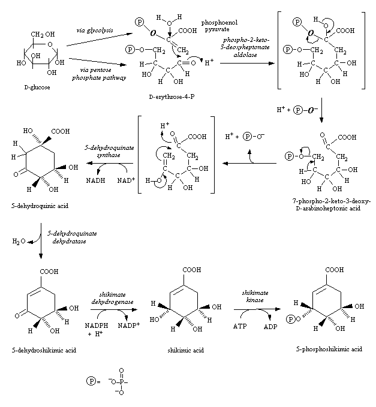
The reaction of PEP condensing with E4P is similar to an aldol
condensation and the mechanism of action illustrated is based upon the key
finding from labeling studies that
18
O atom in the phosphoryl group of PEP is
lost
to the P
i
product in the aldolase reaction. The next enzyme is involved in
cyclization, again with bond formation being driven by relatively lower
energy involved in a phosphate leaving group. NAD
+
is required, believed to oxidize the C5 hydroxyl which facilitates
elimination of the phosphate and activates the cyclizing carbon as an
enol.
This reaction pathway is known to lead to synthesis of the aromatic amino acids phenylalanine and tyrosine, which clearly provide the phenylpropane backbone in lignin synthesis. Phe is actually a precursor in all plants, while Tyr is effective only in grasses. Synthesis of the amino acids continues from the phosphoshikimate to prephenate, which provides both amino acids.
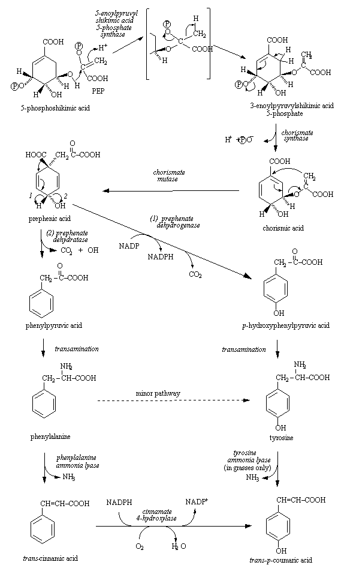
The mechanism for the 5-enoylpyruvyl shikimic acid 5-phosphate synthase enzyme has been determined using 3 H 2 O, in which label is incorporated into the methylene group. [Mitch's note: the intermediate is apparently stable and isolatable, or the reaction may have been monitored using proton NMR in order to make this determination.] The sum of the reactions put two double bonds in the ring, making way for aromatizing the ring. One reaction not shown in the arogenate pathway in blue-green algae, in which prephenate is aromatized to form arogenate, an immediate precurosor to tyrosine. The transamination reactions shown employ glutamate as the nitrogen donor.
Additional reports suggest a hydroxylation of Phe to form Tyr, but it is
unlikely that Phe is the substrate. The deamination reactions involving
the respective ammonia lyases for Phe and Tyr to yield the α,β-unsaturated
aromatic acids occur by a mechanism involving amine removal, followed by
loss of a β
pro
-S proton to produce the
trans
product. The tyrosine deamination occurs only in grasses. Either of the
products (
trans
-cinnamic acid and
trans
-
p
-coumaric acid) would be suitable precursors to forming the lignin
building molecules (see below), but
trans
-
p
-coumaric acid is the immediate precursor. Conversion of
trans
-cinnamic acid to the trans-p-coumaric acid is the action of the enzyme
cinnamate 4-hydroxylase. This enzyme is a cytochrome P450-mixed function
oxygenase, and it requires NADPH and O
2
, typical of this enzyme class. This enzyme occurs in the microsome and
has been studied in young
Catalapa
leaf, etiolated pea, and sorghum shoots. The mechanism of mixed function
oxidases has been studied and involves a complex migration of atoms called
the
NIH shift
(NIH=Natl. Inst. of Health) (see figure).
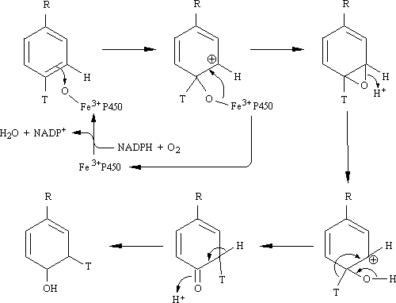
From trans-p-coumaric acid is the route to p-coumaryl alcohol, coniferyl alcohol, and sinapyl alcohol, the lignin-building units. The reactions involved include hydroxylation of the ring C3 (and also C5 sometimes), methylation of these hydroxyl groups but not the one at C4, and reduction of the aliphatic COOH to an alcohol (CH 2 OH), the steps occurring in that order. The methyl donor in the methylation reaction is the all-purpose S -adenosylmethionine found in many methylation reactions. COOH reduction first involves formation of the thioester of coenzyme A (to make –COSCoA), then reduction to the aldehydes, then reduction of the aldehyde to the primary alcohol. It should be noted that both that the thioesterification and both reduction steps for all 3 molecules is done by a single enzyme with obvious broad substrate specificity. The reactions are shown in the figure.
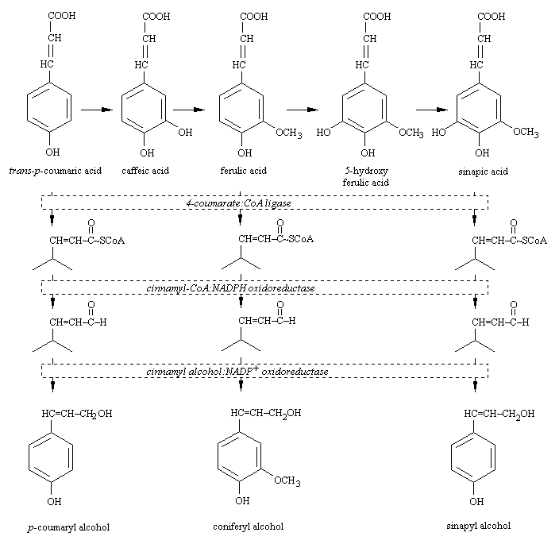
The lignin precursors are stored in cambial cells as their β-glucosides. The reducing end of the sugar forms the β-anomer by condensing with the 4-hydroxyl group on the ring. When the precursors are needed, a β-glucosidase in the cells hydrolyzes them for mobilization.
It was first suggested that compounds like coniferyl alcohol were involved in the polymerization reactions producing lignin (Erdman, 1939), and later confirmed (by Freudenberg in 1950s) in a reaction in which a lignin-like polymer was obtained with coniferyl alcohol placed in a fungal phenol oxidase under aerobic conditions. The enzyme was found to be laccase (name from the Japanese lac tree), a Cu 2+ -containing phenol monooxygenase. The copper center reacts with a hydroxy phenyl in a one-electron oxidation to produce and oxygen radical. The Cu + prosthetic group is oxidized by molecular oxygen for the next catalytic step. The reactions are shown below.
Enz-Cu 2+ + R–C 6 H 4 –OH → Enz-Cu + + R–CH–O + H +
2 Enz-Cu + + 2 H + + ½ O 2 → 2 Enz-Cu 2+ + H 2 O
Various dimeric coniferyl alcohols were isolated from the lignin-producing reactions to examine how the radicals form for this molecule. At least three types of dimers were found, indicating coniferyl alcohol can link in three different ways. One mechanism is given for one of the dimers, guaiacyl glycerol-β-coniferyl ether: the 4-oxyradical is formed by laccase. The extensive conjugation in the molecule can stabilize the free radical at other positions in the ring (ortho and para to the carbon holding the oxyradical), and at position in the aliphatic side chain, namely the β-carbon to the ring. When the radical is at this carbon in the aliphatic chain (the ring is now a quinone), it can react with a nascent coniferyl oxyradical to form the ether-linked dimer, quenching the radicals present. A spontaneous hydration reaction stabilizes the quinone methide into the final product.
In lignin formation, the free radical reactions are generally likely to result in one monomer free radical reacting to with another monomer, and the dimer, still a free radical reacts with the appropriate site in another monomer, the process of adding monomers continuing ad infinitum . Gymnosperm lignin is built primarily from coniferyl alcohol. Dicotyledonous lignins are built from coniferyl and sinapyl alcohol free radical reactions. And monocot lignins are even more complex, adding p -coumaryl alcohol to the mix of monomers used in building.
All of the free radical reactions occur in the cell wall although the monomers are synthesized within the cell. Regulation of lignin synthesis late into the cell growth stages may be at the point of the 4-coumarate:CoA ligase, which begins the process of preparing the alcohols from the aromatic acids.
Proteins in animal cells targeted for secretion from the cell are synthesized in the rough ER. The synthetic processes involved with signal peptides (a sequence of hydrophobic amino acids at the N-terminus indicating the protein is to be secreted or become a membrane protein) has much experimental evidence. The protein synthetic process being completed, the protein moves to the lateral bend where vesicles of the ER form and give rise to transitional vesicles which fuse and form the Golgi cisternae. An enzyme in the Golgi trims the signal peptide from the amino terminal. The protein is targeted for secretion, being transported by vesicles which fuse with the plasmalemma and which dump the protein (enzymes) into the extracellular space. The manner in which proteins are placed in the cell wall of the plant is likely to be no different than the explanation for plant cells.
Studies of the biosynthetic processes for the waxes and monomers of cutin used in the epidermal cell wall areas depositing them have been done and more is known about these processes than is known as to how the monomers are used in forming cutin.
The mineralization of cell walls is found in only a small number of plants, and in those cases, increases in mineral content correlated with plant age. Hence, accumulation of minerals may reflect the plant cell's attempt to deal with imbalances in cell mineral concentration.
In the pertinent stages of mitosis, formation of a cell plate during division marks the first appearance of a primary wall being prepared. While chromosomes migrate to the opposite poles, parts of the ER and ribosomes accumulate at the equatorial region. Parts of the ER then form and interconnecting network with the spindle fibers, the resulting structure called the phragmoplast. The phragmoplast begins to extend within the limits set by the spindle structure toward the plasmalemma. While this process develops, vesicles of about 20-50 nm dia. appear within the phragmoplast, and these vesicles clearly appear to be the pectin-rich Golgi-derived vesicles guided to the cell plate by the spindle microtubules. While the first cell wall (middle lamella is formed) some connections between the cells will remain as perforations in the cell wall, maturing as the plasmodesmata.
The growth of primary wall, the deposition of cellulose microfibrils in the transverse and longitudinal orientations, their synthesis on the outside of the cell, has been mentioned elsewhere. The changes in the types of matrix polysaccharides and microfibrillar orientation involved in secondary wall formation have been discussed as well. The process and time of lignification, and where it occurs most, has also been discussed.
Photosynthesis is the use of light via the agency of chlorophyll to convert CO 2 to carbohydrates. The conversion requires a reduction (protons and electrons), since CO 2 is at a higher oxidation state. The CO 2 /(CH 2 O) n couple has a E 0 ′= −0.4 V and must therefore be driven by a X/X − with an E 0 ′ < −0.4 V. This system should be also abundant. Unfortunately, no such X/X minus; has a E 0 ′ < −0.4 V, but the O 2 /H 2 O couple (E 0 ′ = + 0.82 V) is abundant. To force against this energy uphill, the input of energy must come from the sun, since water does not normally donate electrons to an very strong reducing agent in X/X − .
From algae to the higher plants, all that is green and has chlorophyll is photosynthetic. Photosynthetic bacteria also account for a major portion of the carbon-fixing biosphere: the order Rhodospirillales is divided into the suborders Rhodospirillineae and Chlorobineae. The Rhodospirillineae have two families, the Chromatoaceaea or purple sulfur bacteria (formerly Thiorhodaceae) and the Rhodospirillaceae or purple nonsulfur bacteria (formerly Athiorhodaceae). The Chlorobineae contain one family, the Chlorobiaceae or green sulfur bacteria (formerly Chlorobacteriaceae).
The bacterial photosynthetic systems differs from plants in that they utilize only one photosystem in which the chlorophyll pigments are also different. Also the reductant for CO 2 is generated somewhat differently in some bacteria (ATP is used to reverse electron flow or alter in the respiratory chain). In other, the electrons are taken from molecules other than water. In general, photosynthetic bacteria do not generate oxygen as an end product (as they are certainly sensitive to it).
Reducing power in plants (ultimately) is in the form of NADPH, in which the NADP + /NADPH couple is E 0 ′ = −0.32 V. Water is the electron donor, and the free energy change is thus easy to calculate:
ΔG°′=−
nF
Δ
E
0
´
= −2 × 96,487 C mol
−1
× [−0.32 V− (+0.82 V)] = +220 kJ mol
−1
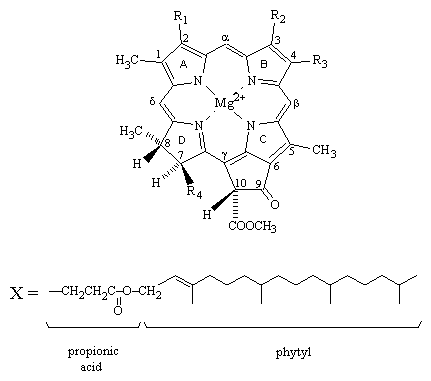
| Chl | R 1 | R 2 | R 3 | R 4 | Formation of C7-C8 double bond? |
|---|---|---|---|---|---|
| a | –CH=CH 2 | –CH 3 | –CH 2 CH 3 | X | No |
| b | –CH=CH 2 | –CHO | –CH 2 CH 3 | X | No |
| c 1 | –CH=CH 2 | –CH 3 | –CH 2 CH 3 | –CH=CHCOOH | Yes |
| c 2 | –CH=CH 2 | –CH 3 | –CH=CH 2 | –CH=CHCOOH | Yes |
| d | –CHO | –CH 3 | –CH 2 CH 3 | X | No |
Hence for one mole NADPH, 220 kJ light energy is necessary. One mole of
light of wavelength 700 nm produces 171 kJ energy, so two moles of
photons are necessary at the minimum. Actually four are necessary (see
below). The flow of electrons from water to NADP
+
is being defined experimentally, but two photosystems (PS I and II) are
necessary. They work by gathering the light energy (photons) via antenna
pigments, which transmit the energy via
molecular excitons
to a
reaction center.
At the reaction center, chlorophyll (Chl) is raised to an excited state
(Chl*) and becomes a reducing agent to an acceptor (A), which receives an
electron from Chl* to become Chl
+
. The A
−
which results passes its electrons to NADP
+
. Chl is regenerated by accepting electrons from a donator (D
−
) to reduce Chl
+
. The D
−
must have obtained its electrons from H
2
O ultimately.
The plant pigments are the chlorophylls, carotenoids, and phycobilins. All pigments interact with proteins in some way, with the chlorophylls and carotenoids interacting via noncovalent linkages, but the phycobilins being covalent. For these reasons, chlorophylls and cartoneoids are easy to extract with alcohol or acetone in macerated tissue. Phycobiliproteins are water-soluble and come out of tissue in water or dilute salt solutions.
Four different chlorophylls are found in plants (see table with structure). Chlorophyll a is found in all members of the plant kingdom (including algae) and is the most abundant within each species. Chlorophyll b is also widespread but is not found in algae except Chlorophyceae and Euglenophyceae. Chlorophyll c exists as two types, c 1 and c 2 ; both are found in Phaeophyceae (brown algae), Chrysophyceae (yellow-brown algae), and Bacillariophyceae (diatoms), but only c 2 is found in Cryptophyceae. Chlorophyll d has been extracted only from Rhodophyceae (red algae), but it may be a chemically altered form and may not exist in vivo.
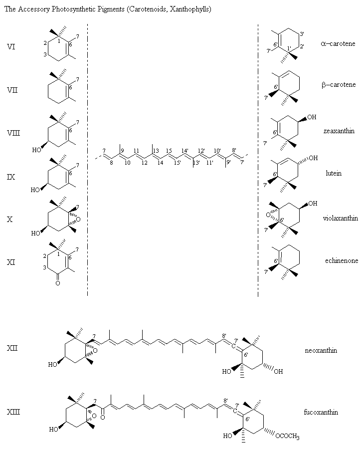
Carotenoids serve other functions as well as photosynthetic pigments, as they are found in nonphotosynthetic organisms such as fungi and in nonphotosynthetic tissues of photosynthetic plants such the petals, anthers, pollens, and in the eyespot of Euglena spp.
Higher plants make use of the carotenes, α- and β-(VII and VI), and the xanthophylls, lutein (IX), violaxanthin (X), and neoxanthin. Pteridophytes and bryophytes also show the presence of the pigments. Chlorophyceae has the typical higher plant carotenoids, and Chrysophyceae has such a high quantity of fucoxanthin (XIII) that its pigment is a result of the presence. Carotenoid glycosides are characteristic of blue-green algae: myxoxanthophyll (XVII)
Occur in three algal families, namely Rhodophyceae, Cyanophyceae, and Cryptophyceae. On the basis of their color, they are divided into red phycoerythrins and blue phycocyanins, and both occur in all the families listed above. Phycoerythrin is present substantially in Rhodophyceae, phycocyanins in Cyanobacteria.
Structurally they are open tetrapyrroles and can be represented in their linear configuration or closed (see structures below). Phycoerythrin and -cyanin are composed of two different protein subunits, α (MW~19,000) and β (MW ~21,000), which occur 1:1, with ea. subunit carrying covalently bound phycobilin, either 1-4 molecules depending upon the source. Some subunits predominate with one phycobilin, either phycoerythrobilin or phycocyanobilin, but some subunits carry both. The subunits aggregate as (α,β) n in vivo, where n is 3 or 6 with MW of ~134,000 and ~268,000, resp. In algal cells these phycobiliproteins aggregate into granules of regular array at the surface of the thylakoid and are called phycobilisomes .
The three pigment classes absorb light in different parts of the spectrum, with chlorophylls absorbing in the blue (~450 nm) and red (650-700 nm), carotenoids between 400-500 nm, and phycocyanins between 500-650 nm. One must be careful in determining these absorption maxima however, since the in vivo maxima are different than when these pigments are in chemical solvents. Chlorophyll a , for example, has a sharp maximum at 662 nm in ethyl ether but this red peak has been found to have broader maximum in vivo. The broad maximum is actually the result of summed component peaks of at least six different species of chlorophyll a which have different maxima: a 700 , a 692 , a 684 , a 677 , a 670 , and a 662 . (see French, Brown, Norris 1972) Similar analysis reveals chlorophyll b has two components in vivo: b 640 and b 650 , with b 650 considered to be the more abundant (major) form. Chlorophyll c 2 shows a single red peak at 633 nm.
The carotenoids demonstrate a similar character in solvents vs. in vivo. Fucoxanthin in hexane has three maxima at 427, 450, and 476, but in vivo absorbs in a broad range between 500-590 nm.
There is now much evidence that the pigments are organized into two normal photosystems , PS I and PS II , which are functionally and physically distinct. Partial separations can be achieved in the laboratory in which isolated chloroplasts are disrupted mechanically (forced through needle valves) or chemically (with dilute digitonin or TX-100). The homogenate is centrifuged at 3000 g for a clear green supernatant, then at 60,000 g on a 10-50% sucrose gradient. The less dense fractions are enriched in thylakoid membranes fragments containing a high proportion of PS I, while the denser fractions yield granal stack membrane fragments containing both PS I and PS II, but enriched in PS II.
The less dense fractions of the sucrose gradient (PS I-enriched) have been analyzed and are found to contain about 200 antenna chlorophylls, 50 cartenoids (mostly carotenes), one cytochrome f , one plastocyanin, two cytochrome b 563 (cytochrome b 6 ), and one or two membrane-bound ferredoxin per chlorophyll a 700 (P700). PS I appears to contain one molecule of P700 forming its reaction center, with 250 antenna molecules supporting the center. The antenna molecules are all forms of chlorophyll a but a 700 and both forms of chlorophyll b ; there is a body of work, however, that chlorophyll b may not be necessary since an a SDS-PAGE resolvable chlorophyll-protein complex called CPI (MW 110,000 with 14 chlorophyll molecules), has no chlorophyll b and is essential for the light phase. The nonpigment components in the fraction contribute to electron flow in the light phase both on the donor and recipient side of PS I. PS I absorbs light maximally in the wavelengths longer than 680 nm, and is likely therefore to contains chlorophyll a forms and carotenes that absorb at longer than 680 to excite P700.
The heavy sucrose fraction (PS II-enriched) shows about 200 antenna pigments, 50 carotenoids (mainly xanthophylls), and unidentified electron donor (Z), an unidentifed acceptor (Q), ~4 plastoquinones, two cytochrome b 559 and six Mn 2+ per molecule of chlorophyll a 680 (P680) which is present (chlorophyll a 690 or P690 in some species). The nonpigment components are involved in electron transport. The absence of a 700 nm peak (despite the presence of PS I) in this fraction generally indicates that P700 is associated with PS I and P680 with PS II.
There is work that chlorophyll
b
and xanthophylls used to collect light in higher plants and green algae is
not associated with PS II but rather occurs in a separate unit called
light-harvesting chlorophyll protein (LHCP). It also has some chlorophyll
a
, transfers energy of the light photons to PS I and PS II, and might be
responsible for the light
spill over
phenomenon observed in photosynthesis. PS II should be largely composed of
chlorophylls
a
662
,
a
670
, and
a
677
, which should transfer their energies to P680. SDS-PAGE has also resolved
a chlorophyll-protein complex distinct from CPI and LHCP consistent with
such a composition.
Chloroplasts isolated from plants grown at low light intensities (<3 kilolux) are rich in LHCP while plants grown at greater intensities (~20 klx) have less, suggesting that PS I and PS II are unable to gather enough light themselves to drive photosynthesis and require LHCP for assistance.
One component of LHCP is a protein encoded in the nuclear genome and
synthesized in the cytosol, while the CPI protein is encoded by the
chloroplast genome and synthesized by chloroplatidic ribosomes. It may be
learned later that the protein-chlorophyll complex making up PS II is
coded by the chloroplast, and if so, the endosymbiont hypothesis that
chloroplasts represent an organism related to or once a blue-green algal
invader
providing photosynthetic ability while the
host
synthesized a protein to assist in light-gathering (coding the LHCP). It
is known that chlorophyll
b
is not in blue-greens or in PS I and PS II, while LHCP contain the
chlorophyll
b
provided by the
host.
It should be noted that the lower plants (algae) use chlorophyll c 1 and/or c 2 (brown, gold, diatoms, and Cryptophyceae) and phycobilins (red and blue-green algae) in place of chlorophyll b in supplemented light harvesting.
At this time the location of PS I and PS II in the chloroplast is not clear. Stromal thylakoid membranes are rich in PS I, and the granal stack membranes are rich in both PS I and PS II. A combination of results from study using freeze-fractures EM, photochemical studies, and ultrastructural analyses of particles from mechanically or detergent-lysed chloroplasts suggested that PS I is in the outer half of the membrane, PS II the inner half. Freeze fracture EM shows 11 nm particles which are located on the outer halves of the hydrophobic faces of the membranes in which the granal surfaces do not stack; these appear to be easily removed by washing with EDTA, indicating the 11 nm particles are probably the CF 1 photophosphorylating coupling factor. In the membrane regions where grana stack, the interior side shows a protein with 13-17 nm dia. and 8-9 nm high (i.e., it may fully span the membrane) and which seems to form a crystalline array. Such particles are less numerous and smaller in the unstacked thylakoid faces. Thylakoids suspended in low salt solutions show and unstacking of the grana (without loss of photochemical activity) which is restored in high monovalent cations (50-100 mM) and lower divalent concentrations (3-5 mM). This unstacking is correlated to a loss of the dense populations of large particles in the membrane as seen under freeze-fracture EM. The other studies show PS I is associated with the smaller particles and PS II the larger. Other work throws these results into doubt, indicating that PS II spans the membrane (although not PS I) but in freeze-fracture partitions favorably to one half.
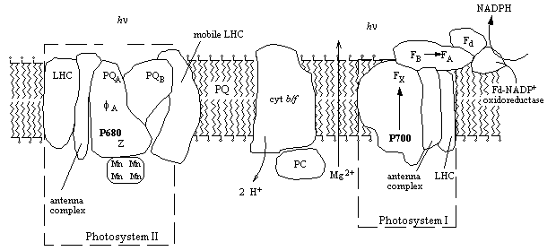
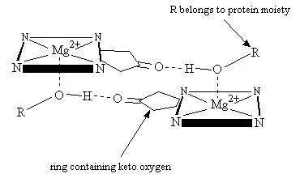
Physical definitions of the reaction center complex have not been made. The spatial relationship between elements of the photosystems has only been partially defined. EPR of the P700 + containing one unpaired electron indicates that two special chlorophyll a molecules share the charge (unpaired spin) state, and that they are linked together in some way. These molecules are called the special pair (Chl sp ). Shipman et al (1976) have put forth the most satisfactory proposed structure. In this structure, the Mg 2+ metal ion is coordinated at a fifth position in both molecules each by a hydroxyl oxygen with is part of a protein: their structure demands
Indeed, besides coordinating with the Mg metal, this functional group similarly has hydrogen of this hydroxyl H-bonding with the keto oxygen on the E ring of the other chlorophyll molecule (see illustration). This H-bonding effectively keeps the proton a greater distance from the oxygen interacting with the Mg atom, thus preventing any reduced electrostatic interaction between Mg and the hydroxyl oxygen.
It is possible that the ROH, really an R-X-H, could be R=H and X=O (meaning water) is linking the two molecules. In the arrangement shown above, the planar chlorophyll molecules are such that the plane distance is 3.6 Å, and the π MOs of the conjugated ring system in both rings can interact optimally and permits unpaired spins to be delocalized over two rings rather than one.
(This information taken from another sourced dated 1993)
Below is the scheme of the arrangement of the photosystems in the granal and stromal thylakoid membranes. Granal thylakoids generally contain PS II photosystems which are removed from the stroma. Stromal thylakoids generally hold the PS I photosystems and the H + -ATP synthase. The LHC are bound to both PS I and PS II, and there is also a mobile form. The cytochrome b / f complex involved in cyclic and noncyclic pathways is found in both the stromal and granal thylakoids.
Recall that light has wave and particle attributes with energy expressed as E = h ν = hc /λ ( h = 6.6262 × 10 −34 J s; c = 2.9979 × 10 8 m s −1 ). Photon energy is generally expressed in eV (1 eV = 1.6022 × 10 −19 J). One mole of photons is called 1 Einstein photons.
The pigment molecule is an arrangement of atoms connected by single and double bonds. Bonds are essentially the representation of an overlap of AOs between atoms to form bonding MOs, in which each bond has a pair of electrons with opposite spins. The C-C single bond essentially represents the hybridization of the AOs of the carbon atom (a mixture of one s and three p orbitals) to form an sp 3 MO for bonding overlap with another carbon atom. The particular bond is a σ bond. With double bonds, a single sigma bond of sp 2 hybridization forms while another bond between the unmixed p orbitals of the bonding carbons forms a smaller (and energetically weaker) overlap to form a π bond.
MO theory necessitates that the number of AOs two atoms bring together in bonding must be conserved in the number of MOs. Hence, the formation of a bonding σ MO from two (hybridized) AOs from each carbon necessitates the formation of another MO. Two sp 3 or two sp 2 AOs give rise to a bonding σ MO and an antibonding σ* MO. Linear combination of two p AOs also gives rise to a bonding π MO and an antibonding π* MO. Lone pairs on oxygens and nitrogens account for another AO in which electron pairs do not participate in bonds, with energies between the highest bonding and lowest antibonding MOs.
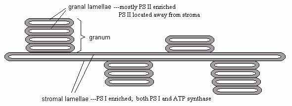
In nearly every stable molecule, electron number is even, and electron pairs occupy bonding or nonbonding MOs in the ground state. Photons of the right energy can cause electronic transitions to occur between MOs however, usually from one of the bonding MOs to the antibonding MO (resulting in an excited state). Four transitions are actually possible: σ→σ*, π→π*, n →σ*, n →π*.
The general order of energy necessary for the transition is σ→σ* > n →σ* > π→π* > n →π* but there can be exceptions. The energies involved in such transitions has been experimentally determined for simple organic molecules (see table).
These energies are much higher (meaning photons with shorter wavelengths) than what is characteristic based upon the light absorption spectrum of the pigments. However, certain π→π* transitions are possible when the molecular structure contains an extensive amount of conjugated double bonds, since the stabilization of a free radical or ion can be delocalized by the extensive charge entropy of such a system, and stabilization is translated as lower energy. As the number of π and π* MOs increase, the gap between the highest π and lowest π* must decrease, enabling transitions at longer wavelengths. From the table below, not that a conjugation of seven double bonds puts the energy needed for transition in the visible light spectrum. All carotenoids show at least seven double bonds and typically more double bonds than that number, clearly accounting for their function in photosynthesis.
| bond or electron | transition | photon | |||
|---|---|---|---|---|---|
| E | |||||
| λ (nm) | (J) | (eV) | |||
| ethane | C–C (σ) | σ→σ* | 135 | 1.47 × 10 −18 | 9.18 |
| formaldehyde | O: lone pair | n →σ* | 160 | 1.24 × 10 −18 | 7.75 |
| ethylene | C=C (π) | π→π* | 175 | 1.14 × 10 −18 | 7.09 |
| formaldehyde | O: lone pair | n → n * | 285 | 6.97 × 10 −19 | 4.35 |
In addition, electronic level transitions are complicated by the existence
of various vibrational modes which actually require less energy relative
to the electronic level transitions (their energies are in the range
0.075−0.5 eV or 16,500 to 2500 nm, in the far infrared). Vibrational
entropy is the vibration occurring between nuclei, with these relative
nuclear movements influencing changes in electronic transition energies as
well. An electron which makes a π→π* transition does so in about 10
-15
seconds, assuming one of the vibrational energy levels within the π* MO
and without changing its spin direction. The electron will fall from the
higher vibrational level to the lowest within the π* MO in a series of
transitions called the
vibrational cascade
; during each transition, a quantum of energy is emitted within the
spectrum of the transition (the infrared or
heat
). The emission is manifested really as a collision of other molecules
with the excited molecule, resulting in alteration of the total
vibrational states of the system. The vibrational cascade is nonradiative,
meaning the energy changes conferred from one atom to another within the
molecule or between molecules is not manifested in the form of a photon.
The vibrational cascade process requires 10
-12
to 10
-9
s to complete.
| Carotenoid | No. of conj. double bonds | λ max |
|---|---|---|
| butadiene† | 2 | 217 |
| phytoene | 3 | 286 |
| phytofluene | 5 | 347 |
| ζ-carotene | 7 | 400 |
| neurosporene | 9 | 439 |
| lycopene | 11 | 472 |
| 3,4-didehydrolycopene | 13 | 492 |
| 3,4,3′,4′-tetradehydrolycopene | 15 | 510 |
| † butadiene is not a carotenoid. Spectra taken in light petroleum. | ||
The pigment molecule remains in the excited state. The excited electron still has a spin opposite to its partner in the other MO. EPR determinations would show the existence of an unpaired electron as a single signal; hence the reference to a singlet state in the excited electron and its ground state partner with opposite spin. In cases where molecules can absorb at two different wavelengths, e.g., where chlorophyll can absorb in the red and blue regions of the visible spectrum, molecules can assume two different excited singlet states with (vastly) different energy levels. Excited singlet states have lifetimesof 10 -10 to 10 -6 seconds (the lifetimes are expressed as the time required for excited molecules to a fraction which 1/ e of the original number of excited molecules). The energy of the singlet excited state is dissipated in several possible ways:
The illustration below attempts to illustrate what is occurring to the excited electron in these steps.
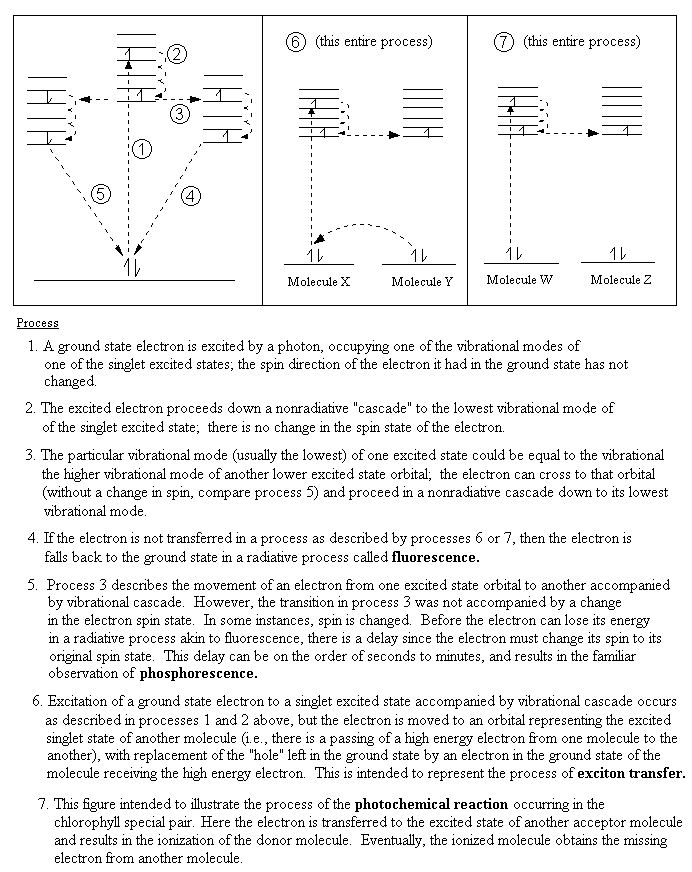
The actual process involved in photosynthesis makes use of the energy transfer mechanism. Antenna pigments move the electrons at the high energy levels toward the reaction center, which itself makes use of the photochemistry transfer process. While internal conversions and vibrational cascades are inevitable, the excited-to-ground state transition is by direct energy transfer. Fluorescence and phosphorescence are wasteful processes and do not constitute the means by which energy is transferred from antenna chlorophylls to the reaction center.
The energy transfer from antenna pigments to reaction center is nontheless
downhill,
that is, the photon progressively (in small quanta) loses its energy in
going toward P700 and P680. There is no
back
energy transfer. The scheme of energy transfer is illustrated below. The
path taken during energy transfer from molecule to molecule is thought to
resemble a random walk, a path which eventually meets with a reaction
center. It is possible that the reaction centers are dispersed randomly
within the pigment system in which the photon moves via the pigment system
until by chance it encounters a reaction center; such an energy capture
pathway would be called the
lake
model since the reaction centers float like boats in a huge lake of
antenna pigments. Another is where the pigment system organizes around a
single reaction center, such that the antenna pigments conduct that photon
to a single reaction center; this is the
isolated puddle
model of excitation energy flow.
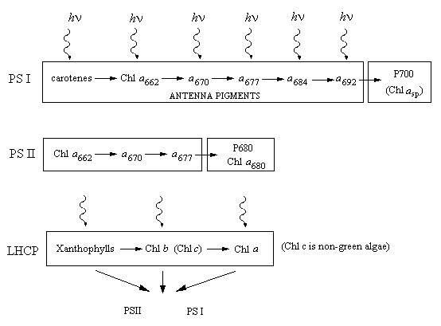
Once the P680 or P700 excited singlet is formed, the photochemical reaction must occur quickly else the captured energy is lost by fluorscence. The bacterial photochemical reaction has been shown to occur in 6 ps (several orders faster than fluorescence). This would indicate that the P680 and P700 centers must be located within the redox system of the thylakoid membrane. The redox system which reduces P680 and P700 is also likely to be physically close.
Although carotenoids play a role in the photosynthetic energy transfer process, they also play a role in minimizing damage caused by the formation of singlet oxygen. It should be noted that organic compounds which favorably would react with oxygen (be oxidized) do not do so because reaction is spin-forbidden and therefore slow. Singlet oxygen represents an excited state of oxygen. The energy is supplied by a photon in the presence of a photosensitizer (chlorophyll), in which chlorophyll assumes a singlet excited state, which is used in photochemical reactions which later involve formation of oxygen. However, intersystem crossing to form the chlorophyll triplet state ( 3 Chl) can occur, and the reaction with atmospheric 3 O 2 is now spin-permitted since both are triplets. The reaction involves electron transitions producing singlet Chl and a very reactive singlet O 2 . Carotenoids can prevent severe photodynamic damage by
Mechanism (2) is the most important since 99.9% of singlet oxygen reacts in this way. Carotenoids with ≥ 9 double bonds are capable of quenching in this way since the singlet to triplet transition energy is comparable to the triplet-to-singlet transition in oxygen.
This process is called noncyclic photophosphorylation . The path of electrons is noncyclic since the electron generated in the flow of electrons does not return to the molecule from which it was taken. The photo - indicates the necessity of light to supply the energy which initiates the process. And ATP is produced by the phosphorylation of ADP during the process. Two photosystems and three electron transport chains are involved.
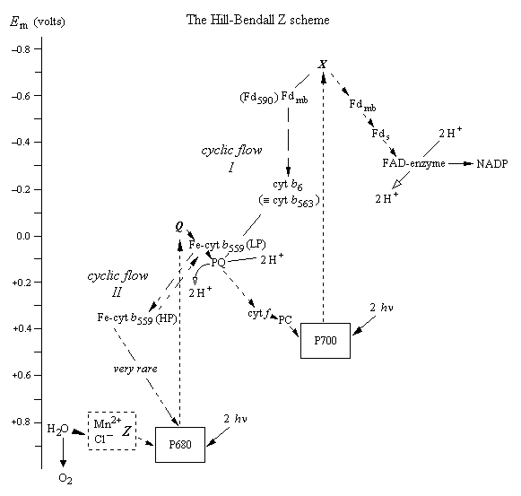
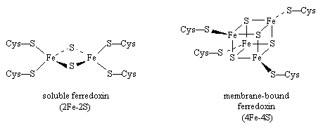
The term X is used to denote the first redox component of this chain since it has yet to be characterized. ESR signals at low temperatures have identified its presence in the photooxidation of P700. The reduction potential of X is E 0 ′ = −0.73 V. The X − formed then reduces ferredoxin ( Fd ) ( E 0 ′ = −0.54 V). Actually chloroplasts contain three ferredoxins: one is a soluble Fd with a 2Fe-2S center ( E 0 ′ = −0.43 V), and the other two are membrane-bound called Fd 540 and Fd 590 since their E 0 ′ are −0.54 V and −0.59 V, resp. Once the membrane Fd is reduced, it then reduces the soluble Fd (Fd s ). All redox reaction with Fd are one electron transfers which are not accompanied by H + movement. It should be noted that the Fd 540 is the membrane-bound ferredoxin thought to be reduced in the noncyclic pathway, while Fd 590 is thought to be involved in the cyclic pathway.
The soluble ferredoxin then binds 1:1 with a flavoprotein (FAD-containing) called ferredoxin:NADP oxidoreductase, an enzyme complex loosely bound to the thylakoid membrane. Two molecules of Fd s must bind in one electron transfers, and this requires the movement of two H + as well. NADP does not bind to the flavoprotein until it is fully reduced.
This pathway essentially describes the transport from PS II to PS I. In some parts electron flow is movement by one-electron redox components, in others by two-electron redox components in which H + is necessary and is transported. Once two P700* have given electrons to NADP, the P700 + cation radicals must be reduced ( E 0 ′ = +0.43 V). Plastocyanin (blue-colored in the oxidized form) is a one-electron transfer component (MW 21,000) of the intermediate pathway containing two Cu 2+ atoms which reduces P700 + ( E 0 ′ = +0.37 V). The oxidized PC is then reduced by cytochrome f (from frons , leaf) which is a c -type cytochrome ( E 0 ′ = +0.36 V) involved with one-electron transfers. Plastoquinone (plastoquinol) is the reducing agent for cytochrome f , and its redox reactions are all two-electron processes accompanied by vectorial H + movement from the stroma into the thylakoid lumen, a process certainly involved with coupled ATP synthesis (2 ATP per 2 electrons/2 H + moved is expected, although the actual value is between 1 and 2). PQ is greater in quantity than most other components of the transport chain, forming a large, apparently translocatable pool.
PQ is in turn reduced by two molecules of cytochrome b 559 (low potential form), which is a b -type cytochrome. This cytochrome exists in two interconvertible forms which appear to have different E 0 ′ values. The low potential form ( E 0 ′ ~ +0.06 V) reduces PQ, and the high potential ( E 0 ′ = ~ +0.37 V) form reduces P680 + under special conditions (cyclic electron flow unaccompanied by phosphorylation). Cytochrome b 559 (LP) is then reduced by an unidentified redox component, Q ( E 0 ′ = − 0.04 V) which is the immediate acceptor of electrons from P680*. The drop from −0.04 V to +0.37 V is 79 kJ mol -1 , the energy converted to an H + gradient which then drives formation of 2 ATP (a process requiring 71 kJ mol -1 ).
Photons which are conveyed to P680 activate it to P680, with an equivalent potential change from +0.9 V to −0.1 V (a 1 V change). With P680 + formed from intermediate electron chain transfer accepting the electron, the reduction of P680 + must come from a reaction of higher potential. This is achieved by oxidation of water ( E 0 ′ = +0.82 V). It is not as simple as P680 + abstracting electrons directly from a physical association with H 2 O. Several protein components in which Mn 2+ and Cl − are also involved have been identified in the complex. Thorough characterization is hampered in that thylakoid membranes must be intact and the system is easily activated by detergent presence. A single redox component, Z , has been said to mediate the transfer of electrons directly from H 2 O to P680 + . Work (by Fowler and Kok, 1974) with spinach chloroplasts which were preincubated 40 min in the dark and then subjected to intense light flashes (each 10 μs in duration) once every second indicates that Z actually gives four electrons to four P680 + molecules (and accumulates a 4+ charge) before it apparently produces a single O 2 molecule (oxygen evolution being assessed). Flashes 1 and 2 produced very low O 2 yields, flash 3 was very high, and flash 4 of intermediate size. The periodicity of four flashes was clear, with the 3rd, 7th, 11th, etc. producing the highest O 2 yields.
It is quite likely that P680 exists in close physical contact with Z and Q (a Z:P680:Q complex). Photons cause an excited state (Z:P680*:Q), the a charge separation in which Q is the acceptor (Z:P680 + :Q − ). In a relatively slower process cytochrome b 559 then collects the electron from Q before recombination occurs (Z:P680 + :Q), and then P680 oxidizes Z (Z + :P680:Q). This cycle continues until Z reaches the Z 4+ state and is thus capable of oxidizing water.
From this noncyclic process, it is clear that eight photons generate two NADPH, four ATP, and one oxygen molecule (using two H 2 O molecules).
[The Z redox component of this particular part of the photosynthetic electron transport chain has now been identified as tyrosine-161 (Y-161) of the polypeptide subunit called D 1 . The phenol moiety of this amino acid is capable of undergoing one-electron redox changes—radical formation in phenols is energetically feasible—and it mediates the immediate replacement of a ground state electron to P680 + . It subsequently obtains an electron from another component perhaps directly from a manganese atom. The identification of this tyrosine residue as a component of the photosynthetic electron transport chain has been supported by physical studies using EPR and fluorescence, analysis x-ray diffraction patterns showing proximity of the putative tyrosine to the P680 special pair, and mutagenesis studies in which loss of photosynthetic ability is associated with the presence of mutant polypeptides.]
Associated with PS I are other electron transport systems which can apparently accept electrons not from PS I directly (P700*), but perhaps from X 10.0pt'>− . The electron eventually returns to P700 + to form the ground state P700, but down a different pathway. Some redox components with E 0 ′ < 0.0 V reduce PQ in the intermediate pathway, diverting from the NADP reduction pathway, and the electrons then proceeds as usual (PQH 2 ) down the rest of the intermediate pathway to P700 + . In other cases with components in which E 0 ′ > 0.0 V, PQ is bypassed and either PC or P700 + directly is reduced. Arnon (1955) demonstrated the PQ-mediated cyclic pathway in which flavin mononucleotide was added (FMN/FMNH 2 ; E 0 ′ = −0.22 V) and shown to induce the pathway. The PQ-mediated pathway generates ATP since this pathway is associated with vectorial H + movement.
The components of the cyclic pathway are not exactly known. It is suggested that flow from X − proceeds to Fd 590 (the other membrane-bound form of Fd) then to cytochrome b 6 (or cytochrome b 563 ), with E 0 ′ = −0.18 V. PQ is reduced by this cytochrome.
Govindjee (1975) has called this cyclic flow Cyclic I to distinguish it from another cyclic electron flow, Cyclic II, in which electrons are accepted by Q and proceed to reduce cytochrome b 559 as in the normal pathway. Cytochrome b 559 is in equilibrium with both low potential (LP) and high potential (HP) forms, as indicated above. The LP form of the cytochrome can reduce PQ in the noncyclic pathway, or alter to the HP form, which reduces P680 10.0pt'>+ . This cyclic flow generates no H + gradient, and therefore forms no ATP. The physiological significance of Cyclic II is unclear.
Analysis of the ATP requirements for certain biosynthetic processes, including starch, lipid, pigment, and nucleic acid syntheses, as well as in extrachloroplastidic syntheses (ATP cannot cross the membrane, but its energy can via the 3-PGA/DHAP shuttle), indicate a need for cyclic phosphorylation since it seems the noncyclic pathways may not generate the net ATP necessary for these processes.
These reagents are divided essentially into three classes, with some of them proving as useful herbicides.
Methyl viologen, benzyl viologen, anthraquinone-2-sulfonate, and diaminodurene interfere with electron flow from PS I some place before Fd can receive them, and are probably reduced directly by X − . Ferricyanide and dichlorophenolindophenol (DCPIP) accept electrons in the intermediate chain, probably from cytochrome f or PC.
Hydroquinone, hydroxylamine, phenylenediamine, diphenylcarbazide, and Mn ions have been found to supply electrons on the H 2 O side of the LP form of cytochrome b 559 . Reduced forms of DCPIP, N,N,N′,N′ -tetramethyl- p -phenylenediamine (TMPD) and 2,3,5,6-tetramethyl- p -phenylenediamine (or diaminodurene, DAD) donate electrons to some components of the intermediate chain, but not necessarily the same component.
Certain inhibitors of electron flow have been identified. 2′-Phosphoadenosine diphosphate (NADP w/o the nicotinamide) inhibits the Fd:NADP oxidoreductase, prevent electron transfer. Disalicylidenepropanediamine (DSPD) inhibits flow at Fd. 2,5-Dibromo-3-methyl-6-isopropyl- p -benzoquinone (DBMID) competes with PQ to stop electron flow between cytochrome b 559 and cytochrome f . Certain substituted ureas such as 3-( p -chlorophenyl)-1,1-dimethylurea (CMU) and 3-(3,4-dichlorophenyl)-1,1-dimethylurea (DCMU), and certain triazines such as 2-chloro-4-ethylamino-6-isopropylamino- s -triazine (atrazine) and 2-chloro-4,6-bis(chloroethylamino)- s -triazine (simazine), and 2n-heptyl-4-hydroxyquinoline-N-oxide (HOQNO) block the flow between Q − and cytochrome b 559 LP.
The triazines mentioned above have been used as herbicides since 1952, where they are absorbed in leaves and roots. The substituted ureas CMU and DCMU have marketed as herbicides under the name Monuron and Diuron, resp., and are applied to the soil, absorbed by the roots and translocated via the apoplastic system to the leaves as for the triazines. Some plants are susceptible to direct leaf application.
Bipyridylium herbicides include paraquat (1,1′-dimethyl-4,4′-bipyridylium dichloride. Paraquat is methyl viologen which accepts electrons from PS I at a point before Fd ( E 0 ′ = −0.44 V). It therefore prevents NADPH formation. The phytotoxic effect is more rapid than what could occur by reducing NADPH formation: it appears to form planar free radical which can reduce oxygen to superoxide anion. The superoxide is converted quickly by superoxide dismutase (SOD) to H 2 O 2 and O 2 present in the chloroplast, with H 2 O 2 then reacting with unsaturated fatty acyl moieties in the acyl lipids. This consequently disrupts the maintenance of chloroplast membranes which depend on these lipids. Paraquat is a severe poison in animals, too, with severe pulmonary fibrosis and associated kidney and liver damage.
The NADPH and ATP formed from the photosynthetic apparatus is used now used in the nonlight-dependent (dark) phase for converting CO 2 to carbohydrate. The most important pathway is the carbon reduction (Calvin) cycle which is now called the C 3 pathway to distinguish it from plants using the C 4 or the c rassulacean a cid m etabolism (CAM). C 4 plants are generally tropical plants, while the CAM plants are generally growing in arid desert regions. C 3 plants use only the Calvin cycle to reduce CO 2 to carbohydrate, while C 4 and CAM plants also use, but have additional enzymatic steps. Differences between these plants are based on the time of day when such pathways are active and the tissue location of metabolism.
Plant tissue structure is directly correlated with the metabolic systems used by these plants. For example, the density of stomata in the leaves of C 3 and C 4 plants is quite high (5000 to 30,000 per cm 2 depending upon species), but the stomata of C 4 show a higher resistance to gaseous diffusion than do C 3 plants. CAM plants show a very low leaf stomatal density (100-800 per cm 2 ) and also have a high resistance to gaseous diffusion. C 4 plants show an extensive intrafrondal air cavity space to maximize atmospheric contact with as many photosynthetic cells as possible, few cells being two or three cell layers removed from the gas space. C 4 plants also show concentric layers of mesophyll and bundle sheath cells near the vascular bundles. C 3 plants are have a less open structure but parallel to the vascular bundles the intercellular spaces are significant. CAM plants expose very few cells to open air spaces to minimize water loss at the expense of a rate-limiting CO 2 diffusion.
CO 2 is first incorporated into d -ribulose-1,5-bisphosphate (RuBP) to form two molecules of 3-phospho- d -glyceric acid (3-PGA) by a very important enzyme called ribulose 1,5-bisphosphate carboxylase-oxygenase (Rubisco) (discovered in 1947 by Williams and Bonner). A mechanism for the reaction is suggested below which involves tautomeric activation of RuBP first to an enediol intermediate to make it nucleophilic, and then carboxylation occurs at C2. The nucleophilicity is also enhanced by removal of the hydroxyl proton on C3 to produce the enolate anion which should easily undergo carboxylation. An unstable intermediate would be formed, 2-carboxy-3-keto- d -arabinitol-1,5-bisphosphate, and the assumption seems correct since (i) an analog of the intermediate, 2-carboxy- d -arabinitol-1,5-bisphosphate irreversibly inhibits the carboxylase and oxygenase activities of Rubisco and (ii) two molecules of 3-PGA are formed and the chemistry is consistent. [The reaction intermediate proposed by Calvin in 1954, later identified in 1982. Inhibitor studies in 1980 and 1981.]
It should be noted that CO 2 and not HCO 3 − is the substrate since studies with HC 18 O 3 − show that only two oxygens in the products (indicating CO 2 use) instead of three, as would be the case if HCO 3 − were in fact used. [The equilibrium of CO 2 and HCO 3 10.0pt'>− is not reached instantaneously in an aqueous environment if care is taken to remove all traces of carbonic anhydrase present in the chloroplast.]
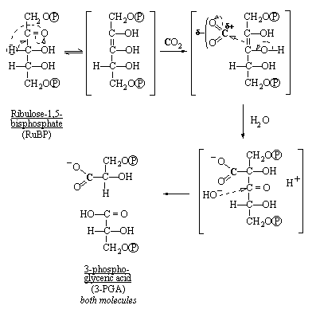
Rubisco requires Mg 2+ during the reaction which is thought to be involved in participating with the protein in preparing CO 2 for the carboxylation step by enhancing its charge polarization. Mg 2+ has also been implicated in stabilizing the β-keto acid intermediate until C-C bond cleavage can occur (see notes on rubisco below). (A requirement for Cu 2+ was also proposed but has been ruled out.)
Rubisco has a second function as an oxygenase (hence its full name), first identified in 1971. In a similarly Mg 2+ -dependent step, the five-carbon RuBP is oxygenated at C2 just as it would be carboxylated to form a two carbon phosphglycolic acid and a three-carbon 3-PGA (water is used in the final step as for carboxylation). Again, an enolate anion is generated to produce a nucleophile which combines with O 2 to form a peroxide, which can then be hydrolytically cleaved. (Again, although Cu 2+ is present and has been implicated in the oxygenase activity, studies show no requirement for either activity in Rubisco.) The phosphoglycolate is metabolized in the photorespiration process.
Photosynthetic organisms (plants and bacteria) produce what appear to be natural inhibitors of Rubisco, and there may be a good reason to inhibit activity of this first step of an important metabolic pathway. For example, d -Carboxyarabinitol 1-phosphate is an endogenous substance found in chloroplasts and may be used to inhibit photosynthetic activity.
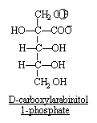
When would it be prudent to inhibit this activity? Perhaps when photosynthetic activity would be nonproductive for the purposes of the plant's development stage, e.g., when the leaf is no longer needed and the plant is going to seed (setting fruit) and in a senescent process. Or when there is a disease process in which the leaf stem is damaged (or some critical part affecting product transport in phloem) and photosynthetic activity would serve to benefit only the disease-causing agent (bacteria, virus, etc.).
Rubisco makes up 50% of the soluble protein in leaves (by far the most abundant and most significant). In early studies it was called Fraction I protein as a result of how it separates during analytical ultracentrifugation. It is a multisubunit protein of MW 550,000, with eight large subunits (LS) of 51-58 kDa and eight small subunits (SS) of 12-18 kDa. The quaternary structure of Rubisco is shown below.
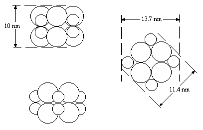
Both catalytic functions reside in the LS at the same site undoubtedly, which is nonetheless active in the absence of the SS. Proof of activity in the LS is by immunochemical studies in which anti-LS inhibits activity while anti-SS has no effect. The SS may serve a regulatory function. The LS is expressed by the chloroplast genome while the SS derives from the plant nuclear genome, where it is produced as a large precursor that is trimmed within the chloroplast by a stromally located protease.
Lys and Arg residues have been shown to be involved in RuBP binding, suggesting a Schiff base interaction may be involved. But such mechanisms are not compatible with C–O bond retention at C2 and C3, shown by another study using isotopes.
The K m for CO 2 for Rubisco was at first measured to be 0.2-0.5 mM. This is very high since the dissolved CO 2 concentration in chloroplast protoplasm is estimated at 0.01 mM (the same as the CO 2 in water in equilibrium with the atmosphere). Studies now show that experimental conditions in the early studies markedly altered the kinetic properties of Rubisco after they are released from chloroplasts. If Rubisco is assayed within 30-60 S after recovery from chloroplasts, the K m for CO 2 is only 11-18 μM (about the amount of CO 2 normally dissolved in water); 3 min later it is ~500 μM. It is likely that the K m for substrate is even lower than the initially handled enzyme.
It is also shown rubisco has a slow activation phase: addition of CO 2 and Mg 2+ at saturating levels which were previously absent do not produce an immediate high velocity state, and there is a lag period to maximal activity. Activity assays conducted with CO 2 - and Mg 2+ -preincubated enzyme produces normal assay values. This activation requires CO 2 (not HCO 3 − ) initially, in which CO 2 slowly complexes with enzyme to form an E-CO 2 , which is inactive. Note that the evidence indicates that the binding of CO 2 is to an amino group (Lys?) on the enzyme to form a carbamate complex. Mg 2+ then binds rapidly to E-CO 2 to form the active metallated complex E-CO 2 -Mg 2+ . It is not known if binding is to sites away from the active site. The activation rate is influenced by pH (increased if pH is raised, although CO 2 tends to form bicarbonate, which is not a substrate) and by RuBP (decreased if RuBP is present). There is debate as to whether Mg 2+ is required in the catalytic mechanism or merely for activation. Investigators have defined requirements for activating rubisco prior to assay which involve preincubation with Mg 2+ and CO 2 (using NaHCO 3 and carbonic anhydrase) at a particular pH, starting the assay with RuBP addition.
A protein of 40 kDa has been reported by one group and called Rubisco activase. This protein has been purified and is stable; when re-constituted with photosynthetic membranes and using methyl viologen as an electron acceptor, Rubisco activity proceeds quickly in the presence of light.
The details of the activation process are not fully elucidated. In the presence of Mg 2+ , one Lys residue per LS is modified by the affinity label N -bromoacetylethanolamine; in the absence of Mg 2+ , two different Cys residues are modified, one of them only 3 residues from the Lys modified under different conditions.
Effects of other metabolites have shown that 6-phosphogluconate enhances activation, but inhibits catalysis since it is a competitive inhibitor of RuBP. SuBP has been shown in one study to competitively inhibit rubisco. A problem with suggesting regulation by metabolites is that the stromal concentration of rubisco (est. to be 2 mM) is on a level with the concentration of supposedly regulatory metabolites. Independent regulation of the carboxylase/oxygenase activities in some mutant enzymes suggest that structural changes can alter the ratio of carboxylation/oxygenation.
The K m for O 2 is between 200-400 μM, within physiological for the amount of O 2 which can dissolve in water (260 μM). It should be noted that the O 2 competes with the CO 2 substrate at the same site (K i for O 2 is same as K m for O 2 ). And CO 2 competes with O 2 during the oxygenase activity (same K i as K m for CO 2 ). The in vivo rates should therefore depend upon the CO 2 and O 2 concentrations. The presence of Cu 2+ in rubisco has been reported but it may be an artefact binding during the isolation procedure. The presence of superoxide dismutase activity in rubisco may relate to the fact that superoxide reacts rapidly with Cu 2+ whether free or bound in a protein complex.
The role of the small subunit is not worked out, but may affect activation of rubisco for its carboxylating activity. The rubisco of Rhodospirillium rubrum (a photosynthetic bacterium) has no small subunits, just a dimer of large subunits. It shows activation kinetics like the plant, but the final K m for CO 2 is higher. Rhodopseudomonas sphaeroides has two forms of rubisco, form I looking like the plant enzyme, form II having large subunits only. Form II activation is not inhibited by RuBP presence, whereas form I is (as in the plant enzyme).
The Calvin cycle proceeds after 3-PGA formation with reactions similar to those involved in glycolysis or rather gluconeogenesis. 3-PGA is phosphorylated by phosphoglycerate kinase to form 1,3-diphosphoglycerate (1,3-dPGA), which is reversible unlike many reactions involving kinases. As in the reverse of glycolysis, 1,3-dPGA is reduced by glyceraldehyde 3-phosphate dehydrogenase , forming 3-phosphoglyceraldehyde (GA3P). This oxidoreductase prefers the NADPH coenzyme in the plant rather than NADH as in glycolysis.
GA3P can proceed as an entry point into several pathways. It can continue along the glucose (C6) biosynthetic pathway, in which triosephosphate isomerase (TPI) must isomerize GA3P to form dihydroxyacetone phosphate (DHAP). The GA3P then combines 1:1 with the product DHAP with the catalytic action of fructose bisphosphate aldolase to form fructose 1,6-bisphosphate (FBP). FBP is dephosphorylated by the Mg 2+ -dependent fructose bisphosphatase at C1 to produce fructose 6-phosphate (F6P); the enzyme has a high apparent K m for FBP, as it is a multisubunit enzyme allosterically activated at high concentrations of FBP.
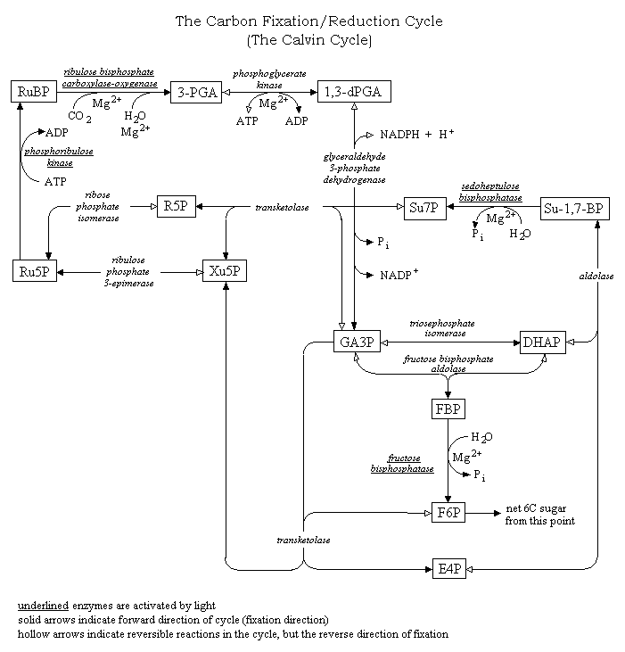
GA3P then combines 1:1 with F6P to produce one mole of xylulose-5-phosphate (Xu5P) and erythrose-4-phosphate (E4P) in a reaction catalyzed by transketolase . This enzyme makes use of the coenzyme thiamine pyrophosphate (TPP) and depends on Mg 2+ as well. The enzyme transfers the ketol (CH 2 OH–CO—) moiety from a d -ketose with a threo (3S,4R) configuration to the carbon of a aldose sugar. It is TPP which attaches to the ketol and transfers it to the aldose.
The E4P subsequently formed from the transketolase reaction then combines with DHAP in a reaction catalyzed by FBP aldolase in all likelihood. FBP aldolase does not appear to have a rigid specificity other than for DHAP (in the condensation reaction) or a keto sugar with a 3S,4R configuration (in the cleavage reaction). The product of condensation of E4P and DHAP is sedoheptulose-1,7-bisphosphate (Su-1,7-BP). The Su-1,7-BP is then dephosphorylated by a phosphatase that hydrolyzes the removal of phosphate from C1. The Su7P thus formed can then donate its ketol group via transketolase to a receiving aldosugar, namely GA3P, forming ribose-5-phosphate (R5P) from the Su7P skeleton and Xu5P created by ketol condensation to GA3P.
The five carbon compounds R5P and Xu5P can be converted to ribulose-5-phosphate (Ru5P) by an isomerase and a 3-epimerase, resp. The Ru5P is then phosphorylated by a kinase to regenerate the RuBP which is the substrate for rubisco; ATP generated from the light phase reactions is used as it was for the 3-PGA kinase.
1,3-diphosphoglycerate kinase is freely reversible and sensitive to changes in Mg 2+ and the ATP/ADP ratio, as expected.
Three different GA3P dehydrogenases can be found in leaf tissue: an NAD-specific cytoplasmic enzyme, the NADP-specific chloroplast stromal enzyme, and a NADP-linked enzyme irreversibly oxidizing GA3P to 3-PGA directly (the purpose to export reducing power from the chloroplast). Spinach chloroplast stromal isozyme exists as an oligomeric protein (MW 600 kDa) and in monomeric form (MW 100-145 kDa). The oligomeric aggregate appears to prefer NAD(H) in vitro, while the monomer has a better affinity for NADP(H). Dissociation of the oligomer can be promoted by incubation with NADP, NADPH, P i , or ATP. DTT also enhances dissociation induced by NADP(H). On the other hand NAD or GA3P presence promotes monomeric association.
It is not obvious from the cycle where exactly sugar is produced since the pathway is a cycle. However, when stoichiometry is considered, a net production of molecules becomes obvious. The table below shows how the stoichiometry of the input of 6 CO 2 molecules produces a net molecule 6C sugar.
The cycle is setup merely to generate the starting substrate while eventually producing a single 6C molecule from the fixed CO 2 molecules. Note for every CO 2 molecule fixed, 2 NADPH and 3 ATP are required. This discounts some losses which occur to photorespiration, amounting to C-C bond cleavage with loss of bond energy. 20-40% is the estimated loss. Hence the ATP and NADPH requirement is greater than calculated.
The cycle was first elucidated by Calvin (hence the name) who used 14 CO 2 to study green algae, Chlorella and Scenedesmus . The algae were grown under light and CO 2 constantly. The labeled CO 2 was administered at various times for different durations, then cells boiled in alcohol to extract the organic compounds, which could be separated on paper chromatograms. Algae exposed to 14 CO 2 for 30 S produced an abundant amount of label in 3-PGA, triose phosphates, and hexose phosphates. If exposure was limited to 5 s, the label was found only in 3-PGA.
| Reactants | Products | Enzyme | |
|---|---|---|---|
| 6 RuBP + 6 CO 2 + 6 H 2 O | == | 12 3PGA | rubisco |
| 12 3PGA + 12 ATP | == | 12 1,3-dPGA + 12 ADP | PGA kinase |
| 12 1,3-dPGA + 12 NADPH + 12 H + | == | 12 GA3P + 12 NADP + + 12 P i | GA3P dehydrogenase |
| 5 GA3P | == | 5 DHAP | TPI |
| 3 GA3P + 3 DHAP | == | 3 FBP | aldolase |
| 3 FBP + 3 H 2 O | == | 3 F6P + 3 P i | FBP phosphatase |
| 2 F6P + 2 GA3P | == | 2 E4P + 2 Xu5P | transketolase |
| 2 E4P + 2 DHAP | == | 2 SuBP | aldolase |
| 2 SuBP + 2 H 2 O | == | 2 Su7P + 2 P i | SuBP phosphatase |
| 2 Su7P + 2 GA3P | == | 2 R5P + 2 Xu5P | transketolase |
| 4 Xu5P | == | 4 Ru5P | 3-epimerase |
| 2 R5P | == | 2 Ru5P | isomerase |
| 6 Ru5P + 6 ATP | == | 6 RuBP + 6 ADP | Ru5P kinase |
| 6 CO 2 + 11 H 2 O + 18 ATP + 12 NADPH + 12 H + | == | 1 F6P + 18 ADP + 17 P i + 12 NADP + | net reaction |
The site of labeling was also analyzed. Analysis of 3-PGA indicated that the COOH was labeled. The thought was that a 2C compound was carboxylated, but attempts to find it failed. The finding that Su7P, Su-1,7-BP, and pentose phosphates were also present later led to speculation that CO 2 condensed with a pentose phosphate. Another finding was that C3 and C4 of F6P were heavily labeled too, which is logical from the operation of the pathway.
Further evidence of the cycle came from testing features of its hypothetical operation. For example, if light is not supplied to the plant, NADPH and ATP necessary for the reactions in the cycle should cause an accumulation of 3-PGA and a fall in the level of RuBP. When light is supplied, the RuBP level should rise and 3-PGA should fall in steady state conditions. Such a change in metabolite concentration was shown by Calvin in experiments where the light is turned off and on.
Another proof of the cycle is the finding that all of the enzymes catalyzing the reactions indicated have been isolated from the chloroplasts. While some doubt may arise since the amount of enzyme shown is not considered sufficient to account for the level of activity necessary, this may be attributable to the difficulty of isolating perfectly intact chloroplasts, which generally lose their outer membrane during procedures amounting to loss of some stromal enzymes.
Dark PhaseEnzymes
Although called the dark phase suggesting an independence of light, it has been shown that certain (five total) enzymes in the carbon fixation cycle are activated by light, namely rubisco, GA3P dehydrogenase, FBP and SuBP phosphatases, and Ru5P kinase. During the period of light, the pH of the stroma rises from about 7 to 8 as H + is pumped into the thylakoid lumen, while in the dark, the protons eventually leak back into the stroma. Conversely, in the light Mg 2+ is pumped from the lumen into the stroma. Four of the five enzymes (excepting GA3P dehydrogenase) indicated are all Mg 2+ -dependent enzymes which are also pH-sensitive, explaining why their activation state changes. Certain metabolites are positive allosteric effectors: ATP and NADPH are effectors activating rubisco and GA3P dehydrogenase. Other metabolites between FBP and Ru5P also appear to increase rubisco activity.
Certain compounds which are reduced from the light phase electron
transport movements are called LEMs, or
light effect mediators.
The LEMs appear to activate enzymes in the cycle. These LEMs may in fact
be proteins which have certain disulfide bonds in their structures
reduced, and which in turn use these sulfhydryls to reduce the –S–S–
linkages in the enzyme, altering it from an inactive form to an active
form. Thioredoxin is a low MW, H-carrying, cysteine-containing protein
most characterized: it is reduced by soluble Fd via a
ferredoxin-thioredoxin reductase, itself an enzyme of MW 38,000 and
without chromophore. Reduced thioredoxin activates GA3P dehydrogenase,
both FBP and SuBP phosphatases, and phosphoribulose kinase. The
chloroplast thioredoxin comes in two forms,
f
and
m
, and form
f
activates the enzymes above, while form
m
appears to activate NADP-specific malate dehydrogenase which is involved
in the C
4
pathway.
The enzyme pyruvate,P i -dikinase is another enzyme unique to the C 4 and CAM plant CO 2 fixation pathway which may be activated by LEMs. The enzyme ADP-glucose pyrophosphorylase is enzyme involved with starch synthesis, positively effected by 3-PGA and inhibited by P i .
Carbon fixation rates in whole leaves, protoplasts, or isolated type A
chloroplasts depend upon certain experimental conditions. A noticeable lag
leading to maximal fixation rates can be observed despite the immediate
start of electron transport and photophosphorylation. Preincubation with
known Calvin cycle intermediates can ensure a short to unnoticeable lag;
preincubation with P
i
(which promotes export of C
3
acids from the chloroplast) increases the lag. Other effects include
light priming,
i.e., chloroplasts or leave illuminated 30 min, then placed in dark, then
illuminated again reach maximum fixation rates almost at once. This
indicates that cycle intermediates fall to low concentrations unable to
sustain high rates of fixation.
First discovered in two tropical grasses (sugar cane and maize) but occurs in many other species of this family (Gramineae), in Cyperaceae, and in dicotyledonous families Aizoaceae, Amaranthaceae, Chenopodaceae, Compositae, Euphorbiaceae, Nyctaginaceae, Portulacaceae, and Zygophyllaceae. These plants grow under high light intensities and high daytime temperatures (30-35° C). The table below compares certain features of C 4 plants in relation to C 3 plants.
| unit | C 4 | C 3 | |
|---|---|---|---|
| photosynthetic rate | mg CO 2 fixed per dm 2 leaf surface per hour | 40-80 | 15-40 |
| growth rate | g dry weight produced per dm >2 leaf surface per day | 4-5 | 0.5-2 |
| photorespiration rate | low | high | |
| water loss | g H 2 O per g dry weight | 250-350 | 450-950 |
C 4 plants also show an unusual leaf structure, with many open air spaces, a double spiral of bundle sheath cells packed around vascular bundles, and mesophyll cells loosely arranged in spirals around the layer of bundle sheath cells. There are also many plasmodesmata between bundle sheath and mesophyll cells. Chloroplasts in both cell types have different morphologies, with advanced C 4 plants in particular (Panicoid grasses) having no grana or grana of very reduced size in the bundle sheath chloroplasts.
Kortschak and coworkers (1965) were the first to show that sugar cane leaves incubated with 14 CO 2 incorporated label first into C 4 dicarboxylic acids, namely malate and aspartate, and there was a noticeable lag before 3-PGA and other Calvin cycle intermediates incorporated label. Hatch and Slack extended the work, showing that (i) OAA, malate, and aspartate incorporated label entirely into C4 of their structures, (ii) only C1 of 3-PGA was labeled, (iii) labeling of the hexose phosphates was consistent with having been formed from 3-PGA. The mechanism has now been shown to involve the enery-dependent carboxylation of C 3 acids to produce the C 4 , which is transported from one location (cytoplasm of mesophyll cell) to another (either cytoplasm, mitochondria, or chloroplast of bundle sheath cell depending upon species) where decarboxylation occurs and CO 2 can be incorporated to 3-PGA as in the normal cycle.
The Hatch-Slack cycle does have some common points. Atmospheric CO 2 is dissolved in the mesophyll cytoplasm as HCO 3 10.0pt'>− , with carbonic anhydrase accelerating this process presumably. This is necessary for the enzyme PEP carboxylase or orthophosphate:oxaloacetate carboxy-lyase (phosphorylating) (EC 4.1.1.49) to carboxylate phosphoenolpyruvate (PEP) to form oxaloacetate (OAA). This C 4 acid is not transported from the cell, but a transamination reaction with glutamate by l -aspartate:2-oxoglutarate aminotransferase (EC 2.6.1.1) converts OAA to aspartate (Asp); the subcellular location of this enzyme is unknown. In the case of plants employing the NADP-malic enzyme, OAA is reduced in mesophyll chloroplasts to malate by the light-activated NADP-malate dehydrogenase or l - malate:NADP + oxidoreductase (EC 1.1.1.82) present in these organelles, the NADPH used coming from the light phase reactions. The malate is then moved from the chloroplast and from the mesophyll cell to the bundle sheath cell chloroplast, with transport probably through plasmodesmata. In the cases of the other C 4 plants, Asp is moved (in a Asp-Ala exchange).
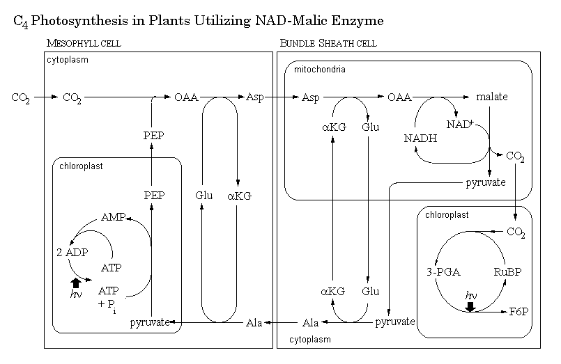
If malate was moved to the bundle sheath cells, it is oxidatively decarboxylated by the NADP-malic enzyme or l -malate:NADP + oxidoreductase (oxaloacetate decarboxylating) (EC 1.1.1.40), in which NADP oxidizes malate and in so doing, removes a CO 2 in which the carbon is the same as the CO 2 which first carboxylated PEP. The CO 2 should then diffuse through the stroma and be used by rubisco, with carbohydrate synthesis proceeding as normally. The net NADPH produced by the NADP-malic enzyme is utilized in reducing 3-PGA to GA3P, sparing bundle sheath chloroplasts from the need to produce at least half of the reduced cofactor necessary and putting some of the onus on mesophyll chloroplasts to produce these reducing equivalents. The pyruvate generated from oxidative decarboxylation of malate is shuttle back to the mesophyll chloroplasts. Here pyruvate is phosphorylated by a light-activated enzyme called pyruvate,P i dikinase or ATP:pyruvate,orthophosphate phosphotransferase (EC 2.7.9.1), an unusual enzyme which involves two steps and requires two phosphoanhydride bond energies to activate pyruvate to PEP. A third reaction involves the hydrolysis of pyrophosphate formed in the first step to drive the reaction to completion.
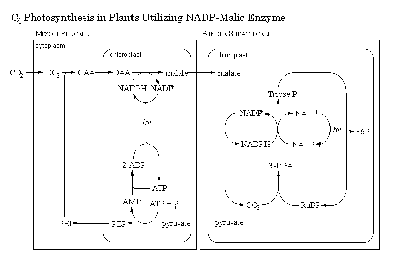
Note that the reactions are all shown to be reversible although reactions 1 and 3 are very much to the right. Reaction 4 is shown to illustrate that photophosphorylation reactions will necessarily have to put two phosphate bond energies back on to AMP to produce ATP, a reaction actually involving phosphorylation by ATP first. Hence, two ATP molecules are used to convert pyruvate to PEP. PEP made in the mesophyll chloroplast diffuses to the cytoplasm where it begins the C 4 cycle as it started.
In C 4 plants using the NAD-malic enzyme or l -malate:NAD + oxidoreductase (oxaloacetate decarboxylating) (EC 1.1.1.39), Asp is deaminated in bundle sheath cell mitochondria using the mitochondrial glutamate:oxaloacetate aminotransferase. The OAA produced is reduced to malate using the normal Krebs cycle malate dehydrogenase (NAD-dependent) or l - malate:NAD + oxidoreductase (EC 1.1.1.37), and this malate is now oxidatively decarboxylated by the mitochondrial NAD-malic enzyme. The NAD produced from the reduction of OAA to malate is used in the oxidation by this enzyme, so NAD and NADH cycle back and forth without net accumulation. The CO 2 passes from the mitochondria to the chloroplast were it is handled by rubisco as usual. The pyruvate passes from the mitochondria to the cytoplasm where a l - alanine:2-oxoglutarate aminotransferase (EC 2.6.1.2) transaminates the pyruvate to form alanine. The αKG cycles back and forth with its amino acid analog, glutamate, aminating pyruvate and deaminating aspartate to keep the C 4 cycle balanced. This is assuming that αKG and glutamate can directly pass across the mitochondrial membrane (although it is possible another shuttle may be at work). Alanine entering the mesophyll cell would be transaminated again to produce pyruvate which is changed to PEP using the same dikinase above.
A third group of C 4 plants generates CO 2 not by a chloroplastic NADP-malic enzyme or by a mitochondrial NAD-malic enzyme, but instead by an enzyme called PEP carboxykinase or ATP:oxaloacetate carboxy-lyase (transphosphorylating) (EC 4.1.1.49). Its subcellular location is not yet known. Decarboxylation of OAA is achieved by ATP-dependent phosphorylation of OAA to produce PEP. The CO 2 should diffuse to its location in the chloroplast. It is not known although assumed that PEP is converted into pyruvate (probably using a cytoplasmic enolase as in the glycolytic pathway), and in effect regaining the ATP that was used in the PEP carboxykinase reaction. Pyruvate would be converted to alanine for transport back to the mesophyll.

It should be noted that the mesophyll chloroplasts, while they have electron transport chains to produce the necessary NADPH and ATP which move CO 2 to the location where it will be utilized, do not have active carbon reduction cycles since the CO 2 is essentially fixed at another location. Rubisco and other enzymes are not expressed in the mesophyll chloroplasts. The two enzymes which convert 3-PGA to GA3P are present however. NADP-specific malate dehydrogenase used to produce the malate transported to bundle sheath cells is very low in C 4 plants using the NAD-malic enzyme to recover CO 2 , or altogether absent is C 4 plants using PEP carboxykinase for this activity. Any NADPH generated by mesophyll chloroplasts not using the NADP-malic enzyme is likely involved with 3-PGA reduction. Mesophyll cells likely obtain their 3-PGA from the bundle sheath cells, and use it in starch biosynthesis or return it to bundle sheath cells as triose phosphates.
The only difference between C 4 and C 3 plants is that C 4 plants have special mechanism to move CO 2 from one tissue to another. The Calvin cycle is still employed in producing hexose phosphates. Three ATP and two NADPH are still employed to fix one CO 2 molecule.
However, the transport of CO 2 involved in C 4 metabolism is energy-dependent. Two molecules ATP are used to activate pyruvate to PEP in mesophyll chloroplasts by pyruvate,P i dikinase. Although shown as no net ATP loss, the PEP carboxykinase reaction may involve phosphate bond energy. NADPH is used, but there is no difference between net use in C 3 or C 4 plants. Hence C 4 plants use two more ATP than do C 3 plants.
In reality, C 4 plants may in fact use less energy than C 3 plants since there has no accounting given for loss of energy involved with photorespiration. The photorespiration rate (see table above) is lower in C 4 plants than C 3 and as a consequence, C 4 plants use less energy to fix one CO 2 than do C 3 plants.
The initial hypothesis for C 4 metabolism was the belief, since dismissed according to results of studies given above, that rubisco needed a high CO 2 concentration because of its apparent high K m for CO 2 . This could be forthcoming by a energy-driven process to concentrate CO 2 .
The current hypothesis is based upon a finding that C 4 plants show a high stomatal resistance to gaseous diffusion. The CO 2 in the mesophyll cells of C 3 plants is sufficiently concentrated for rubisco to utilize CO 2 in the fixation cycle, but in C 4 plants, it is far too low. It is sufficient enough for PEP carboxylase, which has a K m for HCO 3 − in the physiological range at which HCO 3 − is present.
But why the higher stomatal resistance to gaseous diffusion? The C 4 plant structure may impose a barrier to CO 2 acquisition, but it has the advantage of minimizing water loss through transpiration, a problem likely to be significant in very warm climates where the water vapor pressure is increased.
Another hypothesis to be considered is that C 4 plants also minimize energy losses associated with the photorespiratory pathway. O 2 gas has just as much difficulty as CO 2 diffusing into the bundle sheath chloroplasts where it would compete with CO 2 for rubisco, but its product would be wasteful (excepting where heat generation is physiologically important). C 4 metabolism is a process evolved to minimize O 2 access to rubisco and maximize CO 2 fixation.
Plants employing this special metabolic pathway include many succulents, i.e., desert plants. They include the dicotyledonous Crassulaceae in which the metabolism was found (e.g., Kalanchoe spp., Sedum spp.), and the monocotyledonous Agavaceae, Bromeliaceae, Liliaceae, and Orchidaceae. Other dicotyledonous families are Cactaceae, Caryophyllaceaea, Chenopodiaceae, Compositae, Convolvulaceae, Euphorbiaceae, Plantaginaceae, Portulacaceae, and Vitaceae.
It is not found in the plants considered primitive, suggesting it developed late in evolution. Indeed isotope studies of plant fossils show the oldest plants use the C 3 pathway.
CAM plants differ from others in that they open their stomata only at night (the C 3 and C 4 plants, on the other hand, open only during the day). Also CO 2 is fixed only during the night, in which massive amounts of malate are synthesized during this period in photosynthetic tissues. The malate is stored in vacuoles as it accumulates. During the day, the accumulated malate is then decarboxylated and the CO 2 fixed in normal, light-driven sucrose and storage glucan (starch) synthesis. Some of the glucan in the cell is saved for the coming night to act as an acceptor for CO 2 in the malate synthesis. The scheme is shown below or on the next page.
Once the CO 2 enters the stomata at night, PEP carboxylase incorporates HCO 3 − (K m for CO 2 is 20 μM; K m for PEP is 190 μM) to produce OAA as in C 4 metabolism. The subcellular location of PEP carboxylase is not known although the illustration indicates a cytoplasmic location; some studies indicate it is within the chloroplast. The enzyme is inhibited (allosterically) by malate (K i = 1 mM). Malate dehydrogenase (mitochondrial?) then reduces OAA to malate, which is actively transported into a vacuole. This single pathway continues throughout the night as accumulated PEP is recruited for its purpose of collecting CO 2 . The PEP source is continuously replenished by glycolytic breakdown of glucan polymers which proceed down the glycolytic pathway. It should be noted that no ATP/ADP or NAD + /NADH accumulates in the process since the night time pathway uses ATP at one step and generates it at another, and the same is true for NAD + . The only molecule used in large amounts in P i .
At dawn, the accumulated malic acid passes back into the cytoplasm where it is decarboxylated to provide CO 2 to drive hexose phosphate synthesis. The decarboxylation can occur in two different mechanisms depending upon the family of CAM plants. The Crassulaceae, Cactaceae, and Agavaceae utilize NADP-malic enzyme, while the Liliaceae, Bromeliaceae, and Asclepiadaceae have no NADP-malic enzyme but instead a very active PEP carboxykinase. In the case of PEP carboxykinase, the malate is oxidized to OAA, although it is not known if this is done by cytosolic NAD-malate dehydrogenase or chloroplast (light-activated) NADP-malate dehydrogenase. CAM plants using NADP-malic enzyme to recover CO 2 must also convert the pyruvate product to PEP, which they must do using pyruvate,P i dikinase. This enzyme is unnecessary in CAM plants using PEP carboxykinase since PEP is the direct product.
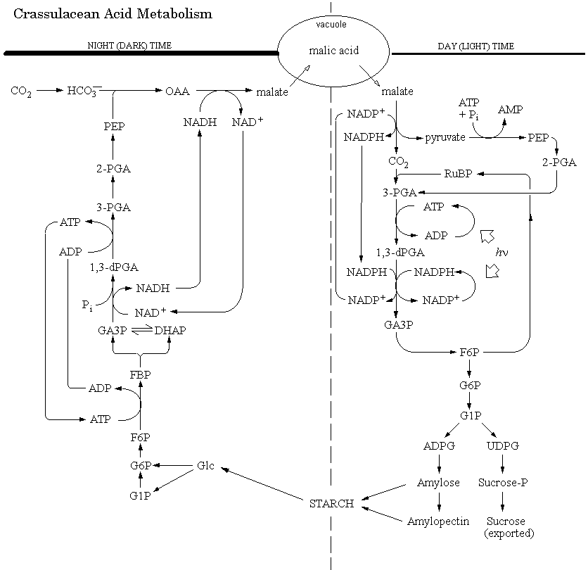
The rubisco in CAM plants (K m for CO 2 is 18 μM; for O 2 , 490 μM) is not different than for C 3 and C 4 plants. F6P is made in the chloroplast and incorporated into organellar starch to be used as a source for night time PEP in the carbon fixation reactions. Net carbon is also moved from the chloroplast as DHAP, to be converted to sucrose in the cytosol. The sucrose is exported to the other (nonphotosynthetic) plant tissues to be used by them for nourishment.
Two types of regulation have been found, one which is short term and the other long term .
Short term
regulation was developed from a hypothesis by Kluge (1975) in which malate
is transported into the vacuole by an active transport mechanism which
also prevents high concentrations from inhibiting PEP carboxylase. Osmosis
also demands that water follow the solute into the vacuole as well.
However, there is a critical turgor pressure point which is eventually
reached in the tonoplast, at which point, a net efflux of malate moves out
and inhibits PEP carboxylase. Apparently the tonoplast has properties that
permit malate to enter until a point is reached when malate is forced out.
Such a
switch
has been shown particularly for K
+
in
Valonia
. If such a hypothesis were true, then diurnal changes in light or
temperature would not be necessary and CAM would proceed under constant
light and temperature. This is in fact true.
Long term
regulation is chiefly a factor involving the availability of water.
Thermo- or photoperiod durations have little effect in water is limited or
nonexistent. Cacti represent a good example. Having a low surface
area-to-volume ratio and coated with a waxy cuticle which prevents gas
exchange (and therefore water loss), these plants may or may not open
their stomata at night depending upon the availability of water. Where
rainfall has occurred, the stomata are opened and CO
2
is gathered. But in long periods of drought, the stomata remain tightly
closed while the cactus does not grow, but prepares to survive, often for
months. Light energy absorbed during the day is dissipated by
nonproductive carboxylation and decarboxylation in the CAM pathway, in
photorespiration, and in the normal dark reactions. CO
2
is cycled back and forth between C
3
synthesis, starch, to PEP, then to malate, and back to C
3
synthesis. No net carbon is fixed, which must come from the outside. The
CAM plant is said to be
idling.
On the other hand, when the water is plentiful, the CAM plant appears to
have a less active CAM mode of CO
2
fixation and appears to follow C
3
photosythesis, but it readily switches back to CAM if stressed (besides
dehydration, such stress includes temperature fluctuation, short
photoperiods, or salinity changes).
The abundance of carbon isotopes is 13 C = 1.108% and 12 C = 98.892%. Hence it is expected that CO 2 will have distribution of 13 CO 2 and 12 CO 2 that reflects the natural abundance, and so should the carbon in organic compounds in plants. However, an isotope effect has been found with Rubisco, in which reactions with 13 CO 2 are apparently kinetically slow compared to 12 CO 2 . PEP carboxylase used by C 4 and CAM to help with carbon fixation shows no such isotope effect.
There is a parameter which reflects the differences in the 13 C/ 12 C ratios between a standard natural ratio and that in organic compounds (plants). This parameter is δ 13 C‰:
| δ 13 C(‰) = | [ | 13 C/ 12 C in the fixed C of the plant | − 1 | ] | × 10 3 |
| 13 C/ 12 C in a standard) |
The standard usually used is limestone (CaCO 3 ). A Δ 13 C(‰) = zero means that the ratio in plants is not different from the inorganic source. A Δ 13 C(‰) < zero will mean that 12 C is selectively utilized compared to 13 C. A Δ 13 C of −3‰ has been shown for PEP carboxylase (pH 8.5, 25°). In contrast, for Rubisco, the Δ 13 C is −33.7‰ (pH 8.2, 24°). At higher temperatures (37°), the Δ 13 C for Rubisco is −18.3‰, a significant increase in 13 C utilization.
Δ 13 C values in C 3 plants range from −23 to −34‰ while δ 13 C values in C 4 plants are from −10 to −18‰. The fact that C 4 uses the less discriminatory PEP carboxylase to move CO 2 into the plant and that C 4 plants operate typically in warmer climates probably accounts for the differences between these plants and C 3 plants. For CAM plants, Δ 13 C values are between −14 and −33‰. Since some CAM plants can facultatively operate in a C 3 mode of fixation and at other times use a C 4 -type CO 2 fixation step (PEP carboxylase), the range is not surprising.
Determinations of the Δ 13 C(‰) values for fossil plants from seven geological periods (from Pliocene to Permian) indicate they were much like C 3 plants today (very negative Δ 13 C(‰)). Combined with the finding that CAM seems to operate only in the more advanced plants, it would appear that C 3 was the first adaptation to photosynthetic carbon fixation.
Starch is a glucose polymer with a linear chain of monomers connected α1→4. The first reaction involved in starch synthesis is preparation of the glucose monomer in much the same way glucose is prepared in animal cells for glycogen synthesis, except the activating trinucleotide is ATP instead of UTP. The next step is the synthesis of starch with the ADP-glucose product.
| ATP + glucose-1-phosphate |
ADP-glucose pyrophosophylase
————————→ |
ADP-glucose + PP i |
| ADP-glucose + (glucopyranose α1→4 glucopyranose) n |
starch synthetase
————————→ |
ADP + (glucopyranose α1→4glucopyranose) n +½ |
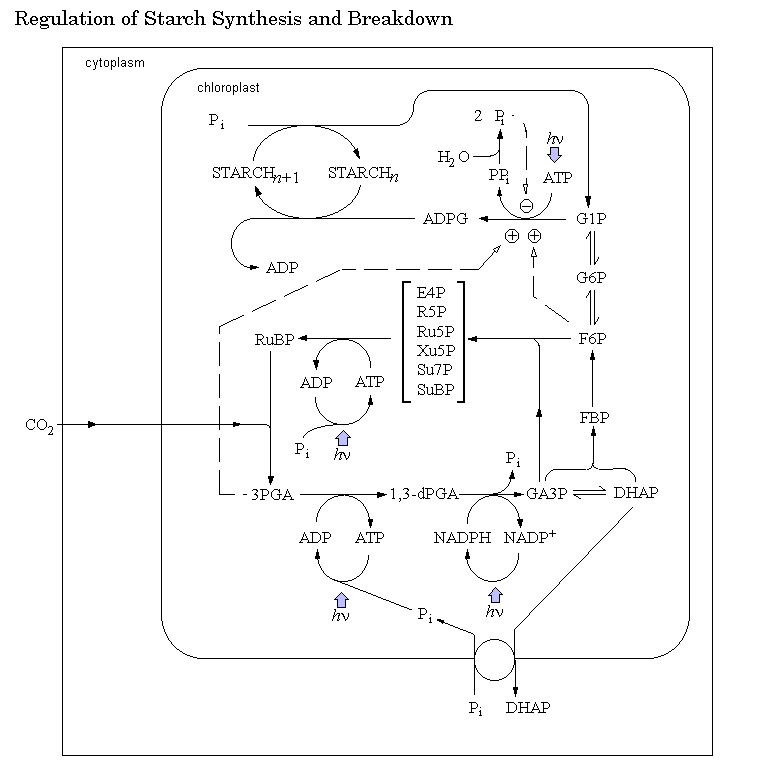
The G1P substrate in the pyrophosphorylase reaction is obtained from the
six-carbon sugar produced by the Calvin cycle, which would be
fructose-6-phosphate. The chloroplast contains the phosphoglucose
isomerase and phosphoglucomutase enzymes necessary to convert F6P to G6P
to G1P in that order. Almost all of the ADPG pyrophosphorylase and starch
synthetase are found in chloroplasts of leaf tissue. In addition a
branching enzyme
catalyzing formation of α1→6 linkages to form the amylopectin component of
starch is present. A Mg
2+
-dependent pyrophosphatase catalyzing PP
i
+ H
2
O → 2 P
i
is also present to drive the reaction toward ADPG formation.
ADPG concentrations in the stroma are very low even when starch synthesis conditions prevail. Combine this with the finding that the K m of starch synthetase for ADPG is high, and it seems the case that [ADPG] regulates starch synthesis.
Inorganic phosphate is a strong inhibitor of ADPG pyrophorylase, with P i concentrations usually high enough to completely inhibit the enzyme. However, with accumulations of 3-PGA, the increase in ADPG concentrations is sufficient to overcome the inhibition.
The pyrosphorylase is inhibited by increasing ADP concentrations (1-2 mM producing 50% inhibition).
The primary regulatory effect seems to depend on [P i ] generally. With illumination, the phosphate levels fall as photophosphorylation consumes what is present, and ADPG pyrophosphorylase is not inhibited. Additionally, C3 molecules brought into the chloroplast for carbon fixation purposes enter the chloroplast via an C3 compound/phosphate antiporter or exchanger. Hence phosphate is moved out of the chloroplast, providing additional decreases in [P i ]. Couple this with the rise in stromal 3-PGA as the C3 sugars enter, and ADPG pyrophosphorylase is very active. This is shown very much with phosphate-deficient whole leaves, where abnormal accumulations of starch are evident. Also, mannose-fed leaves show the same effect of abnormal starch synthesis: mannose is converted to mannose-6-phosphate in the cytoplasm, which cannot be metabolized further (and so it acts as a drain on phosphate).
In the light even though the breakdown of starch is possible, there is a net accumulation of starch as the synthetic pathway becomes active. In the dark, synthesis effectively stops as the high-energy metabolites produced by the light reactions are consumed. Starch breakdown is the main activity in the dark.
Starch can be broken down by two pathways classically. In one pathway,
amylases and maltase work together to produce glucose monomers which would
have to be phosphorylated to G6P for utilization in the glycolytic
pathways or in other synthetic reactions involving glucose. In another, a
phosphorolysis of starch proceeds by the action of a phosphorylase just as
it occurs in glycogen breakdown in animal cells. A
debranching enzyme
hydrolyzing a α1→l6 bonds would have to be used in either breakdown
pathway.
Studies in pea chloroplasts show no α- or β-amylase nor maltase activities. The presence of phosphate is required, suggesting only a phosphorolyzing activity. The K m for P i of the starch phosphorylase is in the millimolar range, indicating that P i should be very high before starch is broken down. The intricate regulation of glycogen phosphorylase in animals does not seem to be evident in the plant phosphorylases.
Spinach chloroplasts show some differences with peas. Both amylase and phosphorylase activities are apparent, which having the greater significance probably depending upon growth conditions. It should be noted that breakdown by amylases is not energy-conserving, which is not a problem in plants with active photophosphorylation. A de-branching enzyme is present in these chloroplasts.
Formation of G6P is seen to develop in an accumulation of 3-PGA. This 3-PGA formation can result from partial glycolysis or by oxidative pentose phosphate pathway (the enzymes for these processes are present in the stroma). Use of these pathways would cause a net accumulation of ATP and NADPH, perhaps necessary to maintain chloroplast vitality in the dark. The lack of enolase, phosphoglyceromutase, and pyruvate kinase do not allow further glycolytic activities.
| Taken verbatim from B. Halliwell, Chloroplast Metabolism , Rev. Ed. (1984) | |||
| Substances not crossing the membrane at significant rates | |||
|---|---|---|---|
| NAD | NADP | PEP | SuBP |
| NADH | NADPH | PP i | Su7P |
| sorbitol | acetyl-CoA | FBP | RuBP |
| glycine | alanine | serine | sucrose |
|
small cations
(Na + , Mg 2+ , H + )* |
|||
| Substances able to penetrate by diffusion of its unionized form | |||
| CO 2 | formate | methanol | glycollate† |
| acetate | glycerol | ethanol | |
| glyoxylate | pyruvate | ||
| Substances transported by specific carriers(/exchangers) with low maximal transport rates | |||
| carrier system | substances transported | comments | |
| adenine nucleotide translocator | ATP, ADP, AMP | Most ATP exported from chloroplasts indirectly. Rate of translocation is <5 µmol h −1 mg chlorophyll −1 in mature spinach leaf chloroplasts | |
| sugar carrier | d -glucose, d -mannose, d -xylose, d -ribose, l -arabinose, maltose | Inhibited by phloretin. Rates <7 µmol h −1 mg chlorophyll −1 . Physiological significance unclear. | |
| amino acid carrier | l -leucine, l -isoleucine | Found in pea chloroplasts only. Rates ~4 µmol h −1 mg chlorophyll −1 . Similar rates in spinach chloroplasts, but attributed to simple diffusion. Glycine not transported | |
| purine and pyrimidine carriers | adenine, cytosine | Reported only in pea chloroplasts; very low rates. Physiol. significance unknown | |
| Substances transported by specific carriers(/exchangers) with high maximal transport rates | |||
| carrier system | substances transported | comments | |
| C 3 translocator |
3-PGA
P i DHAP |
Exchange system. Allows import of phosphate into chloroplast and export of C 3 cmpds for sucrose synthesis in cytoplasm, and possibly for generation of ATP, NADH, and NADPH. | |
| dicarboxylate translocator | malate, oxaloacetate, aspartate, glutamate, succinate | Exchange system, but small amount of unidirectional flow possible. Required for OAA import for Asp synthesis and for Glu export by Glu synthetase. May have role in exporting reducing power to cytoplasm | |
| Substances transported at significant rates for which a carrier is not yet identified | |||
| R5P | Ru5P | Xu5P | |
|
* may be small, light-dependent H
+
flux
† presence of glycolate/glyoxylate translocator in pea chloroplasts suggested as well as the simple diffusion of the protonated acids |
|||
Increases in the ATP/ADP ratio of the chloroplast in the light are mirrored by increases in the ATP/ADP ratio in the cytoplasm, indicating a mechanism to move ATP or its equivalent to the cytoplasm. The chloroplast envelope shows only selective permeability to metabolites however (see table), and ATP is not among those metabolites transported across the membrane.
In interpreting the table, it should be considered that these are the properties of mature chloroplasts, and the permeability properties of younger plant chloroplasts may differ. The first experiments to show the specificity of the envelope for metabolite translocation began with 14 CO 2 subcellular fractionation at various periods showed that among the first cytoplasmic metabolites labeled were sucrose, 3-PGA, F6P, G6P, FBP, and UDPG. Labeled RuBP and SuBP remained confined to the chloroplast, indicating they do not cross the membrane. The appearance of a compound in the cytoplasm does not mean it is capable of crossing the membrane however: FBP could have been synthesized from 3-PGA in the cytoplasm using all gluconeogenetic catalytic steps rather than crossing the chloroplast itself.
Studies with isolated chloroplasts eliminate any conversions outside the chloroplast to avoid the above confusion; only metabolites (no enzymes are present in the medium). When given labeled CO 2 , RuBP and SuBP again are not found released into the medium, but among the first isolated is 3-PGA.
If a substance is truly impermeable to the chloroplast, then adding it to isolated intact chloroplasts should not result in its conversion by any chloroplast enzyme, nor affect photosynthetic activity of the chloroplast. Results show that NADP addition to illuminated chloroplasts does not reduce the NADP, and photophosphorylation of added ADP is too slow to be physiologically significant. Addition of 3-PGA to the chloroplasts appears to decrease the lag period for carbon fixation rates, while SuBP addition has no effect. From the above data, it may be concluded that SuBP, NADP(H) and NAD(H) are not permeable, ADP is only slightly permeable, and 3-PGA has a physiological role in crossing the membrane.
Interpretation of the results is necessary. Isolated intact chloroplasts are not always free of cytoplasmic enzyme contamination, and addition of a substance not permeable to the chloroplast membrane may be converted to one that is and which affects photosynthesis. A good example is FBP (not permeable) being converted by a contaminating aldolase to DHAP and GA3P (both permeable). Moreover, stromal enzymes from the Calvin cycle may be present in the medium and cause conversions which would otherwise be unseen under perfect conditions.
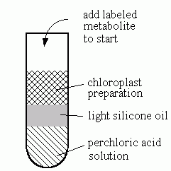
It is usual to measure the rates of uptake of metabolites to assist in the interpretation as to whether they cross the envelope. The silicone oil method is the standard procedure, with perchloric acid solution added first, a light silicone oil then layered over it, followed by an overlay of the intact chloroplast suspension. The labeled metabolite whose permeability is in question added for the necessary incubation time, after which the tube is rapidly centrifuged. As the chloroplasts descend through the silicone layer, which removes the medium surrounding them preventing further action. Once in the acid, immediate denaturation stops any further conversion. Radiolabeled products are identified and or presence of radioactivity detected.
Results of these experiments show that part of the chloroplast volume was
accessible to low MW substances (e.g., sucrose, sugar phosphates) but not
to proteins or dextran. The size of the
sucrose permeable
space was determined to vary with medium osmolarity and correlated with
the intermembrane space of the chloroplast as calculated from electron
micrographs. In a hypotonic medium the intermembrane space is small, but
as tonicity increases, the intermembrane space expands. Therefore the
sucrose-permeable space is equivalent to the intermembrane space,
indicating the outer envelope is freely permeable to small molecules while
the inner membrane is more discriminating (analogous with the plant and
animal mitochondria).
Other studies using resealed chloroplast envelopes show similar results insofar as permeability of low MW vs. the high MW.
The chloroplast has been shown to be an excellent osmometer, shrinking or swelling with the medium tonicity. In part it can be used to determine whether a metabolite can penetrate the inner membrane. If a metabolite can enter, then the osmotic response would be smaller relative to sucrose, which can not penetrate. Such determinations of permeability can not be quantitative, however, since the degree of swelling does not vary directly with the penetration rate of the metabolites. Solutes which penetrate by an exchange system would also produce not net changes in osmotic flux.
The chloroplast inner envelope allows certain monocarboxylic acids (acetic acid, formic acid, glyceric acid, etc) to cross based on simple diffusion; in the protonated form, these un-ionized molecules are sufficiently nonpolar not to require specific transporters. The factors affecting transport will include chemical potentials of the carboxylic acid and of protons (any pH gradient).
HCO 3 − has been found to cross membranes of isolated chloroplasts and envelope vesicles at a rate much greater than the rate of carbon fixation in chloroplasts in vitro . Evidence suggest that dissolved CO 2 , which crosses biological membranes easily, is the actual molecule crossing. The HCO 3 − is therefore in equilibrium with dissolved CO 2 and mass action makes it appears as if HCO 3 − freely permeable to the membrane when it is not. Indeed, chloroplasts placed in low H 14 CO 3 − concentrations and illuminated show a greater isotope uptake if carbonic anhydrase is added to the mediuim. Carbonic anhydrase is normally present in both the chloroplast and cytoplasm. If it is assumed that CO 2 diffusion is not rate-limiting in the carbon fixation scheme, then CO 2 concentrations should be equal on both sides of the envelope. The HCO 3 − distribution on both sides can be shown to relate to the pH as follows if CO 2 rapidly equilibrates (it does):
| log | [HCO 3 − ] stroma | = pH stroma − pH medium |
| [HCO 3 − ] medium |
If the pH of the stroma increases with illumination of the chloroplast, more HCO 3 − must be present in the stroma. This does not imply that CO 2 increases, however, since the equilibrium between HCO 3 − and CO 2 involves formation of H + , and a reduction of this disfavors CO 2 formation.
The silicone oil method has also shown that 3-PGA, DHAP, and P i cross the envelope rapidly, while G6P, F6P, RuBP, SuBP, and FBP are hardly taken up. The uptake of the permeable materials is not by diffusion as their crossing is saturable. The C 3 compounds generally translocate with a V max > 100 µmol h -1 mg chlorophyll -1 . 3-PGA, DHAP, and P i show competitive inhibition, indicating they move by the same transporter (the K i values are identical with the K m of the metabolite). The transporter has been shown to be an exchanger, which is logical since P i would be transported in for photophosphorylation and the sugar phosphates will produce sucrose. The transporter contains necessary thiol groups, failing to work if thiol-binding compounds alter the protein.
Although an ATP exchange porter has been found in chloroplast envelope, its V max is rather low to be of significance. Indeed, it functions best when ATP from the cytoplasm is to enter the chloroplast rather than the reverse. Also in the inner envelope are an ATPase and adenylate kinase activities, their physiological roles unknown.
There is a hypothesis that both reducing power and substrate phosphorylating energy are transported by the 3-PGA/DHAP shuttle. 3-PGA formed in the chloroplast immediately after carbon fixation is phosphorylated and reduced, respectively to form GA3P. This isomerizes to DHAP. The DHAP then crosses chloroplast envelope in exchange for 3-PGA (note charge and mass are balanced). Now in the cytosol DHAP is isomerized, oxidized (by NAD-dependent GA3P dehydrogenase), and transfers a phosphate to ADP to form 3-PGA. This is exchanged and the cycle continues. A net transfer of 2 electrons, 2 protons, and high energy in a phosphate bond occurs.
Cellular respiration is defined as the oxidative process in which high potential bond energy in certain molecules (carbohydrates, fats) is coupled to the formation of bond energy in a molecule the cell relies upon for maintaing homeostatic (steady-state) metabolic processes, this molecule being ATP.
An overview shows that certain metabolic pathways, namely glycolysis, TCA cycle, fatty acid β-oxidation, high energy in the form of reducing agents, namely NADH and succinate, coupled to the oxidation of these substrates. The high energy reducing agents then reduce molecular oxygen in an electron transport process which preserves this energy.
The free energy released from this process is dependent upon the potential difference in these electron movements and to the number of electrons passing through the chain. Calculations show that the energy from this process is preserved 40% (i.e., 40% efficiency) in the energy of forming ATP.
ATP is formed from many sources: from photosynthesis, driven by light; and from respiration, driven by oxidation of reduced organic molecules.
CoupledMitochondria
Proof of the inner membrane as the site of oxidative phosphorylation
required exact processes in which pure inner membrane had to be isolated,
intact and uncontaminated. Such mitochondria are called
coupled,
in which ADP is not phosphorylated unless electron transport is occurring,
and when electron transport occurs, ADP is being phosphorylated. Poorly
handled or isolated mitochondria can and do oxidize NADH and succinate
under aerobic conditions without phosphorylating ADP.
Study of mitochondrial function in plants is made difficult by the fact that the forces necessary to break cell wall during extraction also disrupt mitochondria. Also as vacuoles break and release acidic contents, the pH is difficult to control. Polyphenols released during extraction also are inhibitory to mitochondrial reactions. Other enzymes, such as polyphenol oxidase and the nonspecific acylhydrolase make products that are inhibitory in nature.
Still picking the right plant tissue and proper extraction buffer, using mild cell breaking techniques, then purifying mitochondria using ood centrifugation techniques can produce coupled mitochondria. Intact mitochondria should show no ability to reduce cytochrome c when added with succinate.
Components of the chain are redox compounds as they are alternately reduced then oxidized as part of transport chain. The flow is from the most negative reduction potential to the most positive. All components are proteins with prosthetic groups with the single exception of ubiquinone (UQ), which is a lipid with a benzoquinonoid nucleus bound to a hydrophobic isoprenoid side chain. Three classes of proteins are present: flavoproteins, or proteins with either the flavin mononucleotide (FMN) or flavin adenine dinucleotide (FAD), the heme-containing cytochromes, and the iron-sulfur proteins in which iron is not coordinated by heme but by elemental sulfur and the thiols of cysteine residues.
Components in the respiratory chain can be classified as
electron carriers
or
proton (hydrogen ion) carriers.
While all the components
carry
electrons in the course of redox reactions, some components only need
carry electrons. Others, in the course of their reduction, bond to protons
from the medium as a consequence of forming a stable chemical state,
making them both electron and proton carriers. Components in the chain
which are both electron and proton carriers include UQ and the
flavoproteins; components in the chain which are only electron carriers
are the cytochromes and Fe-S proteins.
Another consideration in the redox chain is whether a component is a one- or two-electron transfer components. UQ and flavoproteins must acquire two electrons to go from a stably oxidized to stably reduced state. The cytochromes and, it is believed, Fe-S proteins are stably reduced with only one electron (Fe is the important atom here, capable of alternating from a Fe 3+ to Fe 2+ as part of its chemistry).
The molecules
feeding
the chain are the reduced compounds, NADH and succinate. Their oxidation
to their stable oxidized, NAD
+
and fumarate, necessarily requires removal of two electrons; hence two
electrons enter the chain. For the two-electron carrying components, only
one molecule is needed to move the electrons along the chain. For the
one-electron carriers, however, they must rapidly carry electrons from one
component to the next, or perhaps operate in pairs.
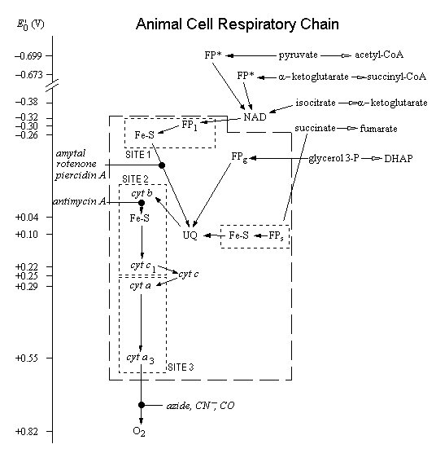
Certain components in the chain are integral with the inner membrane, i.e., they are fully embedded and may have no parts of them emerging beyond the polar heads of the membrane. Others are clearly peripheral components, loosely bound and easily removed by salt solutions of high concentration.
The reactions of the animal and plant mitochondrial respiratory chain are compared. More is known about the animal chain. The figures below show various FP abbreviations. These are all flavoproteins usually associated as prosthetic groups with their specific dehydrogenases.
In the animal chain, NADH dehyrogenase is an inner membrane complex of a flavoprotein (FP 1 ) and a cluster of Fe-S protein subunits, which remove a hydride (H − ), i.e. two electrons and a proton from NADH and pass the electrons to UQ. The NADH molecule diffuses in from the matrix where it has been produced in a number of reactions in the TCA cycle (pyruvate dehydrogenase, 2-oxoglutarate dehydrogenase, isocitrate dehydrogenase, and malate dehydrogenase). Certain other components of the inner membrane are directly involved with oxidation of diffusible organic compounds (succinate, glycerol-3-P); while most TCA cycle enzymes are soluble in the matrix (or part of a complex), the succinate dehydrogenase is embedded in the inner membrane.
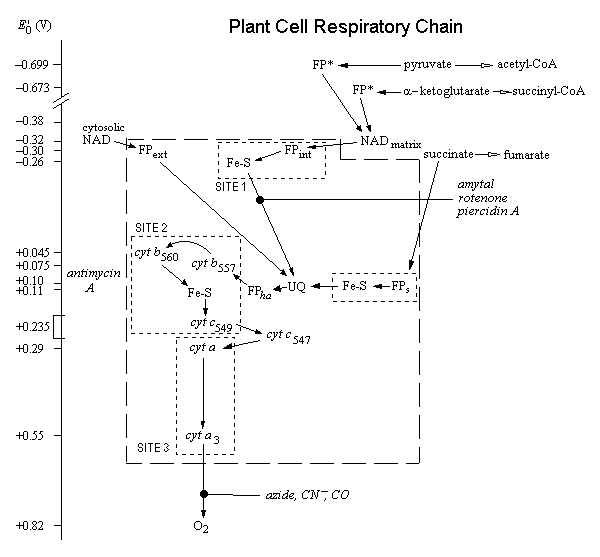
The glycerol-3-P (Gol-3P) dehydrogenase is actually an enzyme which is part of a shuttle designed to obtain reducing equivalent generated in the cytosol. NADH is produced in the cytosol by various processes. Its electrons cannot be obtained directly by a mitochondrial NADH dehydrogenase on the cytosolic side of the inner membrane since none exists. NADH also has no ability to cross the mitochondrial inner membrane to get to the matrix, so a more indirect way is employed to obtain this energy. A cytosolic NADH-dependent Gol-3P dehydrogenase is used to reduce DHAP to Gol-3P. Both DHAP and Gol-3P can cross the mitochondrial outer membrane. The NADH reducing equivalents, now in Gol-3P, move into the intermembrane space and are met by an inner membrane flavoprotein (FP g ) Gol-3P dehydrogenase on the cytoplasmic surface of the inner membrane. The oxidation produces DHAP, which can return to the cytoplasm to be reduced by more NADH. The flavoprotein then reduces UQ. It will be seen that plants do not require such a shuttle.
There is another shuttle for NADH which involves a complex movement (shuttle) of malate and aspartate, and a-ketoglutarate and glutamate, in a balance between reducing equivalents and the transport of nitrogen across both mitochondrial membranes into the matrix.
UQ is then oxidized by a complex of cytochromes (cytochrome b and c 1 )and Fe-S proteins called the ubiquinol-cytochrome c reductase . This moves the two electrons put into UQ at the entry points in the chain to two molecules of cytochrome c . The protons released from UQ pass into the cytosolic side of the inner membrane. The reduced cytochrome c (ferrocytochrome c ) is then reoxidized by O 2 via the cytochrome-containing complex called cytochrome oxidase or cytochrome aa 3 . The reduction of O 2 is accompanied by proton movements from the matrix. The cytochrome oxidase is composed of two cytochromes: cytochrome a , located on the outer surface of the inner membrane, and cytochrome a 3 , on the inner half of the inner membrane and the site where O 2 is reduced.
Inhibitors of the movement of electrons are known. The NADH dehydrogenase is shown to be blocked by the barbituate amytal, which blocks at high concentrations. Rotenone also blocks this enzyme, producing 65% inhibition of the protein with only 33 nmol/g protein; it is a poison from a tropical plant used by South American peoples to catch fish, and is also used as an insecticide (it is not very poisonous to mammals since they seem to absorb it poorly). Piercidin A is an antibiotic from a Streptomyces sp. which resembles UQ and therefore competes for reduction with UQ in the chain. Antimycin A is also an antibiotic produced by a Streptomyces sp. which inhibit the ubiquinol-cytochrome c reductase, blocking electron transport from cytochrome b to c 1 . A last set of inhibitors include azide, cyanide and carbon monoxide, which react with cytochrome a 3 . 50% inhibition of transport in crude heart mitochondria by CN, azide, and CO can be achieved with 5 µM, 0.7 µM, and 40 µM, resp.
With plant mitochondria, the NADH dehydrogenase is a flavoprotein as in
animals, designated FP
int
instead of FP
1
, because it this dehydrogenase is
internal,
meaning it can oxidize NADH derived from the matrix as the enzyme is on
the matrix side of the inner membrrane. Other components include the Fe-S
proteins as in animals.
A second NADH dehydrogenase exists on the outer or cytosolic face of the inner membrane as well, and it appears to be only a flavoprotein, designated FP ext . The outer membrane of mitochondria are porous to molecules of less than 10,000 Da, and so NADH generated in the cytosol can cross the membrane and approach the external NADH dehydrogenase for oxidation.
The succinate dehydrogenase of plants is not different than in animals. It is built on the matrix side of the membrane, composed of a flavoprotein (FP s ) which oxidizes succinate and passes electrons to an Fe-S cluster, eventually reducing UQ.
UQ is oxidized by a complex equivalent to the animal ubiquinol-cytochrome c reductase, except that in animals this enzyme is composed of one b -type and c -type set of cytochromes and Fe-S proteins, whereas in plants, a flavoprotein (FP ha ) two b -type cytochromes ( b 557 and b 560 ), Fe-S proteins, and a c -type cytochrome make up the chain. Proton translocation occurs here when the UQ releases its two protons. A c -type cytochrome in plants is reduced just as it is in animals; it is extractable in high ionic strength solutions just as it is in animals as well.
In the last oxidative step, plant cytochrome c is oxidized by the cytochrome oxidase which differs from the animal complex form only insignificantly. Composition, membrane location, function, and sensitivity to inhibitors is all similar.
As for inhibitors, all the animal inhibitors stop electron flow at the same equivalent points in the plant chain. One compelling difference is the external NADH dehydrogenase, which is not inhibited at all by the internal NADH dehydrogenase inhibitors. It is noted that the internal enzyme has Fe-S clusters which are the true targets of these inhibitors, not the flavoprotein action; the plant enzyme has no Fe-S clusters.
The pyridine nucleotides are NAD and NADP. In the case of some oxidoreductases, including glyceraldehyde 3-phosphate dehydrogenase (in glycolysis), the NAD coenzyme is tightly bound to the enzyme and is essentially not a substrate in the reaction. Most oxidoreductases must wait for the diffusible coenzyme to enter their active site, and so it is a substrate just as is the compound to be oxidized.
NAD/NADP are not permeable to certain membranes, including the mitochondrial and chloroplast inner membranes. The outer membranes of these organelles are free permeable. As ATP is used by cells to store potential energy in many chemical bond breaking processes, NAD/NADP are used by the cell to store potential energy in electron transfer processes. There is a limited amount of NAD and NADP, so any reduction of these compounds must be connected with their rapid re-oxidation to make them available for further oxidation-reduction reactions.
NAD is associated with principally catabolic processes, in which high energy compounds are oxidized and NAD transfers this energy to the respiratory chain. NADP is associated with anabolic or biosynthetic processes, its NADPH form being available to build molecules. A good example of using NADPH is where it is generated by the pentose phosphate pathway and used to drive conversion of relatively oxidized compounds into more complex molecules. This might occur in animals. In plants, NADPH is produced in the light reactions to produce the reducing equivalents for anabolic processes.
The particular moeities of oxidation-reduction in NAD and NADP involve the
nicotinamide ring, with the particular C4 carbon brought to a position
next to the substrate to be oxidized. There is a certain stereospecificity
in these reactions in which one face of the nicotinamide or the other is
presented to the substrate; the stereospecificity results from the amide
group on attached to C3 on the ring. The hydrogen on the A-face is
projected toward the viewer when the amide group is on the right as the
ring is viewed; the B-face projects back. The A-type oxidoreductases
utilize or place to the A-face a hydrogen: these enzymes are malate
dehydrogenase, isocitrate dehydrogenase, a plant NADH dehydrogenase in the
outer mitochondrial membrane (not at all involved with the electron
transport chain), alcohol dehydrogenase, glyoxylate reductase, and an NADP
photoreductase.
The B-type enzymes include both the plant internal and external NADH
dehydrogenases, glycerol-3-phosphate dehydrogenase,
glyceraldehyde-3-phosphate dehydrogenase, G6P dehydrogenase, and glutamate
dehydrogenase.
Free NAD and NADP in both reduced and oxidized forms have characteristic UV absorption spectra. The oxidized forms show only one maximum, at 260 nm (no extinction coefficient is given). The reduced forms continue show a maximum at 260 nm with a slightly reduced extinction coefficient, but a new maximum at 340 nm is also present. This permits spectrophotometric monitoring of the changes in NADH/NADPH concentrations. An explanation for the new peak may be attributable to the extensive conjugation of pi bonds from the ring to the amide connected to the ring, present in the reduced form and not present in the oxidized structure.
The widespread occurrence of flavoproteins throughout the chain indicates how important they are. These enzymes are typically associated with Fe-S proteins. The coenzyme is either FMN or FAD, either of which are based on the riboflavin nucleus which consists of an important 7,8-dimethylisoalloxazine ring system.
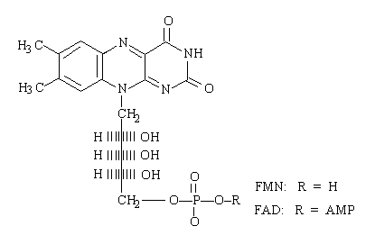
Most flavoproteins utilized FAD. The NADH dehydrogenases in the respiratory chain use FMN. In most flavoproteins, the flavin is not covalently bound but a diffusible substrate. Succinate dehydrogenase is one example where the flavin (FAD) coenzyme is covalently attached to the apoenzyme via a histidine residue bonding with the 8-methyl function of the flavin nucleus.
In the reduction of flavin nucleotide, the structure acquires both electrons and protons to form the reduced product. Hence the coenzyme is both an electron and hydrogen carrier. The mechanism of reduction is not yet elucidated It is believed the hydride is accepted by N5, and that there is some electron rearrangement requiring N1 to pick up a proton. ESR evidence supports another sort of reduction, one in which there is a one-electron transfer reaction ot form a free radical on N5, making a flavin semiquinone.
The flavoprotein NADH dehydrogenases remove hydride from the B-side of the nicotinamide ring. A flavoprotein NADH dehydrogenase in the outer mitochondrial membrane is an A-side enzyme; it normally does not participate in the electron transport chain, but can be made to do so if the mitochondria are damaged in a controllable way and cytochrome c is added exogenously.
The standard reduction potentials for many flavoproteins vary widely, from −490 mV to +190 mV. The oxidized form of FAD or FMN show more extensive system of conjugated double bonds, and so the oxidized form should be more stable as it has more resonance structures. Anything affecting the resonance stabilization will also affect the std. reduction potental. Such an effect would be produced by the apoprotein binding to the flavin. If the protein binds the reduced form more strongly, the E 0 ′ should become more positive relative to unbound flavin. On the other hand if the oxidized form is bound more strongly, the reduction potential is relatively more negative. It is these differences in the apoprotein surrounding the flavin which influences the potential and accounting for the wide range.
Light spectra of FMN and FAD reveal a similarity with NAD and NADP in that oxidized and reduced forms show different maxima both in number and wavelength. FMN shows three peaks: one in the UV at 265 nm with the greatest extinction of all maxima, and two on the visible at 375 nm (about 33% of the extinction of the 265 nm peak) and one at 450 nm (with a slightly higher, ~10%, extinction than the 375 nm peak). These peaks in the visible region will vary as to λ max when they are bound to their specific apoprotein. As for FMNH 2 , there is only one peak in the UV (at 245 nm with extinction about 20% lower at that max than the 265 nm peak of FMN). Spectrophotometric monitoring is done for FMN at either of the maxima present in the 350-500 nm region.
Flavoproteins show changes in fluorescence and absorption properties when undergoing redox changes. Four different flavoproteins have been identified in plant mitochondria. These have been designated FP lf , FP la , FP ma , and FP ha , in which f and a mean fluorescence and absorbance , resp., and l , m , and h , refer to low , mid , and high , resp. At pH 7.2, the E m for these flavoproteins are −155, −70, +20, and +110 mV, resp. Specific inhibitors affect these flavoproteins, and studies with these show that FP ha is a component of the chain between UQ and cyt b . The FP ma has been found as a component of the cyanide-resistant chain which branches from UQ. No known function has been assigned to the other two flavoproteins, although they could be components of the flavin NADH dehydrogenases, about which little is known.
Other flavoproteins include one in an NADH dehydrogenase which re-oxidizes NADH produced by the mitochondrial malic enzyme (malate + NAD → pyruvate + CO 2 + NADH). Another is the NADH:dihydrolipoamide oxidoreductase part of the pyruvate dehydrogenase complex, as well as the α-ketoglutarate dehydrogenase. Flavoproteins are active in the fatty acid synthase complexes in the cytosol as well.
Biologically useful Fe is mobilized in three ways: it is coordinated to heme in proteins (includes the cytochromes); it is clustered to sulfur in Fe-S proteins; it forms another coordinate center in other kinds of proteins, particular (mono)oxygenases.
Fe-S proteins show iron bonded to either elemental sulfur (inorganic sulfur) and to the sulfur in cysteine thiols. The elemental sulfur is acid-labile (meaning it is easily extracted). Classification of Fe-S proteins is based upon the number of Fe and labile sulfur atoms. In plants, two varieties designated [2Fe-2S] and [4Fe-4S] ferredoxins are found. A single Fe-S cluster only accepts and donates a single electron, and the Fe-S proteins are therefore one-electron carriers (they do not carry protons).
The Fe-S proteins show range of MW, from 6000 Da in bacteria to 12 kDa in chloroplasts, and even high for some other complexes. The protein moeity is likely to affect redox potential similarly as it influences flavins. This range has been measured from −420 mV to +350 mV. Fe 2+ is strongly paramagnetic and shows a high g value in EPR, characteristic of Fe-S proteins. One particular protein with [2Fe-2S] cluster shows a g value of 1.94. [EPR done in microwave generator set at 9.5 GHz with variable magnetic field strength at liquid nitrogen-cooled temperatures. The change in absorbed radiofrequency with respect to the change in magnetic field strength is plotted against the magnetic field strength (∂ A /∂ H vs. H ). The g value expresses the ratio of an electron's magnetic moment to its spin angular momentum.] The Fe-S cluster structure is not well understood in Fe-S proteins of either plant or animal. The animal NADH dehydrogenase has four Fe-S centers (designated N1 through N4 with g =1.94, 1.92, 1.89, and 1.86, resp.), and they individually have different reduction potentials, although N3 and N4 are a complex with a ~250 mV potential. An plant NADH dehydrogenase thought to be the internal enzyme has at least three Fe-S centers, with its N1 and N2 apparently equivalent with N1 and N2 in the animal (the g values are identical), and the third having a g value identical with the animal N3/N4 complex.
Ubiquinone refers to large family of compounds having quinonoid nucleus but different only in the length of the isoprenoid tail. The number of isoprene units in animal mitochondria is 10, in higher plants 9 or 10, and in bacteria 6. It is both an electron and proton carrier since it requires both during reduction. UV absorption spectra show differences in oxidized and reduced forms: UQ has maximum at 275 nm, while UQH 2 has 290 nm maximum with one-fourth the extinction of the peak of the oxidized form. It is not useful to monitor it spectrophotometrically since the membrane contains many other UV absorbing materials. It is present in greater stoichiometric numbers than any other component of the electron chain; UQ outnumbers any of the various cytochromes by 5 to 1. This is useful for its function as the receiving point for many electron transport processes in the many chains in the membrane; it can serve as a reserve for collecting in case one part of the chain is proceeding slowly ahead of it.
Cytochromes are hemes: tetrapyrroles coordinating a Fe atom. They move only electrons along the chain, and not protons. First found in animal cells (MacMunn, 1886) and called histo- or myohaematins, they were assigned a respiratory function (based on what was known of hemoglobin). Rediscovered in 1925 by Keilin studying insect muscles in respiratory activity; he was the first to observe that they function as electron carriers from fuel molecules to oxygen.
Cytochromes demonstrate characteristic absorption spectra in the visible range between 500 and 650 nm. These absorption maxima depend on whether the cytochrome is in the reduced or oxidized form. Cytochromes are classed as a , b , and c , depending upon the position of their absorption bands in the reduced state. The reduced cytochromes show three absorption band groups, α, β, γ, also called Soret bands. The α group peaks lie mostly in the 545-600 nm range, the β and γ group peaks in the 520-535 and 415-445 nm ranges, resp. It is the a group peaks which have been used to classify the a -, b - and c -type cytochromes, being peaks appearing in the 590-600, 555-565, and 545-555 nm, resp. In identifying the particular cytochrome the a peaks are found by recording the difference spectrum (the difference in absorption between the reduced in the sample and oxidized form in the reference cell). For a particular cytochrome type, a unique α peak is present while all show indistinguishable β peaks.
The α and β bands disappear in the oxidized cytochrome, the γ band being shifted blue 10 nm and losing its persistence.
There are today four recognized classes of cytochromes: a , b , c and d . The classification is based on the structure of the heme and whether it is covalently bound to the protein. This new classification does not change the old cytochromes a , b , and c classes, which nonetheless fit into the new classes. All hemes in the classes have the macrocyclic tetrapyrrole (porphyring ring), with rings A, B, C, and D, bridged by a methine (–CH=), the methines designated α, β, γ, and δ. The distinction between the different cytochromes are given in the table.
| Cytochrome | Characteristics |
|---|---|
| a | heme at C2 (A-ring) linked to C 15 isoprenoid; formyl group at C8 (D-ring) |
| b | heme not covalently bound to protein (lacks formyl group) |
| c | heme covalently bound to apoprotein via any of side chains 1-8 on all four rings |
| d | noncovalently bound heme with one less double bond (in D-ring), hence less saturated; this is the chlorin type of porphyrin |
When new cytochromes were originally discovered they were given subscripts ( c 1 , a 3 ) in order of discovery. It is now the practice to give a name based on the wavelength of the α band, e.g., cytochrome c 557 . The reduction potentials, E 0 ′, for cytochromes vary over a wide range; the E 0 ′ is a function of (i) prosthetic group structure, (ii) apoprotein structure, and (iii) the nature of binding between prosthetic group and apoprotein.
Because of its extractability and the retained activity of solubilized protein, the mitochondrial cytochrome c is the most well-characterized cytochrome. The protein portion is 104 amino acids long (MW ~13,000), and the heme is covalently bound via thioether linkages at positions 2 (A-ring) and 4 (B-ring) by cysteines at residue 14 and 17, resp. Besides the tetrapyrrole nitrogens, the protein coordinates with the Fe atom with the Met-80 sulfur atom and His-18 (the side which Met and His are on when the A-D rings are placed to run clockwise is not well-indicated in the notes). The protoheme group sits deep inside a cleft surrounded fully by the winding polypeptide chain. The nature of the redox chemistry is not fully elucidated.
Plant mitochondria show two c -type cytochromes, c 547 and c 549 , in which both have about the same E 0 ′ (+0.235 V). The association of c 547 with the cytochrome oxidase and its extractability seems to indicate that c 547 is the equivalent of animal mitochondria cytochrome c .
As for the b -type cytochromes, three were known in plant mitochondria until the mid-70s: b 557 ( E 0 ′ = +75 mV), b 560 (+45 mV) and b 566 (−70 mV). Two additional with α bands at 558 nm have been identified. Current evidence places b 557 and b 560 in the chain after FP ha but before cytochrome c 549 .
There appear to be only minor differences between plant and animal cytochrome oxidase. Most work on these cytochromes has been done in yeast and beef heart. The yeast complex has two a -type hemes, two Cu 2+ atoms, and seven different proteins I-VII ranging from MW 4500 to 40,000. The three largest (I-III) are hydrophobic and coded by mitochondrial genes. The four smallest are hydrophilic and imported from the cytosol (nuclear-encoded). The beef heart complex also shows a -type hemes and copper atoms, but only 6 proteins (MW range: 7300-40,000). The complex has a long axis of 83 � perpendicular to the inner membrane plane. Site location studies show protein III is in the matrix; II, V, and VI are on the cytosolic side, and I and IV are in between with IV closer to III. The atoms of Cu are known to undergo redox changes, and must be involved in transferring electrons from heme in cytochrome a (on the cytosolic side) to the heme in cytochrome a 3 (on the matrix side).
While not necessarily participating in direct electron transfer reactions, the membrane phospholipids are clearly necessary to provide the correct environment and stabilize structures of the elements responsible. Particularly with cytochrome oxidase, PL removal inactivates transfer; it is restored when PL is added back. Lipid composition is also a factor.
Evidence for the current electron transfer sequence given above comes from:
crossing-overthe line representing the 100% mark of the control level; the poisoned site is the
cross-over point.In determining concentration, a difference spectrum is taken for light-absorbing components in the chain
The number of moles of ATP formed when electrons are passed to O 2 was first determined by Ochoa in 1941. He measured what is called the P/O ratio, where P is an orthophosphate and O is a single atom of O, or ½ O 2 . It takes 4 electrons and 4 H + to reduce one O 2 molecule to make 2 H 2 O; hence it takes 2 e − to reduce one O atom. The P/O ratio can therefore by alternatively expressed at the ATP/2 e − ratio.
P/O ratio measurements in animal mitochondria with NADH as the starting reductant for the last 50 years have been about 3. If succinate or glycerol-3-phosphate is the reductant, the P/O ~ 2 in properly coupled mitochondria. Phosphorylation of ATP is thought of as occurring in sites in the chain. With a P/O ratio of 2 for succinate, it was inferred that one of the sites was between NADH and UQ. Confirmation of this was possible in that antimycin A is used to poison the chain downstream of UQ and then NADH and ferricyanide were added to show a chain with P/O ~ 1. (NADH is the normal contributor of electrons to the chain. Ferricyanide is the acceptor of electrons from UQH 2 , which otherwise accumulates as a result of chain poisoining. The ferricyanide/ferrocyanide couple is + 0.36 V.)
Site 3 was located between cytochrome c and oxygen in animal organelles. Ferrocytochrome c is prepared for loading the chain from that point; it is done by adding ascorbic acid in the presence of tetramethyl- p -phenylenediamine (ascorbic acid reduces the phenylenediamine, which in turn reduces the membrane-bound cytochrome. Again a P/O ~1. This was also true if ferrocytochrome c was added as a soluble component to the chain.
Cross-over studies with mung bean mitochondria have shown that site 2 is between cytochromes b and c . The more precise location within the narrowed range is forthcoming. What is shown is that plant and animal mitochondria have analogous phosphoryaltion sites. It should be noted that the external NADH dehydrogenase in the plant has a P/O ratio of only 2.
The free energy of ATP formation (ADP phosphorylation) taken together with the relationship of Δ G °′ = − nF Δ E 0 ′, then a potential drop must be > =0.158 V. It can be noted that the potential drops from the start to the end of the phosphorylation sites is greater than what is needed, and they are the only places where the drop is greater than that value.
Three mechanisms have been proposed over the years.
The first was the chemical-coupling hypothesis. It proposes that a high bond energy is formed in one of the components, which is then used to directly mediate the phosphorylation of ADP. It perhaps bonds with free phosphate, then ADP takes it via an phosphotransferase. This hypothesis was appealing since it resembles what occurs in substrate-level phosphorylation and is simple to understand. Unfortunately, this hypothesis has been dismissed since no postulated coupling factor has been found, and it is difficult to reconcile that the mitochondrial inner membrane must be intact and form a closed vesicle.
The conformational-coupling hypothesis is a chemomechanical model. Energy from transport is conserved as a change in protein conformation in a reduced component. These conformational changes correlated to redox changes have been detected in a number of proteins, including cytochrome c . It has been suggested furthermore that the conformational change is coupled to/transmitted to the F 1 component of the ATPase, which itself drives the phosphorylation. The concept of a conformational-coupling is essentially the reverse of muscle contraction system, wherein ATP hydrolysis induces a conformational change in myosin which brings about the contraction. Another reason that has been proposed is the change in appearance of active mitochondria (state 3) from the resting form (state 4): conformational changes of components of the inner membrane manifest themselves as changes in the gross appearance of the mitochondria. These explanations are not experimental results however.
The third hypothesis is the chemiosmotic model, in which a high-energy state, and neither a high energy compound or conformation, is generated as an electrochemical gradient of H + across a membrane, namely electron movement is accompanied by vectorial translocation of protons from the matrix to the intermembrane space. It is known that some components must take up protons in the course of reduction: they take them from the matrix, and upon oxidation, release them to the intermembrane space.
Calculation of the proton motive force (in volts) can be done from the following equation:
proton motive force = electrical potential + H + chemical potential
= ΔΨ + ( −RT ln 10 / F ) × ΔpH
It should be noted that ΔΨ = ~0.15 V as a result of the separation of H + and OH − across the membrane. The pH difference that accumulates across the inner membrane ends up being about −1.5 (negative since direction vector for the electrical potential and chemical potential must be same).
The energy in this proton motive force is coupled to the formation of ATP by condensation of ADP and P. This occurs on the matrix side. There is a good deal of experimental evidence to support this hypothesis. One is that the inner membrane must be intact and form a closed vesicle, and that the membrane must be impermeable to H + . This has all been shown. Additionally, H + movement across the membrane has been correlated to electron flow in the membrane. More evidence comes from the fact that, absent any electron flow, pH changes can be artificially produced across the membrane which drive ATP synthesis.
Criticisms of the chemiosmotic synthesis:
(i) the point where protons move across the membrane during electron transport does not correlate well with the experimentally determined phosphorylation sites in the transport chain. There are three possible places where protons can transverse the membrane, each site moving 2 H + (as well as 2 e − ) for a total of 6 H + moved. Three ATP are known to be synthesized (H + /P = 2): these sites are at the start and end of NADH dehydrogenase (site 1) in which NADH is oxidized and UQ is reduced. The next possible location is at cytochrome oxidase, where O 2 is reduced (site 3). Yet no translocation is known for site 2, while there are two at site 1, which does not agree with the known P/O data. For this reason, the hypothesis considers that an unknown proton pumping component (maybe UQ) is occurs in the chain perhaps in between the cytochrome b /Fe-S complex and cytochrome c 1 .
(ii) another criticism is that experimental evidence at this time has not conclusively established whether the proton gradient is an effect electron transport or an obligatory intermediate in driving ATP synthesis.
Despite these criticisms, the evidence for the chemiosmotic theory is greater than for competing theories. Additional support for the chemiosmotic theory is in the next section.
Certain compounds (poisons) added to coupled mitochondria causes the mitochondria to become uncoupled. (Coupling again is describes that condition that if one chemical or electrical process occurs, it causes another to occur and where the first process does not occur, the other must not occur.) 2,4-dinitrophenol (2,4-DNP) was the first described (1948).
Uncouplers belong to two classes. One class is the lipid-soluble (they usually have an aromatic ring) proton carriers which include 2,4-DNP. The other class include the ionophores , which require specific ions to be present, typically K + and Na + . Uncoupling permits electron transport to continue without connecting it to ADP phosphorylation; usually if no ADP is available or some other condition related to that, electron flow is stopped despite the high amount of reducing compounds (NADH, succinate) which may be present to contribute electrons. The manner in which uncouplers work would destroy the generated H + electrochemical difference across the membrane, and this absolutely gives support to the chemiosmotic model.
Uncouplers like 2,4-DNP can carry a proton—they have an acidic moiety in their structure—across the membrane, for in their unionized form (as when a proton binds), they easily cross the inner membrane into the matrix because of their lipid solubility. Once in the matrix, they can ionize and the proton released works against the chemical difference which might exist across the membrane. Other uncouplers in this class are shown in the figure below.
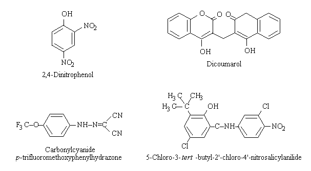
The ionophores were first found as antibiotics produced by species of Streptomyces . They form macrocyclic rings which can embed in the the lipid membrane and serve as a conduit for certain cations which bind to them. This flow of ions collapses the electrical gradient which is a part of the proton motive force driving ATP synthesis. Valinomycin (see figure below for structure) and nonactin can bind cations (they prefer K + to Na + ) at their center. With valinomycin the K + ion is coordinated octahedrally by the oxygen atoms in six properly positioned carbonyls. With nonactin, coordination of the metal ion is by 8 oxygen atoms, four from carbonyls and four on heterocyclic rings. The ion, normally not able to permeate a lipid membrane, because of the obvious electric field effects, is tucked into a hydrophobic pocket formed by the ionophore, and moved across.
Another ionophore is gramicidin A (a component of gramicidin D from B. brevis), and it inserts itself into the membrane to form a permeant ion channel in which Na + and K + can pass with equal ease.

Inhibitors poison the chain but are not uncouplers. Oligomycins are antibiotics produced by certain organisms which inhibit apparently by binding to one of the protein components of the F 0 complex in the H + -ATPase. Atractylic acid comes from the rhizomes of Atractylis gummifera , and is a poisonous glucoside which blocks the ADP/ATP antiport in the membrane, essential for exchange in which ADP enters to the matrix to supply the ATPase with more substrate and in which the formed ATP is shipped to the cytosol. The oxidative phosphorylation processes stop as no more ADP become available for phosphorylation. Another antibiotic with the same action in blocking the ADP/ATP antiport is bongkrekic acid from Pseudomonas cocovenenans , which is grows on a mold itself grown from defatted coconut.
In addition to using the proton electrochemical difference to produce ATP, this high energy state of the mitochondria can be used in the active transport of ions or metabolites across their membrane and against concentration gradient. Certain transporter proteins, including the ATP/ADP antiport exchange system work passively in that movement of these substances across the membrane is driven by chemical potential differences. The electron transport chain-mediated movement of H + out of the matrix and into the intermembrane space produces both the H + chemical potential and an electrical potential difference which can influence the activities of particularly the H 2 PO 4 − /OH − antiport and ADP 3− /ATP 4− antiport . The ADP/ATP exchange is influenced by the electrical potential difference: as the intermembrane space become relatively more positive in charge to the matrix, the relatively more negative ATP (to ADP) is drawn out from the matrix where it was synthesized and into the intermembrane space. The P i /OH exchange, necessary to supply the matrix with more P i for ADP phosphorylation, is affected more by the H + difference: the OH − formed in the matrix is ready to combine with the H + on the outside, and this is coupled to movement of P i inward. This antiport is inhibited by agents which combine with active thiols groups ( N -ethylmaleimide), indicating what is potentially present at the active site of the antiport.
Despite these additional uses of H + gradient-driven activities, these compounds have sufficient chemical potential alone to move across the inner membrane.
Plants have an external NADH dehydrogenase (with the FP ext flavoprotein) in which the transport system produces no phosphate bond energy. The apparent function is to permit re-formation of cytosolic NAD to permit metabolic processes to continue despite the lost potential energy. This potential energy can nonetheless be claimed if the cytosolic NADH avails itself one of the shuttles used to ferry reducing equivalents to mitochondrial matrix NAD.
One such shuttle is the malate-Asp shuttle. Cytosolic and mitochondrial
matrix
malate dehydrogenase
are NAD-dependent oxidoreductases. In the matrix and cytosol are
aspartate aminotransferases
. And in the membrane are a
malate/α-ketoglutarate antiport
and an
aspartate/glutamate antiport
. (1) The NADH in the cytosol to be
moved
into the matrix first reduces cytosolic OAA to malate. (2) The malate then
enters the exchange system in the membrane, with α-ketoglutarate moving
out. There is a balance of electrical charge in the exchange. (3) Malate
is oxidized by the matrix dehydrogenase. The NADH is then oxidized by the
internal NADH dehydrogenase at the start of the transport chain. (4) The
OAA product of the dehydrogenation is transaminated, receiving an amine
from glutamate. (5) The aspartate formed from the previous reaction is
exchanged across the membrane for glutamate at the antiport. The glutamate
will be used in the previous reaction. (6) The aspartate is subjected to
the cytosolic transamination to re-form OAA; the substrate is
α-ketoglutarate in the cytosol after the malate exchange described above.
The OAA will now be used to obtain more NADH reducing equivalents. The net
effect is movement of electrons and protons (hydride) from the cytosol
into the matrix.
Another
shuttle
is the glycerol dehydrogenase system. An NAD-dependent
glycerol-3-phosphate dehydrogenase is present in the cytosol and as a
flavoprotein in the mitochondrial inner membrane on its cytosolic face.
The cytosolic enzyme reduces DHAP using NADH, the glycerol-3P product
moving freely through the outer membrane and toward the enzyme on the
inner membrane. The enzyme oxidizes it, and the DHAP product moves back to
the cytosol for additional cycling. The electrons from the dehydrogenase
are used to reduce UQ, where the chain continues.
Cyanide has already been indicated to block the electron transport chain by inhibiting the action of cytochrome oxidase. In animal mitochondria, since all electron flow to O 2 must occur with use of cytochrome oxidase, this means all electron flow is stopped. This is not the case with plant mitochondria, as O 2 appears to accept electrons even when mitochondria are poisoned with cyanide.
The experimental evidence indicates a branching point in the normal chain in which oxygen can be reduced at another point (see figure). The only common pathway they seem to share is the entry points at both the internal and external NADH dehydrogenases and at succinate dehydrogenase to where they meet at the UQ redox site. When the chain is inhibited by cyanide, UQ passes electrons to flavoprotein FP ma (Δ E 0 ′=+0.02 V) which then passes them to a cyanide-resistant terminal oxidase. The oxidase is believed to be a nonheme Fe-containing protein which has no Fe-S cluster. It is inhibited by hydroxamates ( m CLAM) which are strong metal chelators, and this inhibition can be countered by addition of Fe 2+ ; it is known that hydroxamates can not chelate iron in Fe-S proteins. Other work shows that this oxidase reduces the O 2 only to H 2 O 2 rather than H 2 O. The peroxide product would be quickly converted by catalase.
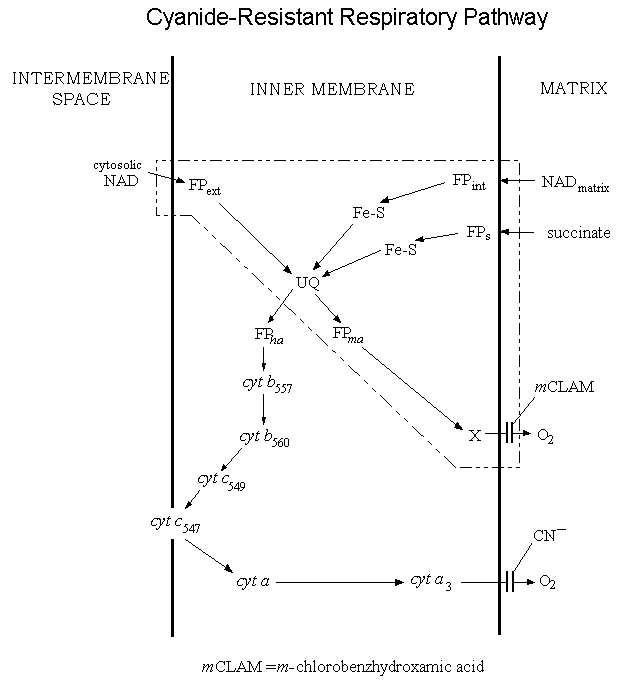
That the branch point is from UQ is based on results showing that antimycin A, acting between cytochromes b 557 and c 549 , does not block cyanide-resistant respiration. Amytal, piercidin A, and rotenone do block CN-resistant respiration, and this inhibitors act on the internal NADH dehydrogenase at the Fe-S cluster. Results also show that matrix NADH oxidation in the presence of cyanide or antimycin A produces a P/O ~1, showing phosphorylation is coupled to site 1 of this electron transport pathway. Moreover, oxidation of succinate and cytosolic NADH give a P/O of near zero, indicating that the phosphorylation site is not between UQ and the terminal oxidase, and is in site 1.
How flow is regulated through the diverse transport chains is not absolutely known. Some evidence indicates that it is during intense fluxes that the chain is used. The physiological significance of the chain is not known. It is unlikely that it evolved to protect plants from their own cyanogenic glycosides producing HCN when injured, since plant with the most active CN-resistant respiration produce no cyanogenic glycosides. There is a theory that ethylene induces active cyanide-resistant pathway flow during the climacteric of fruit, which shows a marked increase in respiration. Some germinating seeds exhibit use of the pathway during water imbibition.
But the best theory is that it generates heat for thermogenic tissues. During flowering or inflorescence in some plants (water lily, skunk cabbage), the heat produced by the respiratory pathway appears to volatilize certain substances (amines, indoles) which produce an odor or gaseous material designed most likely to attract pollinating insects. Indeed the timing of heat production and the shedding of pollen hours later shows that this may be one function of this pathway. The heat is the waste of energy involved with the full chemical potential of NADH is not coupled to ATP production. The amount of heat produced is incredible, with as much as a 25-30° C difference from the air temperature.
An analogous pathway in the mitochondria of brown adipose tissue, in which phosphorylation is uncoupled to produce heat, is present in animals.
It is the process of breaking down monosaccharides to pyruvate, in which the monosaccharide in the plant is typically glucose (from starch or sucrose) or fructose (from sucrose). Glycolysis does not depend nor is inhibited by the presence of oxygen. The pathway is essential in germinating seeds and nonphotosynthetic tissues of the plant which have no other recourse to producing the energy necessary for cellular metabolism other than the potential energy stored in glucose.
All glycolytic processes are considered to occur in the cytosol, despite the finding of phosphofructose kinase (PFK), phosphoglycerate phosphomutase (PGPM), enolase, and pyruvate kinase (PK) in the stroma of the chloroplast.
The d -glucose and d -fructose entering the cell are rapidly phosphorylated on the C6 carbon by the MgATP-dependent hexokinase. This is usually the case if those substances come from a sucrose source, in which an invertase hydrolyzes the sucrose. This is not the case if the glucose source comes from cellular starch breakdown, in which breakdown is by phosphorylysis to form glucose-1-phosphate (G1P) then altered by phosphoglucose mutase (PGM) to make G6P, thereby saving phosphate bond energy. From G6P to F6P by phosphoglucose isomerase (PGI), the F6P is phosphorylated by another MgATP-dependent kinase, PFK. The aldolase enzyme then breaks the C-C bond to form dihydroxyacetone phosphate (DHAP) and glyceraldehyde-3-phosphate (GA3P). The DHAP is converted to GA3P by triose phosphate isomerase (TPI).
The two GA3P molecules are oxidized by NAD-dependent glyceraldehyde-phosphate dehydrogenase. The product, 1-3-diphosphoglycerate (1,3-diPGA) is a high energy acyl phosphate ester, with bond energy of hydrolysis have Δ G °′= −49.3 kJ mol -1 . The dehydrogenase from yeast is homotetramer with subunit MW 35,000 and one NAD tightly bound to it. It has been indicated that NADH has very little affinity for the enzyme whereas it exchanges with NAD rapidly as the latter has an extremely high affinity. The enzyme also has thiol groups sensitive to alkylating agents (iodoacetamide). The thiol group is thought to be involved in the oxidation as intermediate forming a high-energy thioester which is then phosphorlyzed by inorganic phosphate to produce the acyl phosphate ester.
The formation of the acyl phosphate ester is coupled to ADP phosphorylation when 1,3-diPGA becomes 3-PGA. The overall Δ G °′= −49.3 + (+30.5) = −18.8 kJ mol -1 .
PGPM is a Mg-dependent enzyme converting 3-PGA to 2-PGA. In the presence of phosphate, fluoride ion inhibits the enzyme as it removes the Mg 2+ as magnesium fluorophosphate. Dehydration of 2-PGA to form phosphoenolpyruvate (PEP) produces the highest known phosphate bond energy released during hydrolysis (Δ G °′= −61.9 kJ mol -1 ). Although the reaction catalyzed by the next enzyme is pyruvate kinase, suggesting the PEP to pyruvate formation is reversible, the free energy necessary is twice that for ATP hydrolysis and essentially not possible. For other reasons, the two ATP-dependent reactions involving HK and PFK are irreversible, while all other reactions are truly reversible.
Under aerobic conditions, glycolysis produce 2 ATP from the substrate-level phosphorylation, while the NADH are passed to the mitochondrial external NADH dehydrogenase, which produce 2 ATP per NADH. The total means 6 ATP per hexose if ATP is also used by HK, 7 if from phosphorylysis of starch. In anaerobic conditions, NADH cannot be passed to the mitochondria but must be oxidized by reduction of pyruvate to lactate. In yeast, regeneration of NAD is by a process involving the decarboxylation of pyruvate by the thiamine pyrophosphate-dependent pyruvate decarboxylase to acetaldehyde, which is reduced by alcohol dehydrogenase.
The pathway is chiefly controlled by PFK, with PK also contributing. PFK is the ideal regulatory point since it describes the first committed step and a nonequilibrium reaction. It is allosteric in its control, affected by a number of metabolites. Among the metabolites controlling PFK are the phosphorylated intermediates (3-PGA, 2-PGA and PEP); adenine nucleotides and P i ; the starting metabolites of the pentose phosphate pathway (6-phosphoglucuronic acid); and the molecule at the beginning of the TCA cycle, citric acid. There are some difference between regulation of plant and animal PFK—namely the effect of adenine nucleotides—but many things are the same. PEP, ATP (a substrate in the reaction), 6-phosphogluconic acid, and citric acid inhibit the enzyme; this is obvious since a high concentration of these compounds would indicate glycolysis is not necessary to produce energy. On the other hand, high P i stimulates the enzyme.
The allosteric regulation of PK has not been fully elucidated for the plant enzyme. It is inhibited by ATP and citrate, and stimulated by its substrate, ADP.
Pyrvate formed in glycolysis enters the mitochondria. Here it is oxidized by a huge multienzyme complex known as pyruvate dehydrogenase . The dehydrogenase complex has three discrete catalytic activities. The first is pyruvate lipoamide oxidoreductase (EC 1.2.4.1), which has a noncovalently bound thiamine pyrophosphate (TPP) coenzyme. This catalyzes the decarboxylation and then transfers the acetyl group to lipoamide , the transfer resulting in the reduction of lipoamide. The thiazole ring of TPP is temporarily carrying an acetol group during the reaction.
The second catalytic function is by acetyl-CoA dihydrolipoamide S-acetyltransferase (EC 2.3.1.12). The thioester of lipoamide is carry an acetyl group, and this is transferred to coenzyme A to preserve the energy of the thioester. The products are acetyl-CoA and a dithiolic lipoamide (reduced) lipoamide. The lipoamide must be oxidized so that it can return to the first step of this multistep process, and so the third and last catalytic step of pyruvate dehydrogenase complex is the FAD-specific NADH lipoamide oxidoreductase (EC 1.6.4.3). The NADH produced from the oxidation is reoxidized by the internal NADH dehydrogenase.
Arsenite (AsO 3 − ) is a known inhibitor as it forms an irreversible cyclic complex with the reduced lipoamide (see figure).
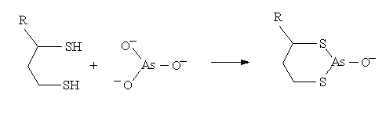
Condensation of acetic acid with oxaloacetate is mediated by citrate synthase , in which the acetyl carbon attack the si face of OAA and assumes the 3-pro- S position in citrate. The citrate is then isomerized into the (2 S, 3 R )-isocitrate ( threo -D s -isocitrate) by the enzyme aconitase . An intermediate in this reaction is cis -aconitic acid; although the C3 of citrate is not chiral, the enzyme treats it as a chiral molecule. Aconitase is inhibited by fluorocitrate, which is interestingly present in several plants in Australia, South Africa, and South America and is poisonous to cattle (clearly the plant compartmentalizes it or it would be poisonous to the plant as well).
Isocitrate dehydrogenase then converts the isocitrate to α-ketoglutaric acid in an NAD-dependent oxidative decarboxylation step in which oxalosuccinate is thought to be an intermediate. (An NADP-dependent isocitrate dehydrogenase is found in the cytosol and mitochondria but is not involved in the TCA cycle. See photorespiration.) The formation of the β-keto acid oxalosuccinate can result in nonenzymatic decarboxylation as occurs in all β-keto acids, but the enzyme may in fact promote decarboxylation.
The α -ketoglutarate dehydrogenase also oxidatively decarboxylates its substrate, but not as a result of forming a β-keto acid. Rather the α-ketoglutarate dehydrogenase is a complex identical in catalytic action to pyruvate dehydrogenase complex, as both are α-keto acids. The only difference is that succinol (not acetol) is bound to TPP after decarboxylation by enzyme 1 decarboxylase, and a succinyl (not acetyl) moiety is bound to lipoamide in enzyme 2. It is noted that the carbon lost is the one in the COOH of OAA prior to the condensation reaction. The other product is succinyl-CoA as the potential energy of the thioester is trapped. The enzyme is sensitive to AsO 3 3− as is PDH complex. This step is, moreover, essentially the only irreversible step in the TCA cycle, thereby forcing it in one direction.
The succinyl-CoA thioester is then phosphorylzed by succinate thiokinase . The product of the reaction is succinate and ATP. Note that GTP is the product in animal mitochondria. This step is the only substrate-level phosphorylation that occurs.
While the two of the four carbons in succinate come from the acetyl-CoA generated in glycolysis, the distinction becomes lost when succinate is converted by succinate dehydrogenase to fumaric acid, since the enzyme cannot distinguish between the CH 2 COOH units. The reaction is a trans -elimination reaction (illustrated below), the flavoprotein (FAD-containing) having Fe-S clusters and couched in the inner mitochondrial membrane. The FADH 2 generated are moved into and through the chain to generate two ATPs molecules.
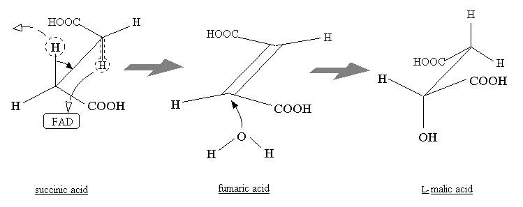
The fumarate is then hydrated by fumarate hydratase (not malate dehydratase) to produce l- malate, not that the H + is added to the re face and the OH − of water added to the si face (see illustration below). The malate is converted to OAA by NAD-dependent malate dehydrogenase , the final enzymatic step. At equilibrium formation of malate is actually favored ( K eq = 1.29 × 10 -5 ), but is nonetheless driven toward OAA formation with OAA being consumed by the citrate synthase reaction.
Totaling the cycle shows a net gain of three NADH, which move through the chain to generate 3 ATP molecules for each electron pair, or 9 ATP total. Add these to the two ATP from succinate dehydrogenase, one ATP formed at the substrate level, with a total 12 ATP per acetyl unit consumed. In considering oxidation of one hexose monomer to CO 2 , a total of 36 ATP are produced assuming phosphorylation of the hexose. The efficiency can be calculated in the following manner: [36 mol ATP/mol glucose]*[30.5 kJ/mol ATP]*100% � [2870 kJ/mol glucose] = 38.3% conversion.
The logical control point for TCA regulation is at the citrate synthase step, since it regulates entry into the cycle. ATP has been shown to produce allosteric inhibition of the enzyme. (The citrate synthase in the glyxosome is not inhibited by ATP however.)
Perhaps a better control point is at the PDH complex. It has been demonstrated in potato tubers that rising levels of NADH compete with the NAD site to slow down formation of acetyl-CoA.
A 70-kg man has about 15 kg of adipose tissue in his body, enabling him to live on the reserve fat for 40 days of starvation without depleting the protein reserve a great deal.
Plants generally do not use fat as a reserve fuel and do not store it, with triglyceride levels minimal in vegetative tissues. Fat is stored in the seeds of many species, however, used to support growth until photosynthetic processes can be started. The carbon skeleton of fat is used to synthesize carbohydrates, proteins, and other lipids. The ATP obtained to drive these processes comes from siphoning some of the energy in fats to move the TCA cycle.
Triglyceride catabolism requires: (a) hydrolysis of the fatty acid esters into fatty acids and glycerol, (b) catabolism of glycerol, and (c) catabolism of the fatty acids. The lipases used to perform the process in (a) are discussed in chap. 8, while the other two are discussed below.
The glycerol generated from hydrolysis is phosphorylated by a glycerol kinase to produce a sn -glycerol 3-phosphate. This is then oxidized at C2 by NAD-dependent glycerol 3-phosphate dehydrogenase to form DHAP, which is a recognizable metabolite in glycolysis. From that point to complete oxidation, the production of 21 ATP molecules is calculated (with a net 20 from the point of glycerol, less the one used to phosphorylate it).
The process involved in breaking down the long-chain hydrocarbon forming the fatty acid structure into two-carbon acetyl-CoA molecules is called the β-oxidation spiral. Another minor pathway yielding no ATP is the α-oxidation pathway.
All enzymes for this pathway occur in the mitochondria and in glyoxysomes. Fatty acids released by the action of lipase on triglycerides are first activated by the enzyme acyl-CoA synthetase to form fatty acyl-CoA esters. The reaction mechanism and net reaction are shown:
(1) R–COOH + ATP ——→ R–CO~AMP + PP
i
(2) R–CO~AMP + CoA–SH ——→ R–CO~S–CoA + AMP
—————————————
R–COOH + CoA–SH + ATP ——→ R–CO~S–CoA + AMP + PP
i
Hydrolysis of PP i by pyrophosphorylase is an energy-yielding reaction which further favors the formation of the acyl-CoA ester. Since thioesters have greater bond energies than phosphoanhydrides, it is not surprising that two phosphoanhydride bond energies are required to produce a single thioester.
With formation of the fatty acyl-CoA, β-oxidation begins at once with oxidation by the flavoprotein acyl-CoA dehydrogenase to form the trans -α,β-dehydrofatty acyl-CoA ( trans -Δ 2 -dehydrofatty acyl-CoA). The FADH 2 produced as a result is then re-oxidized with its pair of electrons used to generate two ATP before being passed to O 2 . (In the glyoxysome where this reaction occurs, the electrons and protons are passed to O 2 directly to form H 2 O 2 .) The second enzyme in β-oxidation, enoyl-CoA hydratase , adds water to the α,β-unsaturated acyl-CoA to produce l -(+)-β-hydroxyfatty acyl-CoA. While the enzyme also hydrates the cis -α,β-unsaturated acyl-CoA, its product is d -(–)-β-hydroxyfatty acyl-CoA, which can not be further manipulated because of its sterochemistry.
The third step is by the NAD-dependent β- hydroxyacyl-CoA dehydrogenase . The NADH product from this reaction within the mitochondria produces the 3 ATP from passing through the NADH dehydrogenase. The glyoxysomal dehydrogenase may or may not produce 2 or 3 ATP depending upon whether the NADH reducing equivalents are passed via a shuttle or use is made of the external NADH dehydrogenase.
The fourth and final step of β-oxidation is cleavage by thiolysis with
CoASH mediated by
acetyl-CoA acyltransferase
. The β-keto carbon is made nucleophilic and undergoes classical acyl
substitution in which the CoA thiol is the nucleophile. The products are
acetyl-CoA and a shortened (by two carbons) fatty acyl-CoA that can return
to and be a substrate for the first enzymatic step in b-oxidation, which
is why the β-oxidation pathway is cyclic or said to be a
spiral
because the cycle breaks down the molecule in steps of two.
For fatty acids with an even number of carbons, the β-oxidation cycle will yield eventually all acetyl-CoA molecules. If the fatty acid is odd-numbered, the final step will be breakdown of a 5-carbon acyl-CoA into acetyl-CoA and 3-carbon propionyl-CoA; propionyl-CoA cannot be broken down by the enzymes in the pathway further. The 3-carbon molecule is broken further by the first two enzymes to form acrylyl-CoA then β-hydroxypropionyl-CoA, but then the thioester is hydroylzed (by β- hydroxypropionyl-CoA hydrolase ) to form β-hydroxypropionate, which is then oxidized by NAD-dependent β-hydroxypropionate dehydrogenase to form malonate semialdehyde (OHC-CH 2 -COOH), and this product is further oxidized by the NAD-dependent malonate semialdehyde dehydrogenase (acetylating) (EC 1.2.1.18), in which CoASH is used to preserve bond energy, to form CO 2 and one mol acetyl-CoA. [In animals, propionyl-CoA is handled differently: it is first carboxylated to form ( R )-methylmalonyl-CoA which is then converted to ( S )-methylmalonyl-CoA by a racemase. The ( S )-stereoisomer undergoes a rearrangment mediated by cobalamine-containing methylmalonyl-CoA mutase which forms succinyl-CoA, a TCA cycle intermediate. Plants do not synthesize cobalamine, a/k/a vitamin B 12 , and so do not use such a pathway.]
The fate of the acetyl-CoA generated depends on whether fatty acyl-CoA oxidation is occurring in the mitochondria or the glyoxysome. If in the glyoxysome, the acetyl-CoA are condensed to form succinate which is then moved into the mitochondria, where it can be incorporated into the TCA cycle to form OAA. The OAA is then converted to PEP, which then can be used in gluconeogenesis (reverse glycolysis). Any NADH generated in the steps of the glyoxylate or TCA cycle can be used to make ATP in the mitochondria and restore NAD for further cycling.
Calculating the ATP molecules generated by the complete oxidation in mitochondria of a fatty acid, such as palmitic acid (16 C), can be formidable. It can be seen that 7 cycles of β-oxidation will be necessary to break the even-numbered fatty acid into 8 acetyl-CoA. Each cycle generates one NADH (3 ATP) and one FADH 2 (2 ATP), giving 5 ATP each turn for a total of 35 ATP. Since each acetyl-CoA can be incorporated into the TCA cycle to generate 12 ATP by complete oxidation, they generate a total 96 ATP. This subtotals a 131 ATP, but when two ATP are subtracted for the effective activation of the palmitic acid in the first step leading to oxidation, the grand total is 129 ATP. Using the fact that the following reaction, palmitic acid + 23 O 2 → 16 CO 2 + 15 H 2 O has a Δ G °′ = −9782 kJ/mol, the efficiency of energy conversion is [129 mol ATP / mol palmitic acid]*[30.5 kJ/mol ATP]*100% � [9782 kJ/mol palmitic acid] = 40.2%. For each of the steps of the β-oxidation, the Δ G °′ values are −20, −3.1, +15.7, and −27.8 kJ mol -1 , respective of their sequence, with the net Δ G °′ = −35.2 kJ/mol showing the overall favorability of the oxidation.
Unsaturated FAs typically have a cis -Δ 9 double bond or a system of bonds interrupted by methylenes. Two extra enzymes are necessary for preparing the acyl-CoA for β-oxidation. Using linoleic acid (18:2, Δ 9,12 ) as an example, there will be three β-oxidation cycles before a unique molecule is presented, a β,γ-unsaturated acyl-CoA. An enzyme called a Δ 3-cis → Δ 2- trans -enoyl-CoA isomerase will perform two functions: it will move the π bond to form an α,β-unsaturated acyl-CoA, and it will put the bond in to a trans -configuration. This isomerization permits b-oxidation to continue from the point where the α,β-unsaturated acyl-CoA would form. An additional turn of the b-oxidation cycle produces an α,β-unsaturated acyl-CoA, but the bond is cis instead of trans . The enoyl-CoA hydratase can still add water, but the result is d -(–)-β-hydroxyacyl-CoA, which can not be affected by the next dehydrogenation step. The presence of d -(–)-β- hydroxyacyl-CoA epimerase converts it to the l -(+) isomer, which can be processed. For each double bond in an FA, two fewer ATP molecules are produced since there is no need for an FAD-dependent dehydrogenation of a saturated group.
This type of process has been identified in cotyledons of germinating peanuts and in leaves of pea and castor bean plants. In the peanut cotyledon system, the α-oxidation occurred by use of a peroxidase in which H 2 O 2 is produced, while in the pea and castor bean, an O 2 requirement was found instead of H 2 O 2 .
Essentially it involves oxidizing the carbon alpha to the COOH group, resulting in decarboxylation and formation of COOH at the α-carbon. The mechanism is illustrated below. An FAD-flavoprotein is involved in the first reaction, in which the FAD nucleus form a free radical semiquinone which stereospecifically removes a H hydride from the α-carbon. The reduced flavin then reacts with O 2 to form a flavinohydroperoxide (FAD-HOOH) adduct, which subsequently reacts with the fatty acid free radical to produce a 2- d -hydroperoxyfatty acid. The hydroperoxy acid can then undergo an enzyme-mediated oxidative decarboxylation to form an aldehyde one less carbon, and the aldehyde is dehydrogenated to form the acid. An alternative to oxidative decarboxylation is reduction of the hydroperoxy acid to from a stable α-hydroxy fatty acid.
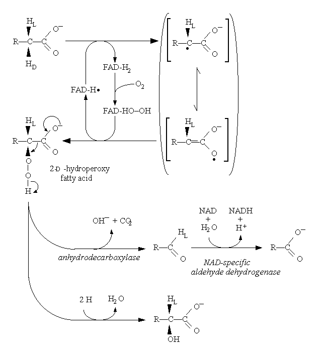
The NADH produced in the dehydrogenation of the aldehyde does not appear to be used in ATP production, even though it is logical to expect such. The physiological significance of α-oxidation is discussed in Chap. 8.
Little is known about how plants degrade amino acids to use their potential energy elsewhere since plants usually use amino acids for growth and play a minor role, if any, in energy utilization, quite the opposite in animals.
Respiration-LikeProcesses Not Linked to ATP Generation
This product occurs only in the light in which O 2 is consumed and CO 2 produced (hence the name photo-respiration). The action of rubisco as an oxygenase has been covered in chap. 5. Rather than incorporating CO 2 for productive carbohydrate synthesis, O 2 is added in which a 3-carbon PGA molecule is formed but so is a 2-carbon phosphoglycolate . Labeling studies using 14 CO 2 (the carbon is made bold in the figure) and 18 O 2 (the oxygen is made bold) show the following: both carbons of phosphoglycolate are labeled, and the labeled oxygen is found in the COOH group. The labeling of both carbons is reasonable in view of the rubisco mechanism. Once phosphoglycolate is formed in the chloroplast stroma, a phosphatase present in the stroma hydrolyzes the phosphate from the molecule to form glycolate.
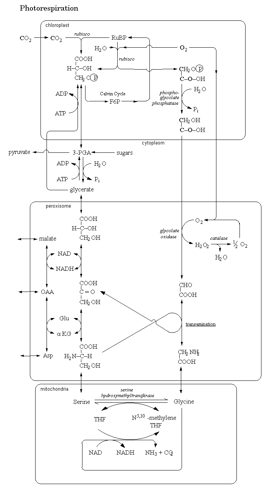
The glycolate exits the chloroplast to come into a peroxisome, generally adjacent to chloroplasts. In the peroxisome, O 2 -dependent FMN-containing glycolate oxidase converts glycolate to glyoxylate. Another product is H 2 O 2 , which is handled quickly by catalase present in the peroxisome. Two transaminases present in the peroxisome, one which uses serine and the other glutamate in which the amine acceptor is glyoxylate in both cases, will convert glyoxylate to glycine.
Glycine formed in peroxisomes then crosses into mitochondria. Two molecules of Gly are consumed as in one reaction, glycine is cleaved by glycine synthase into NH 3 , CO 2 , and its methylene group retained by a tetrahydrofolate cofactor in the form N 5,10 -methylene THF. The reaction also requires oxidation by NAD. The other molecule of Gly is used to form serine directly in the reaction catalyzed by serine hydroxymethyltransferase . The enzyme requires pyridoxal phosphate, and it uses N 5,10 -methylene THF produced by glycine synthase to provide the extra carbon on the serine side chain.
It is observed that NH 3 is produced in the mitochondria. While mitochondrial glutamate dehydrogenase could use the NH 3 to produce glutamate from a-ketoglutarate, its K m for NH 4 + is higher than the amount of NH 3 to poison mitochondrial metabolic processes. It is likely that NH 3 is transported to the chloroplast which contains light-activated glutamine synthetase and glutamate synthase, both with K m values for NH 3 sufficiently low enough.
Serine formed in the mitochondria is eventually returned to form ribulose 1,5-bisphosphate for either another photorespiratory cycle or productive carbon fixation. First it passes to the peroxisome, in which a transaminase converts it to hydroxypyruvate. The hydroxypyruvate is reduced by a NAD-dependent hydroxypyruvate reductase to form glycerate.
Glycerate then passes to the chloroplast. Along the way it may be phosphorylated by glycerate kinase (ATP-dependent) in the cytosol (the cytosol, in addition to the chloroplast, also has a phosphoglycerate phosphatase to hydrolyze the phosphate). Otherwise the chloroplast has a glycerate kinase. 3-PGA is the product wherever it is phosphorylated. The 3-PGA then can move through the Calvin cycle to produce RuBP.
The cycle has two parts, the first part being from RuBP to glycine which is irreversible physiologically as a result fo the oxidations, and the second part being from glycine to 3-PGA, those reactions reversible. The net reaction is
2 RuBP + 3 O 2 + 3 H 2 O — → 3 3-PGA + CO 2 + P i
The formation of serine and glycine do not depend upon photorespiration occurring. If a high CO 2 O 2 ratio obtains to block photorespiratory events, then the accumulation of 3-PGA can produce Ser and Gly in the back reactions.
Measuring photorespiration is not an accurate process. The CO 2 compensation point is measured, with a lower value indicating less photorespiration. (The CO 2 compensation point is the point at which a constant CO 2 concentration reached when a plant is kept in a closed atmosphere under constant illumination, meaning CO 2 uptake by photosynthesis=CO 2 evolution from photorespiration.) C 3 plants show a value of 40-60 ppm (atmospheric CO 2 = 0.03% by vol. or 300 ppm) while C 4 plants have values <10 ppm. These values indicate a very active photorespiration process in C 3 plants, where C 3 plants lose ~20-40% of fixed carbon and indicating C 4 plants are more efficient at this process. The major agricultural crops (with the exception of maize, millet, sorghum, and sugar cane) are all C 3 plants.
The physiological role of photorespiration is a mystery, but it appears necessary since there are no plants which are free of the pathway. Attempts are being made to alter the catalytic properties of rubisco to minimize or eliminate the photorespiratory process, and perhaps explain why it was necessary to begin with. Use of inhibitors of glycolate oxidase (e.g. a-hydroxy-2-pyridinemethanesulfonate, 2-hydroxy-3-butynoic acid) are also being considered.
Electron transport chains are also found in ER which use O 2 as the terminal acceptor, but which are not coupled to phosphorylation of ADP. An important chain one containing a flavoprotein, cytochrome P450, and Fe-S protein (the latter is not certain). The flavoprotein is NADPH-cytochrome P450 reductase, which transfers electrons from NADPH to cytochrome P450. Cytochrome P450 catalyzes hydroxylation using O 2 . There is >1 species of cytochrome P450. The all have noncovalently bound protoheme Fe which coordinately binds to O 2 during a redox change, and they are mixed function oxidases utilizing protons on a co-substrate:
substrate + O 2 + co-substrate-H 2 ——→ substrate-OH + H 2 O + co-substrate (oxidized)
The reducing cosubstrate is usually NADPH. The mechanism shown below is tentative, with evidence supporting it in parts. The cytochrome P450 is to facilitate cleavage of the O–O bond to create a reactive oxene intermediate. The bond dissociation energy for O 2 is quite high (Δ H = +493.7 kJ mol -1 ), but O 2 bound to Fe in heme makes it easy to add electrons (from NADPH) to polarize the bond. A proton in the environment is attracted and bond dissociation results in bond formation with the proton and H 2 O is the first product formed. The oxene now remains. Being very electrophilic, it reacts with bound substrate, hydroxylating it in effect. The hydroxylated substrate leaves behind the original P450-Fe 3+ before it started.
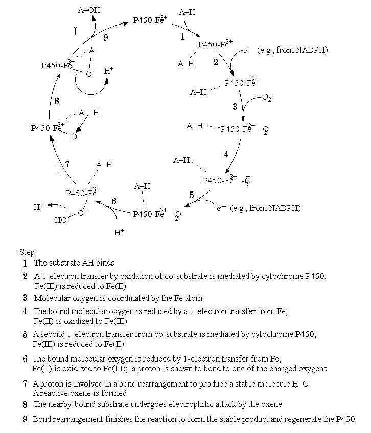
Among the reactions occurring in plants utilizing this system is the sterol demethylation process. Also a monooxygenase is used in the desaturation of fatty acids (see chap. 8).
Sugars are broken down to smaller elements using glycolysis although an alternative path is found in the hexose monophosphate shunt of oxidative pentose phosphate pathway .
All enzymes in the path are cytosolic as are those of glycolysis. The pathway is thought of as occurring in two stages. Stage 1 is essentially irreversible and involves conversion of G6P to Ru5P. Ru5P then returns by stage 2 to the glycolytic sequence by production of F6P and GA3P.
Glucose-6-phosphate dehydrogenase is the first catalytic step, producing d- glucono-δ-lactone 6-phosphate from glucopyranose-6-phosphate in a NADP-dependent dehydrogenation. The lactone is essentially unstable and would hydrolyze, but the hydrolytic enzyme 6-phosphogluconolactonase is present to bring the process along more rapidly. The 6-phosphogluconic acid (Glcon6P) product is dehydrogenated at carbon 3 by the NADP-dependent 6-phosphogluconate dehydrogenase . The immediate product is effectively a β-keto acid and spontaneously decarboxylates in a fashion typical of β-keto acids; the product is therefore Ru5P. Stage 1 is complete with the loss of one carbon and production of two moles of NADPH.
Stage 2 involves no energy yielding oxidative steps but merely isomerization and aldol-type condensations (two- and three-carbon transfers). Ru5P can isomerize to form Xu5P (under the aegis of Ru5P 3-epimerase ) or R5P (under the aegis of R5P isomerase ). Transketolase is the TPP-containing enzyme transferring a 2-carbon ketol to an acceptor aldehyde: hence, a two-carbon ketol is taken from the keto sugar Xu5P and placed on the acceptor aldehyde R5P, the products being GA3P and Su7P. Transaldolase abstracts a three carbon dihydroxyacetol from keto sugars and delivers them to an aldehyde acceptor: in this case the three carbon group around the ketol of Su7P is removed, the product erythrose-4-phosphate (E4P) being formed, and delivered to GA3P as an acceptor, producing the 6-carbon keto sugar F6P. Transketolase can react again by moving a two-carbon ketol from Xu5P and adding it to E4P, producing GA3P and F6P. All products are either GA3P or F6P, elements of the glycolytic path. The reactions are summarized in the figure below.
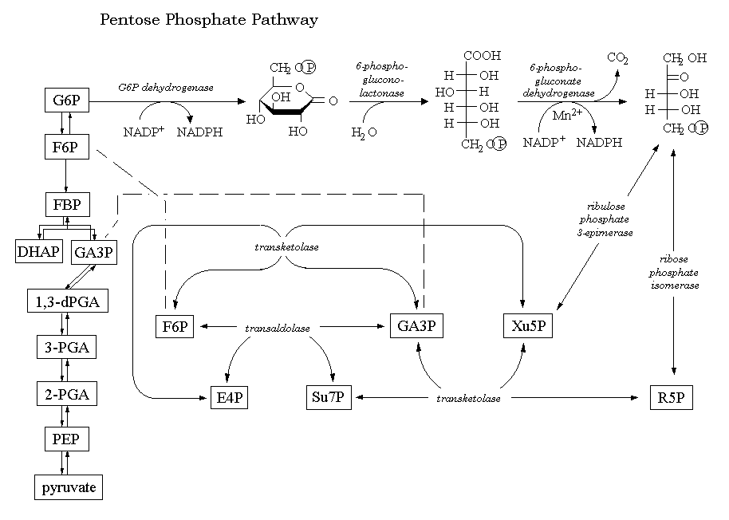
The function of this pathway is to generate NADPH for biosynthetic processes in the growing plant, particularly when NADPH is not actively produced by photosynthesis. A second purpose is to produce R5P used in nucleic acid synthesis. In plants especially, a third purpose is to produce E4P for the shikimic acid synthesis, a precursor to producing aromatic rings. Note the path to the pentose phosphates can be one in which NADPH is generated if it is needed, or one via the reversibility of the stage 2 steps. The NADPH produced is generally not employed in oxidative phoshphorylation of ADP, but rather directly involved with reductive biosynthetic steps.
Two classes of polysaccharides in plants: storage (e.g., starch, fructosans) and structural (e.g., cellulose, pectins). These are made from the carbon fixed in Calvin cycle and presented from the cycle in the form of F6P. A clear example of the changes in sugar occur in the chloroplast during the day when the F6P produced is converted to starch within the organelle, then exported later as sucrose during the next dark period.
Permanent stores of polysaccharides are found in seeds and vegetative propagatory structures (stem tubers, corms, bulbs). These supply the immature, growing plant emerging from germination with the fixed carbon and energy in its growth and development. Carbohydrate (CHO) synthesis is similar in young germinating plants and mature photosynthetically active plants. Sucrose is moved to the actively mitotic meristem for both energy and cell wall construction. This sucrose is obtained from the polysaccharide reserve in the seed stores, which is broken down to produce the monomers used to make the transport form of sugar (sucrose). In the majority of cases, the polysaccharide is starch, but certain plant families (members of Compositae, Campanulaceae, Graminae) store fructosans for this purpose. Still other seeds store their energy as fat (lipid), utilizing a metabolic pathway permitting conversion to glucose by gluconeogenesis and a system which routes acetyl-CoA past the decarboxylating steps of Krebs cycle. The glucose is easily converted to sucrose as in other plants.
Much of the experimental work done to reveal what is now known utilized 14 CO 2 in ascertaining how CHO is moved in the plant. From studies of tobacco, it was shown that a young leaf keeps nearly all the fixed carbon within the leaf itself. When about half grown, it begins to export the fixed carbon to other plant structures (as sucrose). When fully expanded, half of the fixed carbon is moved to other tissues (largely stems and roots), while the other half is kept as reserve in the leaf (as starch and sugar). Less than 2% of the carbon is moved to and utilized by other leaves, which are above and on the same side of the stem as the treated leaf. Only ~0.1% of the carbon reaches the apical meristem.
Tobacco is dicotyledenous, but similar experiments with monocots (rice, rye, barley) show a similar distribution of the labeled carbon. One significant difference was that lower leaves stopped supplying the upper leaves after emergence of the ears. The large amount of carbon used to make the starch in the grains of the ear comes from the ear itself and the topmost leaves and sheaths.
There is no doubt about the transport form, since the labeled carbon in sieve tubes is found primarily to be in sucrose. Indeed, growing plants supplemented with sucrose grow faster.
The incorporation of CO 2 into all plants via rubisco in the chloroplast stroma as the first step in the Calvin cycle is thorough addressed in Chap. 5. All plants use CO 2 as the molecule in the rubisco reaction. Some plant groups muster their CO 2 via an intermediate pathway which transports CO 2 in the form of a C 4 acid (the C 4 pathway) across cells to the chloroplast of the cells with active Calvin cycles. These utilize the enzyme PEP carboxylase which incorporates HCO 3 − rather than CO 2 directly to form OAA.
The fat stored in the endosperm of some seeds (e.g., castor bean, Ricinus communis ) is broken down as aleurone cells enveloping the endosperm produce the enzymes which are secreted into the fat to mobilize it. Cells of the endosperm have a large number of spherosomes (fat storage bodies). The single membrane glyoxysomes develop and the enzymes made by them are largely the link producing glucose from fat. A lipase with acidic optimum is associated on the inner surface of the spherosome membrane, producing fatty acids, glycerol, and monoglycerides. These pass to a alkaline-optimal lipase in the glyoxysome hydrolyzes the monoglycerides. Glycerol is then treated in the cytosol by a glycerol kinase and sn -glycerol 3-phosphate dehydrogenase in that order to produce DHAP. Its path to glucose is easily traced back up the glycolytic pathway. In the glyoxysome, the free fatty acids are first activated by acyl-CoA synthetases to produce fatty acyl-CoA, which are then degraded by β-oxidation to acetyl-CoA. (It should be noted that β-oxidation of fatty acyl CoA in animal cells—which have no glyoxysomes—is done in the mitochondria.) The acetyl-CoA is converted to succinate unique catalytic activities in the glyoxysome. Succinate then leaves the organelle and enters the mitochondrial as the TCA cycle enzymes convert it to OAA via fumarate and malate (the glyoxysome has no succinate dehydrogenase or malate dehydrogenase). OAA is then converted by PEP carboxykinase to PEP; its subcellular location is not known. PEP is then converted to G1P in a modifed reverse of glycolysis.
When ATP/ADP and NADH/NAD ratios are high in the energy-abundant cell, nearly all steps but the phosphofructokinase step in glycolysis can be freely reversed starting with PEP and proceeding to G1P. This high amount of ATP and NADH results from the β-oxidation of endosperm fat, ATP being produced by oxidative phosphorylation of some of the NADH and all of the FADH 2 (from fat acyl and succinate dehydrogenation). The total breakdown of fat also supplies energy for OAA to sucrose synthesis in endosperm breakdown. The PFK step is reversed in glycolysis by a simple hydrolysis of the 1-phosphate of FBP using FBP phosphatase.
Since glycolysis and gluconeogenesis appear to be the reverse of one another, how does the cell regulate which direction is to be taken? One solution is to compartmentalize the metabolic paths, with enzymes collected in one area (in one organelle?) committed to glycolysis (PFK, but no FBP phosphatase), and enzymes of the opposite direction in another. The other way of regulating, and the one utilized in plant and animal cells, is to control the key steps of the pathway: PFK, pyruvate kinase, and FBP phosphatase. These enzymes are actually multimeric and are allosteric in regulation (a typical feature of catalytic control in multimeric enzymes). PFK and PK are inhibited by ATP while high ATP levels activate FBP phosphatase. Other controls come into play with P i , ADP, and AMP shown to stimulate PFK and PK activities as well.
With germinating castor beans, it is not known which of the two possible controls are working. It is suggested glycolytic enzymes are in the cytosol while gluconeogenetic enzymes are in the plastids. Competing with this regulation-by-compartmentation is also evidence of allosteric regulation of the key activities. PFK is inhibited by high [ATP], [PEP], and [citrate] and activated by high [P i ] and sometimes [F6P] (its substrate). PK is inhibited by high [ATP] and [citrate] and activated by [P i ] or [ADP]. FBP phosphatase is inhibited by [AMP]. Energy to the rest of the seedling is delivered in the form of sucrose to the tissues requiring, synthesis in the endosperm cells from G1P.
Amino acids also provide the carbon skeleton for gluconeogenesis. In the mitochondria alanine can transaminate to pyruvate, which can be converted to malate via the NAD-malic enzyme. (It will be recalled that NAD-malic enzyme is used to recover CO 2 for carbon fixation in plants using the C 4 pathway; the reaction of the enzyme is reversible though.) From malate the path continues to OAA, which is converted to G1P according to the path already described. Transamination of Glu can also produce aKG, which via TCA cycle steps can produce OAA as well, and then on to G1P. It is not believed that gluconeogenesis from amino acids has physiological significance for plants.
While glucose is the central sugar around which many metabolic paths converge, many other sugars are vital, especially the large array of sugars used as structural polysaccharides in the plant.
In metabolism characteristic of a plant, the free (unphosphorylated) sugar
is often produced, such as in starch breakdown or sucrose utilization.
Typically the monosaccharides produced from simple hydrolysis of complex
polysaccharides (even intracellular storage sugars) can not be
metabolically utilized unless
activated
by phosphorylation. Kinases of narrow and broad specificity are present to
transfer phosphate (from ATP) usually to a primary alcohol group on the
sugar. Some exceptions:
l
-arabinose,
d
-glucuronic acid (C6 is COOH), and
d
-galacturonic acid (C6 is COOH), the cyclic forms being phosphorylated at
the 1-carbon directly. Ketosugars have two primary alcohol groups, but
both ketopentofuranoses and ketohexopyranoses (the cyclic forms of
ketopentoses and ketohexoses, resp.) are only phosphorylated on the
highest numbered carbon (either C5 or C6).
Hexokinase is a kinase of very broad specificity, able to phosphorylate d -glucose, d -fructose, d -mannose, and d -glucosamine. It has an absolute specificity for the donor phosphate group, ATP (not GTP or others). Other kinases of single substrate specificity are named accordingly: d -glucuronokinase, d -galactokinase, d -galacturonokinase, d -xylulokinase, l -arabokinase and d -fructokinase. Other kinases which phosphorylate already phosphorylated substrates include phosphofructokinase and phosphoribulokinase. All kinases are activated by Mg 2+ .

Very commonly found are the NDP sugars, the NDP moiety being UDP, CDP, ADP, or GDP, with the sugar moiety being a monosaccharide or its uronic acid form. These intermediates are generally involved in biosynthetic processes such as monosaccharide interconversions or oligo- and polysaccharide synthesis.
Synthesis of the NDP sugar generally is from the transesterification of NTP with the 1-phosphate:
glycose-1-P + PP P-R-N ↔ NDP-sugar + PP i
It should be noted that the phosphates in boldface type form the pyrophosphate product. The format for naming these enzymes is NTP:glycose-1-phosphate nucleotidyltransferase, such as UTP:glucose-1-phosphate uridylyltransferase. The enzymes are also named in accordance with the back reaction: UDP-glucose pyrophosphorylase. The K eq is about unity, although the reaction favors NDP-sugar formation as the hydrolysis of PP i by pyrophosphatase is strongly exergonic. Why NDP-sugars form is largely because they are higher energy glycosyl donors than either G1P or G6P and are suitable for biosynthetic reactions.
NDP-sugars can be phosphorolyzed by a number of enzymes found in plant tissues. A wheat germ enzyme has been found which phosphorolyzes ADP-glucose into ADP and G1P in an irreversible reaction. The phosphate incorporates into the nucleotide:
A-R-P-P-G + P i * → A-R-P-P* + G1P
This enzyme is also active on ADP-mannose and somewhat effective on other ADP-sugars. It does not phosphorolyze UDP-glucose or GDP-mannose. (In yeast, a phosphorolyzing enzyme has been found for GDP-mannose and UDP-glucose.)
In addition to forming larger molecules with nucleotides, the anomeric carbon of sugars (C1 of aldoses, C2 of ketoses) can bond to molecules which are nucleophilic to the C1 carbon. This results in nucleophilic substitution of the C1 hydroxyl. The nucleophiles are largely ones bearing O atoms, forming O -glycosides. In some cases, N atoms are good nucleophiles, S atoms may be involved, and a carbanion may attack nucleophilically to form N -, S -, and C -glycosides respectively.
The glycone portion is usu. glucose in plants, and in other cases is the uronic acid of the monosaccharide (glucuronic acid). In some cases, the glycone is an oligosaccharide with each sugar having a glycosidic linkage with a nonsugar. In other cases, more than one monosaccharide may be linked to an aglycone.
The function of some plant glycosides is not well-known, although they certainly have an effect in animals, and are especially used in medicines (e.g., digitonin). Two important groups in plants are the cyanogenic glycosides and the glucosinolates (mustard oil glucosides). Amygdalin is a cyanogenic glycoside with structure of glucose(β1→6)glucose(O-β-CH(CN)-C 6 H 4 OH; it is found in seeds of many plants (e.g., Prunus amygdalus ). Cyanogenic glycosides have a general structure of:
mono (or oligo-)saccharide–O–CR(CN)–R′
The cyanogenic aglycone is derived from the oxidation of an amino acid. The biosynthesis of dhurrin from tyrosine is shown below.
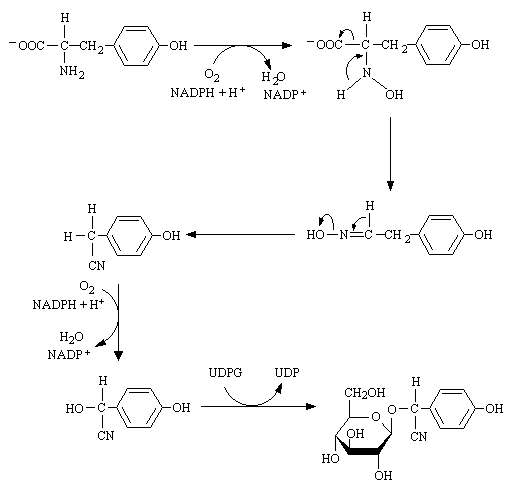
The breakdown of cyanogenic glycosides is illustrated by the following process. First is the hydrolysis of the glycosyl moiety, forming the cyanohydrin. An elimination to the carbonyl releases the strong base cyanide ion which can combine with a proton to form the gas.
Glucosinolates are produced by some plant of the Cruciferae, Capparidaceae, Moringaceae, Resedaceae, Euphorbaceae, Phytolaccaceae, and Tropaeolaceae. Rubbing leaves of the plants induces the smell of mustard oil as enzymes degrade the compounds. The general structure is:
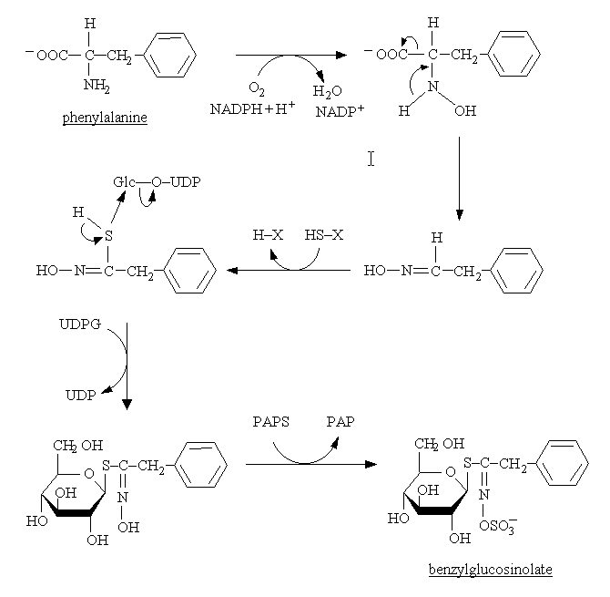
R usually corresponds to the side chain derived from some amino acid, while X + is a typical cation (K + ). Biosynthesis of one mustard oil precursor has been shown but the details are sketchy. The conversion into the mustard oil is the work of a hydrolase thioglucosidase . Mustard oils are isothiocyanates. They can also be converted to thiocyanates by isomerizing enzymes in some plants.
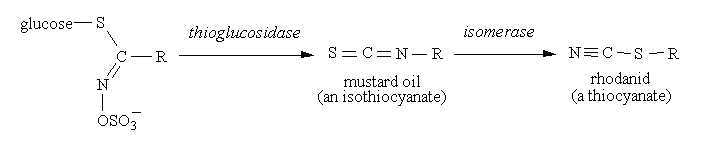
Interconversions of monosaccharides can be described in terms of (i) internal rearrangements, (ii) transfers of 2- and 3-carbon units, and (iii) oxidation-reduction reactions.
There are generally three kinds of internal rearrangements.
Mutation . These reactions are completed by the mutases , enzymes moving a phosphate from one carbon to another, such as phosphoglucomutase which catalyzes interconversion of G6P to G1P (it is freely reversible.). At 30° and at equilibrium, the reaction mixture has 95% G6P. G6P is a simple phosphate ester whereas G1P is an acetal of phosphoric acid, and this formation would be considered less stable (higher energy). An intermediate cofactor of G-1,6-dP has been identified specifically for PGM. Moreover, the reaction involves an intermediate phosphorylation state of the enzyme: a Ser residue at the active site is phosphorylated and can transfer this phosphate to either the C6 or C1 carbons of glucose. The enzyme is not stably phosphorylated and requires G-1,6-dP to maintain this state. (G-1,6-dP is produced by a phosphoglucokinase .)
Phosphates of the aldosugars ribose, mannose, and galactose also have specific mutases, in which the mutases also require catalytic amounts of the bisphosphate forms. In each case the terminal phosphate (G6P, M6P, R5P) is transferred to the C1 carbon usually of the cyclic form of the sugar.
Epimerization . These reactions involve inversion of the configurations about the chiral centers in the carbon chain of the sugar. The enzymes catalyzing the reaction are called epimerases. Some use the monophosphate sugar as a substrate, others the UDP-sugar derivatives. Ru5P 3-epimerase is one epimerase using the sugar phosphate and is used in the Calvin cycle and the pentose phosphate pathway. Among the UDP-sugar epimerases are UDP-glucose 4-epimerase, UDP-arabinose 4-epimerase, and UDP-glucuronate 4-epimerase, which ultimately produce galactose, xylose, and galacturonic acid, resp.
The catalytic mechanism of epimerization seems to involve reversible oxidation-reduction. Tightly bound NAD is found at the active site, and a polyhydroxyketone intermediate is present.
Isomerization (Aldose to ketose conversions). The substrates of the isomerase are typically monosaccharides with their primary hydroxyl groups phosphorylated. G6P isomerase, R5P isomerase, and triose phosphate isomerase are widespread in the tissues of plants. The mechanism involves and enediol intermediate. Studies with 2 H 2 O show that the label incorporating to the C1 of F6P, clearly supporting the use of an enediol mechanism.
Two enzymes are indispensable in the biochemical pathways of the plant, transketolase and transaldolase.
Transketolase . It catalyzes the transfer of a two carbon ketol function (CH 2 OH‑CO‑) from a ketosugar donor to an aldosugar acceptor. The donor ketosugar will become an aldosugar two carbons shorter, the acceptor aldosugar a keto sugar with two carbons more. The donor ketose must be a d -sugar with a 3 S ,4 R ( threo ) configuration, and the ketose product will also have the same configuration. The enzyme requires thiamine pyrophosphate and Mg 2+ , in which the former actually carries the ketol group from sugar to sugar. Among the acceptable ketol donors are Xu5P, F6P, and Su7P. Among the donors are R5P, GA3P, and E4P.
Transaldolase . This enzyme moves a 3-carbon dihydroxyacetone group (CH 2 OH-CO-CHOH-) from a ketose donor to an aldose acceptor. The products are an aldose 3 carbons fewer and a ketose three carbons higher. The donor ketose must have a 3 S ,4 R ( threo ) configuration; the product ketose will have the same configuration. The catalytic intermediate is believed to involve formation of a Schiff's base between a Lys of the enzyme and the C=O group of the ketose. Transaldolase is inactive toward dihydroxyacetone or any of its phosphates. Typical substrate ketoses are F6P and Su7P, and acceptors include E4P, GA3P, and R5P. Aldolase (of the glycolytic cycle) is a special case in which GA3P is combined with DHAP to form FBP, or the back reaction applies; the mechanism is known to be the same as with transaldolase.
Aldonic acids are the monosaccharides oxidized at the C1 carbon to the acid, while alduronic acids are the sugars oxidized at C6.
G6P dehydrogenase is the first step of the pentose phosphate pathway, converting G6P to the gluconolactone form of the acid. It is a NADP-dependent enzyme which removes the hydride from C1, and the incipient carbonium is stabilized by loss of the proton off the hydroxyl to form the carbonyl. The product hydrolyzes spontaneously but a hydrolase (gluconolactonase) is present to speed things along.
UDP-glucose dehydrogenase is a NAD-dependent enzyme catalyzing the oxidation of the primary alcohol at the C6 of glucose into the acid. The mechanism proceeds in 4 steps: (i) conversion of the C6 -CH 2 OH to the aldehyde (-CH=O), in which the pro- R hydride in the group is abstracted by NAD with proton loss from the oxygen to stabilize the incipient carbocation; (ii) a reaction of the formed aldehyde with a sulfhydryl (-SH) group at the active site to form a hemithioacetal; (iii) a second dehydrogenation brought about by NAD again leaving a thioacyl product; (iv) hydrolysis of the thioacyl enzyme-product to release the UDP-glucuronic acid. It is the fourth step which gives irreversibility to the process.
Glucuronic acid can be made by another route in plants as well. The first is the conversion of G6P to myo-inositol by the NAD-dependent G6P cycloaldolase . A suggested mechanism of the action of the enzyme is given below, in which a hydride must be removed from C5 of G6P. The NADH produced in this enzyme is not freely exchangeable (it is tightly bound). The intermediate is 5-ketoglucose 6-phosphate: its formation leads to an internal aldol condensation reaction to form d - myo -inose-2 1-phosphate, which is then reduced by the enzyme-bound NADH to myo-inositol 1-phosphate. Both the intermediate and NAD cofactor never leave the enzyme during these multi-step reactions.
With formation of the product inositol phosphate, the product is hydrolyzed by a specific phosphatase to produce myo-inositol. This is then converted to glucuronic acid by myo- inositol oxygenase , an enzyme found in higher plants and yeast. The exact mechanism is not known: clearly there is a breaking of C–C bonds combined with use of O 2 and formation of a product H 2 O, suggesting a mixed-function oxidase at work. The physiological role for formation of glucuronic acid by this pathway is not understood. One clear difference is that the other pathway (via UDPG) produces a net reduction of NAD, and this one does not, which may be the reason for this pathway.
Plants produce a large number of polyhydroxy alcohols , or polyols , from the reduction of the carbonyl of sugars (both ketoses and aldoses) essentially to form sugar alcohols. The most common are d -mannitol and d -glucitol (called sorbitol, and produced from either fructose or glucose). Glucitol is found in a large number of plants from algae to spermatophytes. Mannitol is generally found in plant exudates (unlike glucitol) and in brown seaweeds. The lichens have those and other alcohols, including ribitol, arabitol, and glycerol. These are all likely produced by NAD(P)H-specific reductases which reduce the carbonyl group of the appropriate sugar monosaccharide.
Ascorbic acid is also produced from the use of these reductases. All animals except for man and other primates, the guinea pig, the red vented bubul, and the Indian fruit bat can produce l -ascorbic acid within their bodies. They do it by reducing glucuronic acid to gulonic acid via NADH-specific glucuronate reductase , which reduces the C1 aldehyde to a primary alcohol.. The molecule is now cyclized by the dehydrating (condensing) action of aldolactonase to from l -gulono-γ-lactone; this esterifies the C4 hydroxy group (of the l -gulonic acid) to the C1 COOH group. It should be noted that the labeling of carbons has become reversed with the indication of the l -gulonic acid diastereomer.
The lactone is now oxidized by l - gulonolactone oxidase , which uses O 2 in the reaction and is not a simple dehydrogenase in that it produces H 2 O 2 ; the C3 carbon becomes carbonyl (a keto form). This essentially forms l -ascorbic acid, since the tautomer of the product is a more stable enediol in which the C=C bond is between C2 and C3. It is the gulonolactone oxidase that is not present in the nonproducers of ascorbic acid.
Plants have an ability to produce ascorbic acid not only by the route just illustrated, but also from d -galacturonic acid. An NADH-specific reductase can reduce galacturonic acid to l -galactonic acid, which can form the γ-lactone by a specific aldolactonase. The resulting γ-lactone of galactonic acid is then a much better substrate for the oxidase producing ascorbic acid.
Experiments in another lab suggest plant ascorbic acid may not be produced (principally) by the routes just described. Loewus and coworkers admininstering [6- 3 H]glucose to plants have found a [6- 3 H]ascorbic acid product. This would indicate that no oxidation of C6 of the sugar is seen during biosynthesis, a requirement for either of the pathways above. It also indicates no reversal of the carbon skeleton. Any ascorbic acid synthesis by the routes above may be incidental.
The most widely found disaccharide in nature. The energy and fixed carbon is translocated in this form from photosynthetic to nonphotosynthetic tissue. The synonym is α- d -glucopyranosyl-β-fructofuranoside , with linkage α1 β2. Sucrose has no free reducing end (so will not react with Benedict's or Fehling's). It is essentially a glucoside, with pyranosyl fructose attached.
Synthesis is by one of two routes. Sucrose synthase can utilize UDPG, ADPG, or GDPG in producing sucrose, but is not likely the main biosynthetic route. Sucrose phosphate synthase , although it uses only UDPG, is most likely the route since the equilibrium favors sucrose formation overall. The reactions of the two enzymes are given:
| sucrose synthase |
UDP
d
-glucose
or ADP d -glucose |
+ d -fructose |
———>
——— |
sucrose + |
UDP
or ADP |
| sucrose phosphate synthase | UDP d -glucose | + d -fructose-6-phosphate |
———
——— |
sucrose 6 F -phosphate + UDP |
The Δ G °′ for the sucrose synthase reaction is − 4 kJ mol -1 (very close to a 1:1 equilibrium) and for the sucrose phosphate synthase reaction is − 20 kJ mol -1 .
For those organisms capable of this metabolic pathway, they are able to bring about the net conversion of fats into carbohydrates. Animals cannot convert the fat which they break down into two carbon acetyl-CoA units back into glucose, even though the fat may have been produced from glucose. There is no way for the carbons of acetyl-CoA to proceed in a manner which brings about the net production of glucose. With the glyoxylate cycle it is possible.
The glyoxylate cycle occurs in bacteria, algae, and certain tissues of the seeds of higher plants during germination . As already stated, it is not present at all in animals, nor is it in the vegetative tissues (leaf, stem, root) or the developing seed of the higher plant. The dependence on this cycle of plants which produce fat-storing seeds is especially critical: the glucose produced from fat is not intended to be used in production of energy, for it is essentially a waste of energy to do so; rather the glucose is instead used to build the cell wall structural polysaccharides during germination until the young plant can begin producing glucose via photosynthesis.
Most of the fat-storing seeds are dicotyledonous, with the fat stored in the cells of the cotyledons. Examples of plants storing fat in the cotyledons are sunflower ( Helianthus annus ), rape ( Brassica napus ), abyssinian kale ( Crambe abysinica ), and peanuts ( Arachis hypogaea ). The castor bean ( Ricinus communis ) stores it in its endosperm. Inside the cells, the fat is stored in membrane-bound spherosomes distributed throughout the cytoplasm.
When germination begins, another organelle, the glyoxysome , begins to appear in large numbers. It contains all the enzymes of the glyxoylate cycle. Glyoxysomes disappear completely when the fat reserve has been depleted. Glyoxysomes are also present in plants which do not store the typical triglyceride fat for their energy reserve. In the cotyledons of the jojoba ( Simmondsia chinesis ) are wax bodies similar to spherosomes, which store wax esters. Wax esters are combinations of fatty acids and fatty alcohols, and a lipase with alkaline pH optimum attaches to the body membrane, producing the components for the glyoxylate cycle. Some cereal seeds (including barley, Hordeum distichon , and wheat, Triticum vulgare ) also have glyoxysomes present during germination, although their endosperm is largely starch. However, around the aleurone layer in that part of the endosperm far from the scutellum is the highest proportion of seed lipid. What is interesting is that it has been shown in these plants that gibberellin induces the formation of glyoxysomes in these embryos, and all the fat appears to be converted to carbohydrate.
Before the glyoxylate cycle begins, the fats must be converted either to free fatty acids or monoglycerides, the substances which enter the glyoxysome. In germinating castor beans, a membrane-bound monoglyceride-specific lipase with alkaline pH optimum hydrolyzes the monoglycerides to free fatty acids and glycerol. The glycerol is not handled within the glyoxysome, but is used in the cytosol to produce glucose.
Within the glyoxysome, free fatty acids are converted into their CoA derivatives by acyl-CoA synthetases. Breakdown into two-carbon acetyl-CoA units then proceeds according to the steps of the β-oxidation spiral. Certain unsaturated fatty acids require extra enzymes, such as Δ 3- cis Δ 2- trans -enoyl-CoA isomerase and d -(–)-3-hydroxylacyl-CoA epimerase to move the double bond and to change configuration of a hydroxyl group about a chiral center, resp. Other enzymes are unique to certain plants having unusual fatty acids in their system: ricinoleic acid ( cis -Δ 9 -12- d -(–)-hydroxy-18:1) is the most abundant fatty acid in castor bean endosperm and cannot be handled by the β-oxidation enzymes alone. The acyl-CoA dehydrogenase and enoyl-CoA hydratase appear to be loosely bound to the inner surface of the glyoxysome membrane.
The acetyl-CoA formed now enters the cycle. The first two reactions are identical with the first two steps of the TCA cycle: formation of citrate by a condensation of OAA and acetyl-CoA using citrate synthase , then isomerization to form isocitrate (2S,3R-isocitrate) by the enzyme aconitase . The next reaction is unique to the glyoxylate cycle. Catalyzed by isocitrate lyase , it involves the cleavage of the C2-C3 bond, forming glyoxylate and succinate. Glyoxylate then reacts with acetyl-CoA to form malate in a reaction catalyzed by malate synthase , also unique to the glyoxylate cycle. Malate is then oxidized to produce OAA, a reaction also found in the TCA cycle. This OAA is essentially a regeneration of the starting material of the cycle. The net product is succinate formed from the use of two acetyl-CoA molecules.
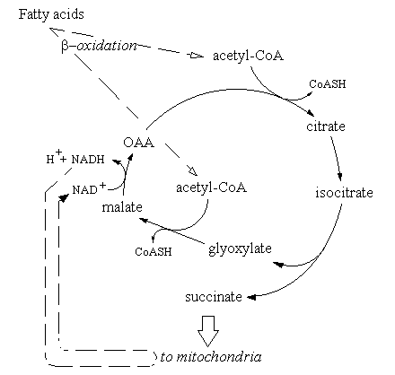
Succinate must exit the glyoxysome since the organelle does not have the necessary enzymes to continue to process of building glucose from succinate. Succinate would necessarily enter the mitochondria to be converted by succinate dehydrogenase, fumarase (fumarate hydratase), and malate dehydrogenase to OAA. The OAA would then be converted to PEP by PEP carboxykinase, and gluconeogenesis continues to glucose from PEP in reactions already described (essentially the reverse of glycolysis).
The five enzymatic activities described have Δ G °' values of given in the table below. The net value is −32.6 kJ mol -1 for the entire cycle, the thermodynamic favorability coming from the breaking of the high energy thioester CoA derivatives.
| ΔG°' (kJ mol -1 | |
| citrate synthase | −31.4 |
| aconitase | +6.7 |
| isocitrate lyase | +8.7 |
| malate synthase | −44.5 |
| malate dehydrogenase | +27.9 |
| −32.6 |
In addition to succinate, a net production of NADH and FADH 2 occurs as a result of the operation of both the β-oxidation and glyoxylate cycles. Note particularly the production of NADH from the malate dehydrogenase step in the glyoxysome. The glyoxysome has no electron transport chain unlike the mitochondria. It is believed that FAD is regenerated by the reoxidation of FADH 2 in which O 2 is involved. This produces H 2 O 2 , which is then converted to O 2 and H 2 O by catalase. The NADH appears not to be reoxidized in the glyoxysome, but probably reoxidized by the mitochondrial NADH dehydrogenase. The question as to which NADH dehydrogenase is unknown. Some suggest a shuttle involving transaminases (serine-glyoxylate transaminase, glutamate-glyoxylate transaminase) present in glyoxysomes and mitochondria may help move the reducing equivalents into the mitochondria.
It can be seen why fat can be converted to carbohydrate by this cycle. Note that the next three TCA cycle steps after isocitrate formation will produce succinate, but two of those involve oxidations which produce two CO 2 . Hence the two carbons put into the cycle when acetyl-CoA enters are effectively lost during these oxidations. They cannot be used to achieve net synthesis of glucose.
In bacteria, the enzymes of the TCA and glyoxylate cycles are not compartmentalized as in the eukaryotic plants. This requires allosteric regulation of the activities of these enzymes. Bacterial isocitrate lyase is strongly inhibited by PEP.
This concerns the fixation of nitrogen: which is the chemical conversion of dinitrogen (N 2 ) from the atmosphere into a biologically useful form of nitrogen, typically reduced nitrogen. The higher plants have no ability themselves, meaning they do not code in their genome the enzymes for nitrogen fixation. Instead many, but not all, plants form a close collaboration with nitrogen-fixing bacteria that can perform this feat. Leguminous plants form specialized nodules in their root tissues in order to accomodate the growth and proper environment for the nitrogen-fixing Rhizobium . Some nonleguminous plants (alder, sea buckthorn) also form symbiotic relationships with nitrogen fixers. The blue-green algae and bacteria like Klebsiella pneumoniae are also nitrogen fixers, but free-living. The nitrogen fixed by these bacteria is then used by the higher plant for its growth (e.g., amino acid biosynthesis leading to protein synthesis); in return, the plant allows for the growth of the bacteria as well.
The genes which control nitrogen fixation ( nif ) have been studied, and the expression of the genes is under careful regulation. Plants not having sources of fixed nitrogen typically obtain inorganic nitrogen (NO 3 - ) from the soil and then use enzymes to reduce this oxidized form of nitrogen to NH 4 + , the customary biologically useful form.
EM pictures of soybean nodules show a system of double membrane structures, originating from the host cell wall and enveloping a group of bacteroids (nodule bacteria). Extraction of these nodules under argon (and oxygen-free environment) shows active nitrogen fixation is possible. (Polyvinyl pyrrolidine is present to inhibit oxidase producing N 2 -fixing-inhibitory phenolics.) Also necessary to see the reaction is ATP, a divalent metal cation, and reduced ferredoxin. The entire complex is known as nitrogenase , having two components. Protein 1 is a molybdoferredoxin which is a heterotetramer of two 51 and two 60 kDa subunits; the entire protein has two Mo atoms, ~24 Fe and 24 S atoms (the S atoms are acid labile), and 30 thiol groups. It is believed that three 4Fe-4S clusters are present. Protein 2 is a very O 2 -sensitive FeS protein which is a homodimer with a 30 kDa subunit; a total of 4 Fe atoms, 4 S atoms and 12 thiols is present. The active nitrogenase has two Protein 2 dimers and one Protein 1 tetramer. The hypothetical structure of the N 2 -fixing system is shown in the diagram below.
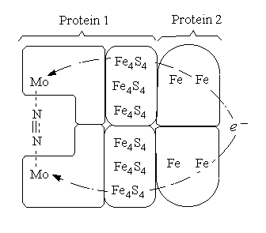
The reduction of N 2 to two NH 3 molecules requires three 2-electron transfers for a total of six electrons: N 2 HN=NH H 2 N-NH 2 2 NH 3 . The intermediates diimide and hydrazine have been identified. The point at which ATP is required is the reduction of components of Protein 1 by Protein 2. This was shown by EPR in which the signal of Protein 2 changed with addition of MgATP while the Protein 1 signal was not altered. Protein 2 also binds tightly to ATP, altering its E 0 ′ from −0.29 V to −0.40 V, making it a stronger reductant. The need for between 2-5 ATP per electron pair is not well known.
The nitrogenase can also reduce protons to form H 2 , and 4 ATP (for each pair of electrons) has been shown necessary. It is not well known how the N 2 molecule itself binds to the protein. Recent work suggests a ferromolybdo complex in which sulfur is also present, the Fe:Mo:S ratio being 8:1:6.
Leguminous plants appear to code for an O 2 -binding protein in their genome which is called leghemoglobin . It is present among the bacteroids and thought to keep O 2 tension low around the nitrogenase plant without affecting the respiration of the bacteria.
Nitrate is the preferred source of exogenous inorganic nitrogen for most plants, present largely because of nitrifying bacteria in the soil using NH 4 + present in the soil for their metabolic needs. Farmers who may fertilize their soils with ammonium compounds may not necessarily be providing their crop plants directly the reduced nitrogen required for growth. Rather the reduced nitrogen may be obtained indirectly as nitrifying bacteria proliferate and provide nitrate to the plant instead. The plant has naturally evolved a better system for absorbing nitrate than ammonium since in the evolution of plants, it was not anticipated that there would be farmers artificially creating ammonium-rich environments.
| Δ G °' (kJ mol −1 , pH* 7) | |||
|---|---|---|---|
| NH 4 + + 3/2 O 2 | → | NO 2 − + 2 H + + H 2 O | − 272 |
| NO 2 − + ½ O 2 | → | NO 3 − | −76 |
The presence of soil nitrate induces genetic expression of a permease responsible for nitrate uptake. Nitrate absorbed is divided into a pool for storage and one for enzyme induction. Nitrate is reduced in two steps: first to nitrite by nitrate reductase , then nitrite is reduced to ammonia by nitrite reductase .
This enzyme has been characterized in both higher plants and bacteria where it is present. The plant enzyme is a soluble molybdoflavoprotein with a MW of ~200,000, although it is thought that the biologically active protein is a dimer of around 500,000. The entire complex has a sedimentation value of 8 S, and one subunit appears to be 3.7-4.5 S complex which is a cytochrome b 557 reductase. It is a flavoprotein which appears to reduce cytochrome b 557 , part of the nitrate reductase. The actual nitrate reductase is a molybdenum-binding protein with a 10-20 kDa weight; the molybdenum exists as its oxide (MoO 4 2− ). The reductase is not constitutively present, but induced with nitrate presence. The enzyme is cytosolic and may be bound to the chloroplast outer envelope. The protein has a very short lifetime (half-times reported to be between 1-24 hr).
Nitrate reductase in blue-green algae does not accept electrons from NAD(P)H but rather reduced ferredoxin.
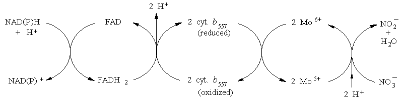
While only two electrons are moved to reduce NO 3 − to NO 2 − , it takes six electrons to reduce nitrite to ammonia. The scheme is shown below. The probable intermediates are nitroxyl and hydroxylamine, and are unlikely to be released from the enzyme until all 6 electrons have reduced nitrite.
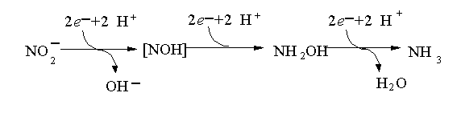
The spinach enzyme has a MW between 61-70 kDa and probably exists as two subunits on the exterior surface of the thylakoid membrane in green tissues. This is because the immediate source of electrons appears to be ferredoxin; it cannot couple with other two-electron carriers.
(Notes only from BCP 122 course at UCD)
A beta-glycosidase exists with broad substrate specificity and is able to hydrolyze any sugar ester to yield the sugar plus cyanohydrin. Cyanogenic monosaccharides hydrolyzed by the β-glycosidase form the monosaccharide and cyanohydrin, and disaccharide esters can also be acted on by the enzyme to form disaccharides and cyanohydrin. Note the following reactions involving the cyanogenic glycoside amygdalin that occur in black cherry seeds:
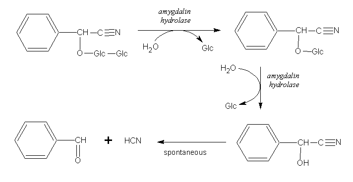
The term terpene is used to denote compounds containing an integral number of 5 C whether they contain oxygen or not. Terpenoids are compounds in which this integral number varies but the origin is from a constructed terpene. These compounds, like alkaloids and phenolics, are not just secondary plant products, the result of an unnecessary metabolism, as some vital hormones are terpenes.
All terpenes derived from a branched 5C skeleton: isoprene , or 2-methyl-1,3-butadiene. Some of examples representing their classes illustrated below are important biosynthetic intermediates. A shorthand in representing these terpenes is the use of the ip (for isoprenoid) in which ip or pi can represent a head-to-tail or tail-to-head construction, resp. Thus farnesol is ip ip ip to indicate is three head-to-tail joinings. Squalene is ip ip ip pi pi pi which shows that it is essentially compose of two farnesyl groups which are joined at one point tail-to-tail.
| Class | No. of C atoms | Example | |
|---|---|---|---|
| Structure | Name | ||
| Hemiterpene | 5 |

|
isoprene |
| Monoterpene | 10 | 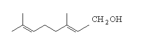 | geraniol |
| Sesquiterpene | 15 | 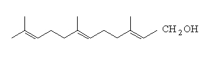 | farnesol |
| Diterpene | 20 | 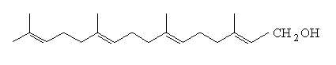 | geranyl-geraniol |
| Sesterterpene | 25 | 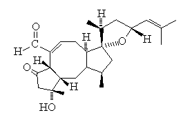 | ophiobolin A |
| Triterpene | 35 | 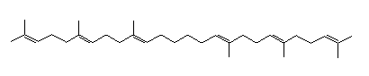 | squalene |
| Tetraterpene | 40 | 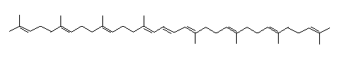 | phytoene |
| Polyterpene |
~7.5 × 10
3
to ~3 × 10 5 |
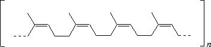 | rubber |
The only free hemiterpene widespread is isoprene and it generally is found in very small amounts (so small that the recent development of highly sophisticated mass spectrometry was necessary to detect it). Dimethylallyl pyrophosphate (Δ 2 -isopentenyl pyrophosphate) and isopentenyl pyrophosphate (Δ 3 -isopentenyl pyrophosphate) are the biosynthetic intermediates and exist in only trace amounts. Mixed terpenoids are hemiterpenes combined with non-terpenoids (purines + hemiterpenes to make cytokinins) and do occur.
Monoterpenes come in (i) acyclic, (ii) cyclohexanoid which are mono-, bi-, and tricyclic, and (iii) cyclopentanoid. Examples are myrcene, limonene, and loganin with structures shown in the table.
Monoterpenes are quite widespread and are components of plant secretory glands containing the essential oils which can be yield by steam distillation of plant material. The families Labiatae, Pinacese, and Umbelliferae account for most of the volatile monoterpenes. Monoterpene glycosides are nonvolatile and widespread.
The largest group of terpenes in both number (several thousand) and variations in carbon skeletal structure and innovation (200 different backbones). They coexist with monoterpenes in the essential oils. The orders Magnoliales, Rutales, Cornales, and Asterales produce the widest number and variations. The Ranunculales produce none, although they must produce farnesyl pyrophosphate to make sterols (they apparently have no channel to sesquiterpene).
Over 500 known. The kaurane and ent -kaurane groups are tetracyclic groups with the same basic structure but different configurations. The latter group derives into steviol and the gibberellins.
The best known sesterterpenes are the ophiobolane family produced only by fungi, but five other groups are known. It was once thought that terpenes greater that diterpenes must form as head to tail dimers such as sterols (ip ip ip pi pi pi) and carotenoids (ip ip ip ip pi pi pi pi), with 25C sesterterpenes not possible.
In 1887 Wallach proposed the
isoprene rule,
which stated that naturally occurring substances are built of the carbon
chains of isoprene molecules. Ruzicka showed then proposed that a form of
isoprene (
active isoprene
) must be formed biologically to construct these larger molecules, and
Lynen eventually identified this active isoprene as D
3
-isopentenyl pyrophosphate (IPP). Folkers (1956) later identified the
precursor of IPP to be the 6-carbon (3
R
)-mevalonic acid.
The synthesis of IPP from acetyl-CoA is shown in the diagram below. Note in a separate diagram the structure of mevalonic acid; hydrogen atom actually removed from mevalonate to form IPP is the pro-R hydrogen. The names of the enzymes thought to catalyze the reactions are also given.
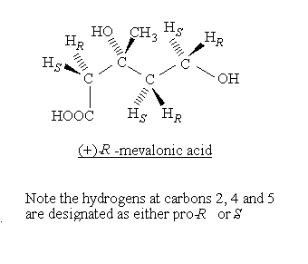
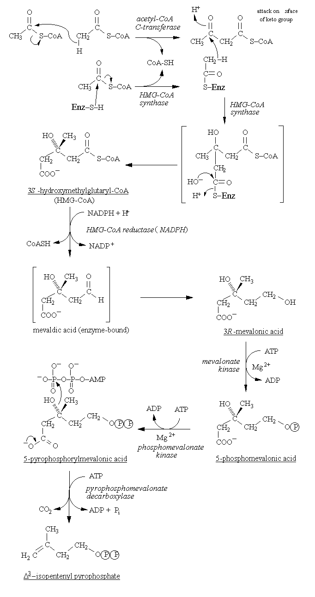
IPP is the active isoprene precursor used as the basis of building all terpenes. Necessary to preparing for the synthesis of terpenes is the conversion of IPP to d i m ethyl a llyl p yro p hosphate (DMAPP). (Note DMAPP is also called Δ 2 -isopentenyl pyrophosphate.) This conversion is enabled by an enzyme, IPP isomerase , which appears to have a sulfhydryl residue at its active site (i.e., a Cys-SH). Either DMAPP or IPP can serve to form the hemiterpenes, but there have been really no hemiterpenes found in abundance in nature other than IPP (see the section below on hemiterpenes).
DMAPP actually serves as the starting molecule for the synthesis of the multiple isoprenoid units forming monoterpenes, sesquiterpenes, diterpenes, etc. Under the control of isoprenyltransferase , DMAPP condenses with IPP to form the C 10 geranyl pyrophosphate. The proposed mechanism of enzyme action is illustrated below.
The mechanism of isoprenyltransferase action shows first a metal-dependent (either Mg 2+ or Mn 2+ seems suitable) ionization of the allyl pyrophosphate, which intially starts with DMAPP, but can also be any allyl pyrophosphate, such as geranyl pyrophosphate (GPP) or farnesyl pyrophosphate (FPP). In the ionization step, pyrophosphate is the biological equivalent of a good leaving group (a concept in organic chemistry), and so the ionization is facilitated. Two metal ions are required for this first step: as the OPP i has considerable negative charge density under physiological conditions, the neutralization of that charge density allows the incipient formation of a (positively charged) carbonium ion, which might not otherwise form if leaving of the pyrophosphate was restrained by electrostatic forces. Following formation of the carbonium ion, a condensation step involving a waiting IPP should quickly ensue; presumably the IPP is already in place, perhaps to facilitate electrophilic attack to encourage the formation of a carbonium intermediate during the ionization step. The positive charge following condensation has now been transferred to carbon 3 of IPP whereas it was delocalized on the DMAPP molecule before. Note at this stage the configuration of the carbons which were joined between IPP and DMAPP. The final step to complete the formation of the C 10 GPP must be the elimination of a proton. In this case, labeling studies show a stereospecific elimination of the pro- R hydrogen on C2 of the IPP molecule, resulting in formation of the double bond.
Note the formation of a C2-C3 double bond would be essential to formation of an allyl pyrophosphate that could undergo another cycle of isoprenyl polymerization by reaction with IPP. This is how the terpene carbon skeletons are added by five carbons. Another cycle of IPP addition to GPP would form the C 15 farnesyl pyrophosphate (FPP), which is the precursor to sesquiterpenes. And addition of IPP to FPP would result in formation of the C 20 geranylgeranyl pyrophosphate (GGPP). Elongation of GGPP with IPP once again forms the C 25 geranylfarnesyl pyrophosphate (GFPP), which will form the sesterterpenes. Continued cycles of isoprenylation can form polyterpenes.
The other terpene classes discussed are generally formed by the tail-to-tail dimerization of one of the terpenes above. Tail-to-tail joining of GPP forms the C 20 diterpenes, of FPP the C 30 triterpenes, and of GFPP the C 40 tetraterpenes. The chemical mechanism is very complex and is illustrated below. (The mechanism is not required for examination purposes; see me later for an update of this file showing the mechanism.)
Secondary plant products representing an important number of pharmacologically active products. Example are cinchona alkaloids found in the bark of Cinchona spp. and Remijia spp. indigenous to the high eastern Andean slopes; they contain quinine, known to be antimalarial since 1639.
Generally alkaloids contain nitrogen. The true alkaloids are said to be those with heterocyclic rings while those without are called protoalkaloids . Their precursors are almost always amino acids, with carbon building generally coming from acetate. Alkaloids not derived from amino acids are called pseudoalkaloids , usually being derived from isoprenoid skeletons.
Alkaloids are found as follows in the plant kingdom:
| Thallophyta | absent except in some fungi |
| Bryophyta | absent |
| Pteridophyta | limited distribution: Equisetum , Lycopodium |
| Spermatophyta | |
| Gymnosperms | limited distribution |
| Angiosperms | |
| (a) monocots | mainly in Gramineae and Liliaceae |
| (b) dicots |
mainly in Rubiaceae (coffee)
Papapavaraceae (poppy) Solanaceae (tobacco) Leguminosae (pea, bean) Apocyaceae (dogbane) |
|
to a lesser extent in:
Rosaceae (rose) Compositae (aster) Labiatae (mint) |
Alkaloids accumulate in four types of tissue: (1) actively growing tissue;
(2) epidermal and hypodermal cells; (3) vascular sheaths; (4) latex
vessels. Usually found in vacuoles and are not present in young cells
until they form vacuoles. Very rarely occur in dead tissue. In Cinchona
bark
, they are not present in the cork but rather the parenchymal cells. Site
of storage often differs from site of synthesis; a good example is
nicotine, which is made in the roots but stored in the leaves.
Labeling experiments with radioactive precursors used a great deal in
verifying hypothetical schemes developed by organic chemists. Although
enzymes have not fully been purified, the products are there. Labeling of
tissues is done in several ways: (i) precursor is assimilable and placed
in the hydroponic support medium; (ii) compound is injected in an aqueous
milieu into plant cavities; (iii) a drop is placed on a leaf surface which
is punctured gently several times at the point; (iv) it is
painted
on the leaf surface with a suitable solvent, then sometimes covered with
silicone oil after solvent evaporation; (v) administered by
wick feeding,
in which strands of mercerized cotton are threaded through the plant so
that both ends emerge close together and can be dipped into a small
solution containing labeled compound; (vi) it is administered by
vacuum filtration,
in which the plant is exposed to a vacuum which
de-gasses
it, placed in a solution, then the vacuum slowly released such that the
plant absorbs the solution.
Three important reactions in alkaloid biosynthesis are detailed below.
The figure below shows how iron is used in a one-electron transfer oxidation (FeCl 3 , alkaline K 3 Fe[CN] 6 can be used) to initiate formation of a very reactive mesomeric phenolate free radical. Polymerization can then occur, with intermolecular coupling potentially occurring at ortho-ortho , ortho-para , and para-para position thanks to resonance.
In this reaction a carbonyl is joined to an amine and a carbanion. The reaction mechanism is illustrated below. Either a 1° or 2° amine reacts in a nucleophilic addition with an aldehyde to ultimately form an enamine which itself undergoes nucleophilic addition to form a larger amine. The R group shown is usually a -SCoA residue
Nearly all derive from a common biosynthetic metabolite, either phenylalanine or its precursor shikimic acid
Insert Table 14.1
Simple phenols like catechol not widely distributed. Most common are hydroquinone. Urushiol (14.1) is catechol with a C 15 side chain and is the toxic chemical in poison ivy ( Toxicodendron radicans ). Δ 1 -tetrahydrocannabinol (14.2) is a resorcinol which is the hallucinogen in Cannabis sativa .
Labeling studies show that phenols arise from phenylalanine via p-coumaric acid (see earlier chap 4 on synthesis of trans-p -coumaric acid). These are converted to benzoic acid which is then oxidatively decarboxylated to a phenol
Found throughout the plant kingdom. p-Hydroxybenzoic acid, protocatechuic acid (14.3), vanillic acid (14.4), and syringic acid are found in all angiosperms examined so far. Gallic acid (14.5) is present in polymerized forms as soluble tannins. Also found are corresponding aldehydes and alcohols including vanillin (Vanilla pod, 14.6) and salicyl alcohol (in willow, 14.7). In addition, carboxyl and hydroxyl groups may be methylated as in the acetophenone 3-acetyl-6-methoxybenzaldehyde (in Encelia farinosa , 14.9).
Notes from
A. L. Lehninger
Biochemistry: The Molecular Basis of Cell Structure and Function
Second Edition, (New York: Worth), 1975, 1104 pp.
The general scheme is harness the light energy from the sun and convert its energy into molecular form used by living organisms. The photosynthetic organisms use these molecules to drive reactions related to their living. Nonphotosynthetic organisms are completely dependent upon them for this energy.
| J. Priestley |
discovered oxygen in experiments done between 1770-1777.
Bad airwas what was formed during the burning of a candle, but good airwas restored by adding a sprig of mint placed for some weeks. He noted that the plant restores the good air to be used by a mouse for breathing or supporting the burning of a candle. He failed to note that the plant required light for this process. |
| J. Ingenhousz | established that the green part of the plant forms oxygen in the presence of light |
| G. Engelmann | showed in 1880 that chloroplasts are responsible for the evolution of oxygen. He made this observation using aerobic motile bacteria and the eukaryotic alga Spirogyra: the bacteria move toward the part of the alga near its single large chloroplast when the cell is illuminated. |
Among the eukaryotic organisms carrying out photosythesis are the higher green plants and the unicellular or colonial green, brown, and red algae, in addition to euglenoids, dinoflagellates, and diatoms.
Among the prokaryotic forms are the blue-green algae, the green sulfur bacteria, and the purple (both sulfur and nonsulfur) bacteria. The blue-greens (Cyanobacter) may be the most closely related to the first ancestral photosynthetic form, may in fact not be different from the ancestral form. CO 2 is their sole carbon source and they show the ability to fix N 2 . The green sulfur bacteria are obligate anaerobes living in ponds and lakes with rich sulfur-containing organic matter. Indeed the green sulfur bacterium Chlorobium accounts for the green color of some mountain lakes. The purple sulfur bacteria ( Chromatium ) are also obligate anaerobes living on H 2 S, sulfur, or thiosulfate, and are found in ponds or sulfur springs. The purple nonsulfur bacteria, which include Rhodospirillum rubrum can live on a variety of carbon sources such as ethanol, acetate, β-hydroxybutyrate, or isopropanol.
In eukaryotes, a special organelle, the chloroplast , is responsible for the photosynthetic activities of these organisms. Like mitochondria, chloroplasts have DNA which they are able to transcribe (it has its own RNA polymerases) and translate (it has its own ribosomes) and the organelle is self-replicating. Chloroplasts are generally larger than mitochondria, ranging in size from 1-10 µm in diameter. The number of chloroplasts varies:in unicellular algae, there is usually only one per cell, but in higher plants, there are as many as 40.
The spinach leaf chloroplast has been the most studied. It is prepared by gentle homogenization of leaves in a blender in an isotonic medium of 0.35 M NaCl or 0.3 to 0.4 M sucrose at pH 8.0. After filtering the suspension through cheesecloth, the organelles are sedimented for a few minutes at 1000 g. Preparation usually involves repeated washing (resuspension followed by centrifugation) to get chloroplasts of suitable quality.
Chloroplasts are surrounded by an outer envelope which is somewhat
fragile. An inner membrane, continuous but often having paired folds
arranged as
lamellae
encloses the
stroma
, similar to the mitochondrial matrix. The lamellae of the inner membrane
flatten to form membrane-bounded sacs or vesicles called
thylakoids
(Gr.,
baggy trousers
). These can be arranged in stacks called
grana
. The membranes of the thylakoids and the intergranal lamellae contain the
photosynthetic pigments and proteins responsible for the transduction of
light energy into the chemical energy ultimately stored into sugars.
Photosynthetic bacteria and blue-green algae lack chloroplasts, but their photosynthetic systems are embedded into their cell membranes or into vesicular structures called chromatophores .
All photosynthetic organisms except bacteria utilize H 2 O as an electron or hydrogen donor to reduce various acceptors. As a result, oxygen (O 2 ) is evolved from the process:
| H 2 O + CO 2 |
hν
→ |
(CH 2 O) + O 2 |
Carbohydrate is the product. As for other organisms which do not use water as donor because they are strict anaerobes and the production of oxygen would kill them, there are alternative donor molecules. The green and purple sulfur bacteria use hydrogen sulfide:
| 2 H 2 S + CO 2 |
hν
→ |
(CH 2 O) + H 2� O + 2 S |
The elemental sulfur is produced in globules which accumulate and are extruded from it. Some nonsulfur purple bacteria used an organic hydrogen donor, such as isopropanol:
| 2 CH 3 CHOHCH 3 + CO 2 |
hν
→ |
(CH 2 O) + H 2� O + 2 CH 3 COCH 3 |
Fundamental similiarities between these reactions were first noted by C. Van Niel, who saw the reaction as:
| 2 H 2 D + CO 2 |
hν
→ |
(CH 2 O) + H 2 O + 2 D |
From this Van Niel could predict before it was established as true that molecular oxygen in plants was derived from water and not CO 2 . He also showed that electrons actually are taken from two water molecules in plants to produce the one unit of carbohydrate product or one molecule of O 2 , which is also true.
It is seen that CO 2 is the acceptor if not the donor here. Actually, it is the major acceptor, meaning it is not the only acceptor. All photosynthetic autotrophs must produce the carbohydrate which they may use for energy and in many cases, structural building. There are other acceptors however. Reduced nitrogen is necessary for incorporation into forms of reduced carbon to produce amino acids, and the form available in the soil environment is usually nitrate. The list below shows some of the electron donors and acceptors.
9 H 2 D + 2 NO 3 − → 2 NH 3 + 6 H 2 O + 9 D
3 H 2 D + N 2 → 2 NH 3 + 3 D
2 H + + D 2− → H 2 + D
In plants, the final product of the light reactions is actually NADPH and ATP, which are used to carry the reducing power and other energy into these reactions, so it is not proper to see photosynthesis as strictly a production of carbohydrate.
A difference between the light and dark reactions was suggested by an experimental finding. Photosynthetic organims subjected to intermittment flashes of light of millisecond or less duration and followed with intervals of varying darkness indicate that maximal O 2 evolution occurs if a light flash of 10 μs pulse is followed by a longer dark period (60 ms or more, or at least 6000 times longer). This varying period depends greatly on the temperature, with lower temperatures requiring longer periods.
D. I. Arnon and coworkers (1958) demonstrated these dark and light reactions as separate independent occurrences by flashing chloroplasts in the absence of CO 2 , disrupting the organelles to remove the grana, then added labeled CO 2 to the stroma. This showed a division within the chloroplast structure, the presence of the light and dark reactions, and that the chloroplasts were the organelles capable of the entire process of light conversion to hexose formation.
Light is said to be transmitted in photons or quanta . About 12% of the solar energy reaching the earth surface (est. 2 × 10 25 cal/year) is available to plants, with the balance outside the spectral range of plants, absorbed by the atmosphere or by the nonbiosphere.The equation of Planck shows the relationship between energy and the wavelength of light. One Einstein of photons (1 mol) is the visible light spectrum can range between 40 and 72 kcal of energy, with the violet wavelengths producing the higher energy. This energy is considerably greater than the energy needed to produce a mole of ATP from ADP, which require 7.3 kcal under standard conditions.
Molecules can absorb photons, and consequently their energy, but molecules
cannot just absorb any photon that passes by. The arrangement of electrons
around the atomic nuclei dictates the fundamental radiative frequencies
which can be absorbed. Hence a molecule is an
antenna
for a particular electromagnetic (light) frequency. The concept of
resonance is appropriately understood here, since the fundamental
frequency or frequencies absorbed by molecules will be the frequencies at
which the molecule resonates. Electrons within these molecules absorbing
the light which is particular to them are boosted to higher energy states
or
excited
states
. This molecular excitation occurs on the order of less than a femtosecond
(10
−15
s). The energy can be dissipated rapidly as a re-emission of light or in
altering the various vibrational modes of the molecule (vibrational,
rotational, translational entropy) and the molecule returns to the
ground state
. Any light emission is likely to occur at a longer wavelength (lower
energy photon) since some energy invariably is distributed to other
changes in molecular entropy; this light emission is observed as
fluorescence
which, if it occurs, is complete by 10 ns. Alternatively, the excited
molecule may react with another, in the process losing the high energy
electron in what is a photochemical reaction.
All cells capable of photosynthesis contain light-absorbing pigment molecules called chlorophylls , of which most are green, imparting the color to the organism. Not all pigments are chlorophylls and are green. Algae and bacteria come in a variety of colors usually because other accessory or antenna pigments are present, such as yellow, red, or purple carotenoids and the blue or red phycobilins .
The chlorophylls are extractable from leaves with alcohol or acetone and can be resolved chromatographically. The word chromatography itself was first used by the Russian botanist Tswett to describe their separation on inert adsorbents. The higher plants contain two forms of chlorophyll, a and b. The structure of chlorophyll a was shown in 1940 by H. Fischer and was proved by its total synthesis in 1960 by R. B. Woodward. Chlorophyll b differs from the chl a form by substitution of the methyl group on the B ring with a formyl (CHO) group. The chlorophylls are essentially magnesium-porphyrin complexes but the porphyrin differs from protoporphyrin in the nature and position of the substituents of the pyrroles and the presence of an E ring of cyclopentanone formed on the C ring. Also attached via the propionate substituent of the D ring is a phytol side chain (a saturated sesterpenoid alcohol). Hydrolysis of the ester by chlorophyllase produces chlorophyllide a . In acetone, pure chlorophyll a has absorption maxima in the red and blue, at 663 and 420 nm. In the cell however, the maxima are more abundant, at 660, 670, 678, and 685 nm in the red. This is because the absorption properties are altered in chlorophyll a by its association with different proteins.
Other kinds of chlorophyll include the chlorophylls in algae, diatoms, and dinoflagellates (chlorophyll c ) and the chlorophyll in bacteria called bacteriochlorophyll , which also comes in an a and b form.
Among other pigments are the phycobilins , pigments found in algae and which resemble chlorophyll molecules in that they are tetrapyrroles. But they are different in that they are linearized by oxidation and, being open, do not complex with Mg 2+ . Two phycobilins are phycoerythrobilin and phycocyanobilin , which associate with specific proteins and the complex is then called phycoeythrin and phycocyanin , resp.
Plants and other photosynthetic organisms contain a large amount of polyisoprenoid pigments called carotenoids , which include the carotenes (distinguished being strictly hydrocarbons having a cyclohexene ring on both ends of the linear molecule) and the xanthophylls (distinguished by the presence of oxygen in the terminal rings).
Special pigments in plants are called P700 and P680, discovered by B. Kok
using special spectroscopic methods. These pigments undergo
bleaching
(loss of color absorption) when illuminated with either 700 or 680 nm
light, resp. The bleaching can result when ferricyanide is added as well,
and hence the bleaching occurs when an electron is lost. It is thought
that P700 is chlorophyll a associated with a specific protein. P700 is
only about 0.25% of the total chlorophyll.
R. L. Hill first showe that light-induced oxygen evolution could be observed in cell-free granular preparations extracted from green leaves. He showed as well that photochemical reduction could occur without the presence of CO 2 and that artificial electron acceptors (reducible dyes, ferricyanide) could be used to drive the oxidation of water. These acceptors are called Hill reagents and the reaction the Hill reaction . It was naturally seen that fixation of carbon involves a flow of high energy electrons to CO 2 and that the path in between could be analyzed.
In 1951, three different groups reported that the common metabolite NADP + could also replace or be the natural Hill reagent. It becomes reduced (accepts electrons) in the same manner as the artificial acceptors. Hence NADP + was identified as the common carrier.
D. I. Arnon, M. B. Allen, and F. R. Whatley in 1954 showed that isolated spinach chloroplasts illuminated in the presence of ADP and P i resulted in the formation of ATP. Hence it was concluded that energy from light was conserved in the high energy phosphate bond. A. W. Frenkel independently discovered a phosphorylation process in photosynthetic bacteria as well. Hence energy coupling in chlorophyll occurs by conversion of energy forms to ATP in the same manner as in mitochondria.
If plants are illuminated with monochromatic light over the range of the spectrum, it is observed that O 2 evolution drops rapidly with light above 680 nm, a phenomenon called the red drop . R. Emerson demonstrated that light at 710 nm, not effective by itself, but supplemented with light 670 nm, greatly enhanced the photosynthetic efficiency. Duysens has postulated that the long wavelength system with a maximum of 710 nm is photosystem I and is not responsible for oxygen evolution. Photosystem II is the other photosystem activated by wavelengths at about 670 nm and below, and is responsible for oxygen evolution. The photosynthetic bacteria which do not evolve oxygen contain only one photosystem which closely resembles the photosystem I of the oxygen-producing organisms. It is for this reason that the bacterial photosystem and plant photosystem I arose first and later photosystem II evolved.
What about the differences between PS I and PS II? PS I appears to have a higher ratio of chl a to b than does PS II. In PS I there is a large presence of chl a -protein complexes absorbing at long-wavelengths absent in PS II. The photosystems are physically distinct as well, since detergent-containing centrifugal gradients can separate them.
This file is the last part on the notes on plant biochemistry.